01 · Breach
Deploy at the southern insertion point. Read the courtyard, identify cover, and locate the cyan signal sites. Initial sentinels establish the rules.
The Last Signal.
A complete web FPS mission. A distinctive foundation for a much bigger game.
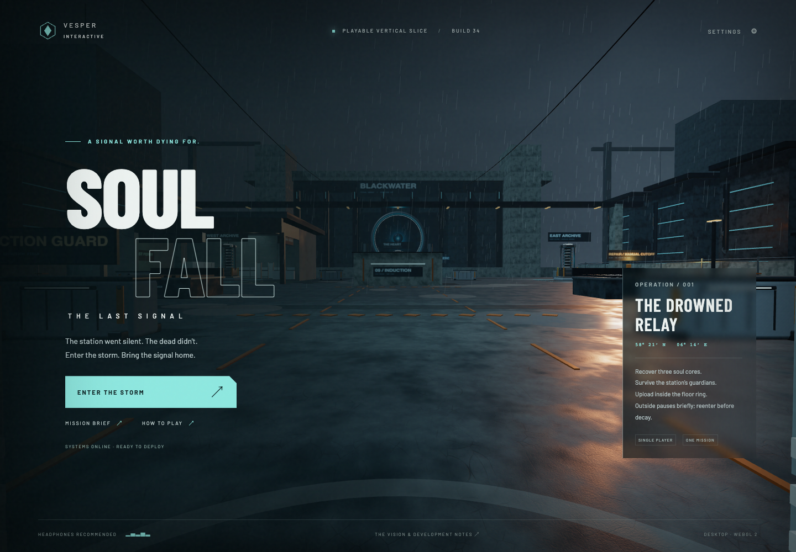
Build33's two independent players both died twice. One reached all memories and roughly 47% upload, then an emergency dash left the ring and lost progress before death. The other died on return. The immutable before audit and image establish a real mechanics conflict: a source-arranged, no-enemy normal-key phase/return reduced 2.0 seconds of upload to 0.6. That is geometry evidence, not ordinary mission play or enjoyment.
Build34 adds 1.25 simulation seconds of dropout grace, replenished only by actual valid in-ring upload. Outside progress pauses, then loses two seconds per second after grace expires. Reentry resumes upload and replenishes grace. Airborne planar overlap remains outside. The strict 2.7 m grounded ring and required actual in-ring upload time remain 4/6/8 seconds for Story/Operator/Veteran; those seconds need not be continuous.
This deliberately makes defensive repositioning more forgiving. Repeated brief exits can preserve upload and allow kiting. The initial 1.25-second choice is a coherent test of Soul Shift, not a certified perfect value or an unchanged-difficulty claim. Phase, damage, invulnerability, enemy roles, finite waves, recovery, collision and the Build33 open medical bay remain as authored. Upload cannot advance or finish outside. The existing HUD distinguishes progressing, paused with a return countdown, decay, airborne landing and approach; physical mast distance never substitutes for ring eligibility.
Local development and Pages may evolve. The user's tailnet play URL continues serving the immutable Build23 snapshot through its existing owned server. No server replacement, public Vite bind or Tailscale change is part of this build. The overall quality mission remains open; no perfect-score or AAA certification follows this audit.
The sequential package manifest records 30 successful commands: development and production smoke; combat, phase/usability, encounters, mission/playtest, movement/browser, medical/exit, Warden art/motion/steering, recovery, attackers, receiver/composition, marker composition, ending, extraction, visor/rendering, archive route, visible driver, objective notice, roles, corner and the automated normal-controls mission. The exact-information controller actually won with three cores, upload 1.0 and no page errors. It reads internal data to choose paths and aim, so this is correctness evidence, not ordinary discovery or fun.
The new buffer contracts cover 30/60/120 Hz, exact partial-step expiry, prolonged absence, first entry, replenishment/repeated brief exits, pause/death/restart, airborne eligibility, real projectile/direct damage during grace, and actual 4/6/8-second difficulty holds with no outside finish. The old immediate-decay fixtures now deliberately test a paused interval followed by actual decay, or explicitly exhausted grace. A low-quality ADS capture verifies the same compact HUD and frozen physical progress. Uplink renderer cells use simulation progress directly; grace adds no cosmetic upload.
The matched centre fixture uses actual W+Shift for 30 updates at 120 Hz, then S for 84 updates. It reproduces 6.2125 m outside after the dash and 2.3625 m inside after return. Build34 retains 2.1 seconds after the dash and reaches 2.1667 on return, versus the immutable before result of 1.8 and 0.6. Two adjacent starts also preserve progress and return inside. Initial grace was earned by two actual in-ring seconds. See phase capture and low ADS. These source-arranged tests remove enemies to isolate geometry; damage checks are separate. They do not establish natural use, human timing, enjoyment or unchanged difficulty.
During fixture development, disabled animation frames caused a default RAF-polled asset wait to time out; explicit polling fixed the fixture. An exact 2.1-second expectation incorrectly included adjacent starts; their different boundary crossing yields 2.0917 seconds. The difficulty fixture also needed an explicit complete starting pose before its terminal-step assertion. Corrected checks pass. No game tuning followed those fixture failures. All old reports and the immutable before audit remain intact.
Gameplay source was frozen across both independent reviews; see hashes. Chrome/Playwright is the previously established fallback after two shared-preview snapshot timeouts. Software allow flags alone do not prove a renderer backend; no hardware performance or audio enjoyment claim is made. Test Chrome and Blender were absent before ordinary review. Driver lifecycle checks pass; reviews each must close their owned browser before the next session.
Final post-review checks: handbook, buffer and production smoke all passed. Only the handbook CSS dismissal placement changed after the two reviews; no gameplay retuning or rescore followed.
Exactly two fresh native GPT-6.1 Sol reviewers used the existing visible-playtest driver, normal URL and documented controls, with inspected JPEGs and up to two terminal attempts each. No source, tests, prior routes/scores, hidden state or arranged actors were supplied. Browser sessions ran sequentially on frozen gameplay source. Every terminal outcome and raw action log is retained; both explicit closes reported browserClosed:true, exit 0, and absent exact owned driver/Chrome PIDs.
Reviewer 1 raw report: death at 01:11 after all three memories, 0 eliminations; death at 00:32 after two memories, one critical elimination. It never acquired upload, so did not exercise the dropout buffer. It found coherent presentation and clear recovery/failure feedback, but struggled to identify route openings while facing walls and cover. First death, second death, raw actions.
Reviewer 2 raw report: actual wins at 00:44 with zero eliminations and 00:45 with three critical eliminations. No deaths or abandoned attempts. It witnessed ring upload and victory, but did not test leaving with acquired upload, so the buffer's natural tactical value remains unobserved. It flagged combat bypass/short mission pacing alongside useful objective feedback. No mandatory kills were added in response: kills remain optional. These two wins and reviewer 1's two deaths are limited, differing experiences under command-and-pause play, not a difficulty distribution or causal evidence for the new buffer. First win, second win, raw actions.
| Raw provisional /10 | Gameplay | Presentation | Usability | Readability | AAA readiness |
|---|---|---|---|---|---|
| Reviewer 1 | 6.5 | 7.5 | 6 | 6.5 | 3.5 |
| Reviewer 2 | 6.5 | 7.5 | 7 | 6.5 | 3 |
Reviewer 2 additionally gave a whole-game 6.7. Ratings retain their original coverage limits: reviewer 1 did not see victory/upload, reviewer 2 did not see death or confirm phase break/grace. Neither provides continuous human play, audio enjoyment, hardware FPS or AAA certification. No third review or rescore occurred.
After both reports, the small shared handbook issue was fixed: its primary dismissal action stays visible while the long content scrolls. Normal-URL menu correctness checks verify button bounds and ordinary dismissal at 1280×720, 1280×800 and 1440×900; post-fix image. This CSS-only change follows the frozen reviews and does not change gameplay. Broader route discovery, dense threat text, short combat-optional pacing, repeated geometry/actor production detail and the buffer's unobserved natural use remain gaps for the parent mission. No balance or layout tuning was made to chase wins or scores.
Both Build34 reviewers still found actor forms simple and combat labels dense. The parent inspected the actual extraction-defense capture, where a nearby opaque orange projectile occupies a large portion of the view. Enemy projectile presentation now uses a narrow16cm long/5cm diameter incandescent bolt, aligned to its travel direction, instead of the9cm-radius orb. Its whole visual envelope fits inside the old sphere. No collision size, speed, damage, shot lifetime, aim prediction, enemy role, phase, uplink or mission rule changed. Swept collision still uses the same authoritative projectile position and player/cover tests; the visual mesh does not decide damage.
Six controlled renderer views cover three ranges and both enemy weapon types, checking velocity alignment, envelope, unchanged speed/damage/lifetime and zero page errors. The parent inspected the actual near rendering. These fixed in-flight meshes are arranged presentation evidence, not ordinary threat acquisition or enjoyment. Existing combat checks, phase/handling/audio checks and cover/ending checks passed. All fourteen production checks also passed. Thinner projectiles may be harder to see at range; fresh ordinary review must examine that tradeoff rather than assume a win from a smaller shape. Runtime VFX primitives are code-built; the original Blender character/environment assets remain unchanged in this small follow-up.
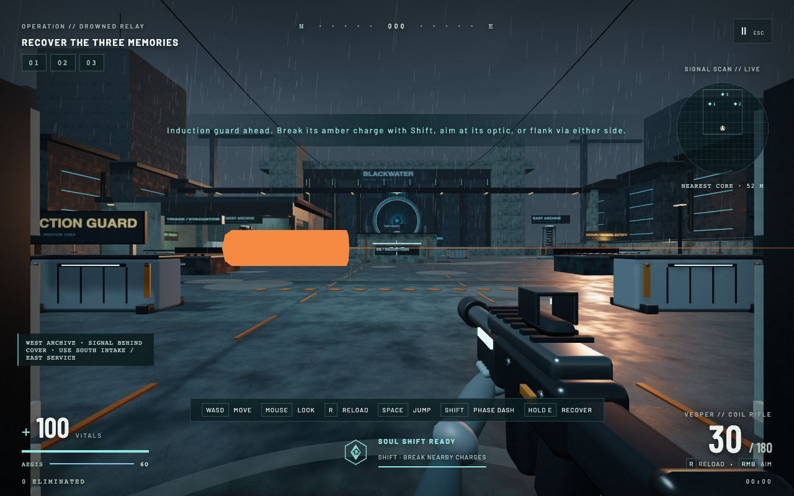
The next substantive pass is original Blender Sentinel/Interceptor silhouettes and visible propulsion/locomotion. Their box-like forms were mistaken for mounted equipment in earlier ordinary reviews. The goal is to recognize an attacker through its body and motion, without another layer of HUD text. Precision anchors and credible collision envelopes must remain aligned. Independent Build34 scores and failures are unchanged; two fresh ordinary reviews will judge the combined next build. Stable Tailnet Build23 remains untouched. The quality mission stays unfinished.
The retained Build32 corner audit and ordinary return captures motivated a deliberate level redesign. The front east and short east front concrete returns are removed. A connected steel header spans the south intake and east service bay, with its corner column moved outward under an extended canopy edge. This keeps a visible structural load path without placing a post in the former south departure line. The receiver remains at its original position. The western front return, west and rear walls, storage spine, lockers, stretcher fittings and story station remain. The intake desk is relocated against the rear east wall to preserve useful cover without obstructing the broader intake.
The first column placement passed the two original straight departures but caught four neighboring starts/angles. That rejected result is retained in first-column failures. The revised 27-pose departure and render audit uses actual ordinary W events with 240 updates at 1/120 second. No jump, dash, enemy pressure or cabinet-side waypoint correction is used. These are source-informed geometry checks, not natural discovery or enjoyment evidence.
The open bay intentionally exposes the right recovery side to yard fire where the old front return blocked it. Shelter from rain does not provide ballistic protection. Rear furniture and the western wall still provide cover, but this pass does not establish safer combat or improved win probability. Guard roles, finite roster, pursuit limits, damage, precision, recovery, phase and extraction rules remain unchanged. No difficulty tuning follows review deaths.
Shared JSON supplies solid bounds, openings and roof shelter. Original Blender geometry is rebuilt from it, with removed-wall liners removed, a manufactured two-sided service-sign backing, suspended intake tray, and supported ceiling light fittings. Low quality retains the same collision and rain rules. Actual renderer samples cover the receiver, yard approach, right side and both exits at 1280/1440, low/balanced/high and hip/ADS. Software fallback flags do not establish hardware acceleration, frame rate or audio enjoyment.
Final validation completed all 29 package commands sequentially, including development and production smoke, combat, phase/usability, encounters, mission, playtest, movement/browser, medical/exit, Warden art/motion/steering, recovery, attackers and fallbacks, receiver/composition, marker composition, ending, extraction, visor, rendering, archive routes, visible driver, objective notice, role contracts and normal controls. The final exact-information controller actually won with three memories, extraction progress 1 and errors []; it eliminated eleven enemies. This controller reads internal positions and colliders, so it establishes correctness only. The twelve medical AI pursuits crossed all tested south/east enter/leave boundaries with zero solid penetrations; rain-under-roof leaks were zero. Six additional arranged local guard/hunter south routes crossed, with guard return settling within 0.69 m. All eleven authored solid bounds matched runtime colliders, including continuous roof/header envelopes. The exposed-shot fixture reduced shield from 60 to 41; the retained west wall still blocked the separate shot fixture.
Failures are retained in the first suite and its failure logs. The first desk location overlapped a guard navigation-clearance envelope and failed both spawn and full-roster connectivity checks; the final rear-wall placement preserves the original spawns. Two historical bullet/LOS assertions used the intentionally removed wall; they now exercise the retained west return, alongside a positive open-bay LOS and damage test. The first local pursuit fixture used a Sentinel already inside its normal standoff range and a projectile step too short to reach the player; the retained fixture observations are superseded by a retreating local target, Warden guard and Interceptor hunter routes and sufficient swept travel. No enemy behavior was altered for those assertions. An early frozen-frame harness used RAF polling and timed out; explicit timer polling corrected it. One mission run was interrupted by development reload while edits were in progress, then passed with edits stopped. Final checks ran without implementation edits. Historical-named role and motion fixtures now accept prefixes to avoid overwriting history.
Validation: sequential package suite, matching solids, local pursuit and exposed-shot check. Historical reports and immutable before evidence remain available below. The publicly served Tailnet Build23 snapshot and its Python server remain untouched; local development and public Pages may show newer work. The overall quality mission remains open.
Parent follow-up: phase and uplink conflict. Build33 reviewer1 reported that its emergency dash left the small hold ring, decayed progress and preceded death. The parent reproduced the mechanics on unchanged Build33 using an arranged, threat-free keyboard fixture: ordinary W+Shift from the ring centre for0.25 simulated seconds, then ordinary S for0.7 seconds. The actual dash crossed the boundary and immediate return lost acquired upload. This fixture deliberately starts with2seconds upload; it is not an ordinary mission, discovery test or human enjoyment measure. Its screenshot is actual rendering after the dash. No page errors occurred, and the owned browser closed.
The next creative decision is a proposed1.25-second uplink dropout buffer. Only time actually inside the existing grounded ring will advance upload. Leaving briefly will pause acquired progress; staying out beyond the buffer will resume the original twice-speed decay. This deliberately makes defensive repositioning more forgiving and reduces the penalty for using the signature movement ability. It does not grant protection, progress outside the ring or automatic completion. The proposal still needs implementation, exact expiry/reentry/pause/restart checks and two fresh ordinary reviews. Radius, required in-ring time, enemies and damage should stay unchanged. Earlier independent deaths and provisional scores remain untouched. Stable Tailnet Build23 is unchanged; the overall mission remains unfinished.
Exactly two fresh native GPT-6.1 Sol reviewers used the existing live-TTY visible driver, the visible Mission Brief and How to Play, and ordinary controls. Neither read source, tests, old reviews or hidden state. Browser ownership was sequential. Source hashes match before, between and after both sessions; no gameplay fixes or rescores followed. Each explicitly closed the driver, exited zero and verified its owned driver/Chrome PIDs absent. Reports: reviewer 1 and reviewer 2. Raw actions: first and second.
Reviewer 1 died at 00:34 with two memories, then 00:55 with all three, one critical kill and approximately 47% uplink in the captured view (the action log sampled 45% just before capture). An emergency dash left the strict ring and progress decayed before death. Reviewer 2 died at 00:29 with one memory, then 00:55 with all three and one critical kill; extraction hold was not reached. All four deaths remain in evidence. There was no ordinary extraction win.
Provisional whole-game gameplay / presentation / usability / readability / AAA-readiness ratings out of ten were 6.5 / 7.5 / 7 / 6.5 / 4 for reviewer 1 and 6.5 / 7.5 / 6.5 / 6 / 4 for reviewer 2. These are unforced impressions from paused, segmented visible play, not matched comparative trials, hardware or audio certification. Neither observed victory. No score target or claim of AAA readiness applies.
Both found cohesive art and learning payoff from optic fire, but small-threat identification, dense threat cues and pressure during return remain concerns. Receiver-versus-pylon proximity confused reviewer 2; cover edges elsewhere and the extraction-ring/dash interaction frustrated reviewer 1. These are larger mission/readability questions for the parent, not evidence that this architecture change improved combat balance. No difficulty, HUD, receiver reach or extraction rule was changed to address the deaths. The overall quality mission remains open.
This is a deliberate encounter pacing change, following ordinary runs in which bypassed defenders accumulated on the return. It does not establish unavoidable damage in earlier builds. The induction Warden, two medical Sentinels, and relay Warden/Sentinel have immutable spawn homes: five site guards. Two perimeter Sentinels, two engineering Interceptors, two final-recovery reinforcements and two extraction Interceptors are hunters: eight mobile enemies, thirteen total. Once-only stages and optional combat remain intact; recovery never requires kills.
A site guard acquires a visible trespasser strictly inside 12m of home, pursues until the target passes 18m from home or its own body passes 16m, and remembers the last visible position for three seconds. Crossing a pursuit limit initiates a sticky return through the existing cached ground navigation; it completes within 1m of home and settles within 0.7m. A fresh local visible intrusion can then restart pursuit. These different acquisition/exit thresholds and committed return prevent boundary chatter. Homes do not move. The 16m body limit initiates return rather than acting as a collision wall; turning, obstacles and separation can produce modest overshoot. These are local territories, not arbitrary world clipping.
Weapons operate independently of duty. A returning or holding guard may still charge and shoot a visible player within the existing 36m range. Crossing a territory limit never clears windup, shot target, health, stagger, armor state or live projectiles. Existing simultaneous charge limits, damage, precision anchors, phase windows and extraction rules remain unchanged. Existing rig travel, track/vanes and bounded Warden turns communicate return motion; no additional HUD instructions or out-of-sight role labels were added.
The intended consequence is less accumulation of old site defenders at extraction, with more localized engagements and mobile hunters carrying pressure across the yard. Bypassing a guard becomes more useful and can make the return easier. Holding guards can still shoot across open lanes, and a player returning to their sites meets surviving defenders at full remaining health. This is not a claim of unchanged difficulty, or tuning to a controller win. Arbitrary three-argument spawnEnemy fixtures retain mobile pursuit; actual encounter creation explicitly assigns roles. The twelve legacy medical entry/exit pursuits still test the mobile/default navigation contract. The Warden sharp-turn fixture moves its request from exactly 12m to 11m to test actual local guard acquisition; separate Build32 contracts test the boundary itself.
Verification uses arranged deterministic simulation, actual WebGL/motion suites and an exact-information normal-controls controller. Those are correctness evidence, not ordinary discovery or human enjoyment. Navigation retains its existing 0.15s clearance sampling, 0.8s path-query cadence and 2400-expansion query bound; no matched baseline performance comparison is claimed. The stable tailnet play URL continues to serve the immutable Build23 snapshot. Build32 is the evolving local development and Pages source; no tailnet backend or configuration was changed. The overall quality mission remains open.
Evidence: actual assigned-role transitions, sequential suite record. The final-source controller won in 51.51 seconds with three memories, 11 eliminations, full extraction, 100 health, 60 shield and no browser errors. It had exact internal-state access for aiming and navigation. This is not an independent ordinary-play result. All 28 requested package scripts have a passing latest result; initial failures and resolving retests are retained in the validation index. Six actual rendered return-motion frames accompany the role evidence. Both ordinary reports are linked below; source stayed frozen throughout those sessions.
Exactly two fresh GPT-6.1 Sol reviewers played sequentially using the existing visible driver, visible briefing/handbook and normal controls. Source hashes stayed identical across both sessions. Both explicitly closed their browsers, exited zero and verified their exact owned PIDs absent before any following session. Raw reports and all deaths are retained: reviewer 1 and reviewer 2, with first action log and second action log.
Reviewer 1 died twice: 00:36 with no memories/one elimination, then 00:54 with all three/two eliminations and 28% uplink observed. Reviewer 2 died once at 00:50 with all three/one elimination and 16% uplink last captured. Provisional whole-game gameplay/presentation/usability/readability/AAA-readiness scores were 6.5/8/6/6.5/4 and 6.5/8/7/6.5/4. These are bounded screenshot-driven impressions, not continuous human play or hardware/audio certification. There was no ordinary extraction win, no score target and no rescore.
Both reviewers found a cohesive setting and functional recoveries, but cover/service navigation and crowded threat cues remain gaps. The localized defenders do not remove the danger of rushing through remaining hunters or exposed extraction approaches. These runs do not establish a balance improvement over previous builds: attempts and routes differ, and the sample is small. No additional difficulty tuning followed their deaths.
After both reviews, a small perception correction makes the guard's outer pursuit check use its last visible target position while LOS is lost, rather than the hidden live player position. This preserves the promised three-second search memory and prevents hidden movement from prematurely triggering return. A further navigation check found that the relay Warden at [0, -40] fitted the 0.45m movement body but not the stricter 0.55m navigation clearance behind the pylon. Moving its authored spawn/home half a metre back to [0, -40.5] makes that cell connected. The actual return-around-pylon fixture settles within 0.69m of home, all thirteen authored spawns connect to extraction on the cached occupancy graph, and actual rifle damage can eliminate every assignment from sampled walkable firing approaches. This is an independently justified clearance fix, not extraction or damage tuning. The review scores describe the frozen source before both corrections; no ordinary rescore was requested or performed. A new contract checks hidden far-away movement, and affected/full package checks were rerun. The historical-named hierarchy motion fixture now accepts a capture/output prefix and defaults to a current name. An earlier run wrote to that historical name; exact original contents were restored, and further runs use Build32 paths. Historical reports and captures have no final diff.
Dedicated contracts and actual assigned-role fixtures can be rerun with npm run test:roles. The overall quality mission remains open. Parent follow-up should focus on natural movement through medical exits, threat acquisition under fire and combat cadence across recovery and return, with broader human evidence before production claims.
Parent follow-up: corner audit before the next layout pass. Reviewer2 recovered all three memories, then its captured service departure showed an obstructed southeast corner; health fell from100 to6 while leaving. The actual input log shows a turn from heading108 to176 and no reduction in the45m extraction distance across that correction. This is not proof of an invisible collider or unavoidable damage. Parent controlled geometry audit on unchanged Build32 starts at two physically valid poses and applies ordinary W events facing south for two seconds, with actual simulation and no enemies. Both stop at the visible front wall while grounded; no page errors occurred. The existing484-departure fixture uses explicit side connectors and does not demonstrate spontaneous route discovery.
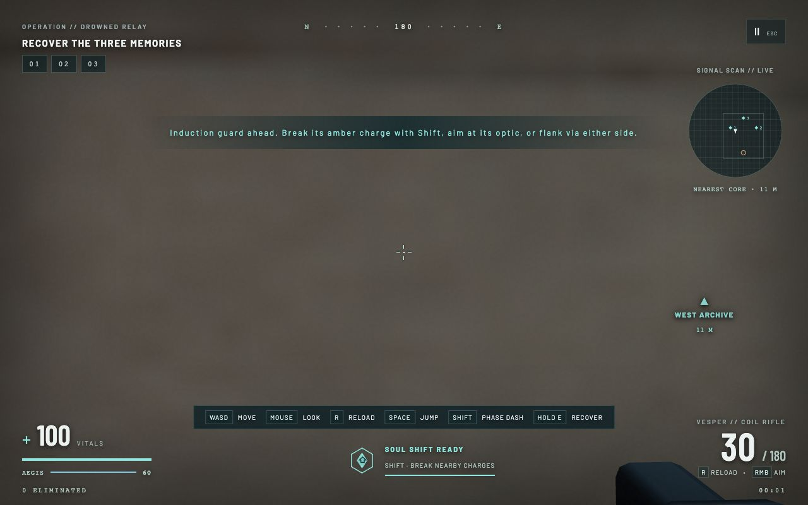
The next creative decision is to rework the southeast corner and intake approach as supported, readable open architecture. Useful shelter and interior cover should remain, but departure should require fewer blind corrections. Wider sightlines may also expose the receiver to more fire; that is a real tradeoff to inspect and review. Current difficulty, roles, damage, reach and extraction rules have not changed. The stable Build23 Tailnet server remains untouched. Both independent Build32 scores and failures remain unchanged.
Build30 reviewer1 recovered all three memories, stopped near extraction at displayed3.7m and2.9m, and died without starting the uplink. Its capture still said REACH THE GREEN BEACON. The actual2.7m ring boundary was working; that message did not explain the remaining small step. The parent changed the existing status line within8m to ENTER FLOOR RING and distance to its edge. The distant beacon and duration instruction remains. A player horizontally inside but too high now gets LAND INSIDE THE FLOOR RING, with the existing decay warning when relevant. In-zone progress, near-edge warning, outside decay, ring size and every combat value remain unchanged.
Controlled browser evidence covers the centre, inner edge, outer edge, airborne position,3.7m approach,2.9m approach and distant12m view at two desktop sizes. The parent inspected the actual near-approach rendering. At2.9m, status correctly reads0.2m to edge while progress stays zero; ordinary S input from an arranged north approach moves inside to2.35m and advances progress. Existing D movement inside the ring and restart checks passed with no page errors. All fourteen production checks also passed. These are arranged, threat-free correctness fixtures; they do not establish natural discovery, enjoyment or an independent win.
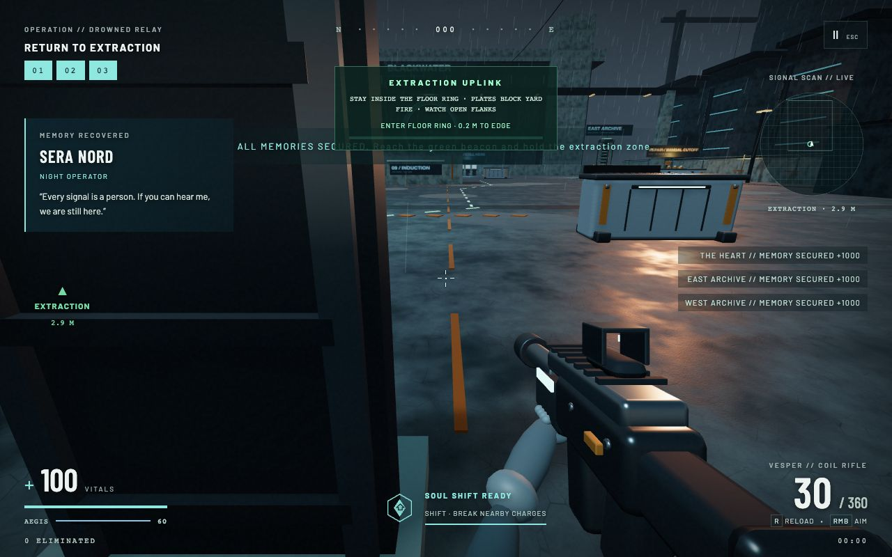
Both Build30 raw independent reports and provisional ratings remain unchanged. Reviewer2's85% extraction followed by death remains a failed attempt. This small post-review correction does not imply a rescore. The next substantive creative pass will distinguish defenders that protect a site from hunters that pursue across the yard, with explicit pacing tradeoffs and two fresh ordinary reviews. That work must preserve committed attacks and test pursuit/return transitions rather than erase danger when a boundary is crossed. Current broad threat accumulation is an observed pacing concern, not proof of unavoidable damage. The immutable Build23 Tailnet game stays untouched. The overall mission remains unfinished.
Build30 replaces type-specific symbols and concentric threat radii with one directional language. All offscreen eligible enemies in a 30-degree bearing sector share a chevron and exact source count; charging sources are counted explicitly and take priority over recent fire/hit history. Individual types and history subcounts are deliberately omitted from grouped display, while every source remains in the group membership. This is a bounded representation, not a claim to show every enemy. Original optic LOS, range, charge/recent eligibility, finite encounters, damage and mission rules are unchanged. Rear-angle wrap remains unified; exact boundary quantization is deterministic.
Visible optics retain small open brackets 24 pixels to the right of the actual projected optic; orange means charging, muted means recent fire or hit. The cue never slides to another object to make room for text. One lower readout shows the eligible target nearest aim, identity and status instead of repeated percentages. A 0.075 normalized-screen margin reduces retarget chatter; it cannot keep an ineligible target. Bearing groups share one ellipse across types. Objective label layout reserves directional boxes. Combat compacts the memory card, retaining the recovered name; full stories remain in the pause/archive. Timed kill-feed and initial control-strip display yield during combat; mission announcements remain. The obsolete timed Warden charge tutorial was removed because it could contradict the live charge state after firing or interruption. No safe indicator was added.
Implementation inspected Build28 reviewer evidence and Build29 parent combat captures, including correction bursts and return exposure. The parent’s successful source-informed run is not an independent human assessment; the misleadingly named protected-stance capture shows an exposed position in front of the plate, and the later central gap remains open to fire. The historical no-look review is retained with that coverage limit. All original art and collision envelopes remain unchanged.
Sequential core ledger records all 28 script outcomes, including the exact-information controller’s asserted win, three memories, extraction progress 1 and no page errors. Its internal position/goal reads make it correctness evidence only. 64 actual moving renderer compositions cover two areas, two desktop sizes, changing yaw, live strafe/AI, ADS transitions, exact optic anchor and source conservation, focus eligibility and pause/restart cleanup. These are privileged arranged fixtures, not independent play or frame-rate benchmarks. Unit tests also cover mixed-type grouping, all angular turns including equivalent wrap angles, focus retention and decisive retargeting. An initial in-flight edit invalidated an exploratory fixture via Vite reload; its failure was diagnosed and the fixed-source fixture rerun. Additional geometry, guidance, composition and production checks retain the authored fallback and route coverage.
The user-facing Tailnet URL continues to serve the immutable Build23 snapshot through its existing private Python backend. Build30 is local development/source work; no backend switch, public Vite bind, Tailscale change or Pages deployment is part of this pass. No audio enjoyment, hardware performance, perfect score or AAA certification is inferred. Mission remains open.
Exactly two fresh GPT-6.1 Sol reviewers used the existing visible driver sequentially on the normal URL. Both read the visible briefing and handbook and used look, ADS, firing and movement. No source, prior scores, coordinates, routes or hidden state were supplied. Source hashes stayed unchanged across both reviews. Each explicitly closed its owned browser, exited zero and verified exact driver/Chrome PIDs absent before subsequent browser work. Reviewer 1 used one attempt; reviewer 2 used two. All failures remain in raw logs.
Both found atmosphere and progression strong. Both still reported crowded threat cues during turns and a dense handbook. Receiver/pylon distinction, cover navigation, exposed return and extraction positioning remain open work for the parent mission. These three attempts are not a controlled before/after comparison; no improvement in scores, ordinary completion rate or human enjoyment is claimed. Screenshot-driven paused input and retargeting remain substantial method limits.
After both reviews, the handbook visor paragraph was shortened, bearing chevrons were kept above their source counts instead of orbiting through text, and combat announcements stopped interpolating from the former centered transform across the viewport edge. These small fixes are not independently rescored. Post-review visor checks and final affected checks document verification. The expanded motion test is now included in the standard visor script. Combat and objective rules remain unchanged. Broader cue density and mission usability require further design and continuous human testing; the quality mission is unfinished.
The parent played unchanged Build28 with deliberate aiming and defender combat, after two independent Build28 reviews ended in four deaths. Actual parent outcome and limits / complete ordinary input log: one successful attempt, all three memories,00:44, six eliminations, five critical eliminations,20%accuracy and score6,931. Opening Warden, a nearby Sentinel, bay Sentinel and relay Warden were followed by two moving Interceptors. The latter targets and bay/relay precision shots required visible-image corrections. Mouse look, ADS, fire, reload and ordinary movement were used. No internal live state, arrangement, teleport or resource edits were used; prior source/layout knowledge and screenshot pauses remain substantial advantages. This is not a new independent rating.
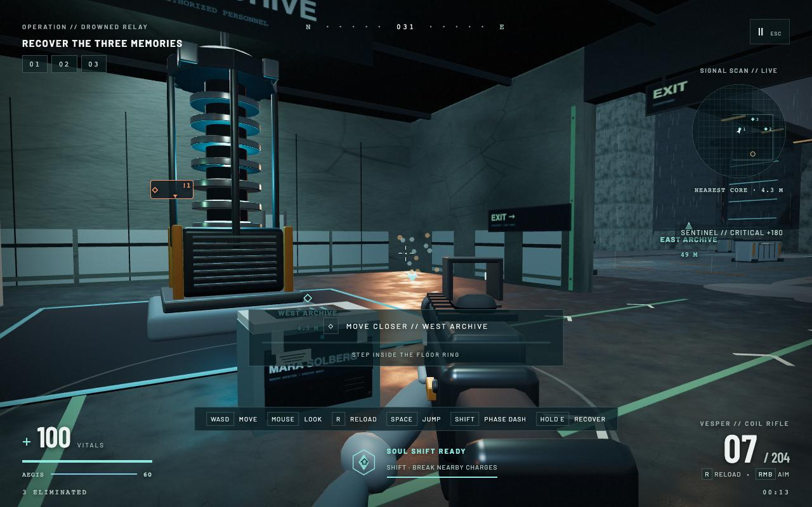
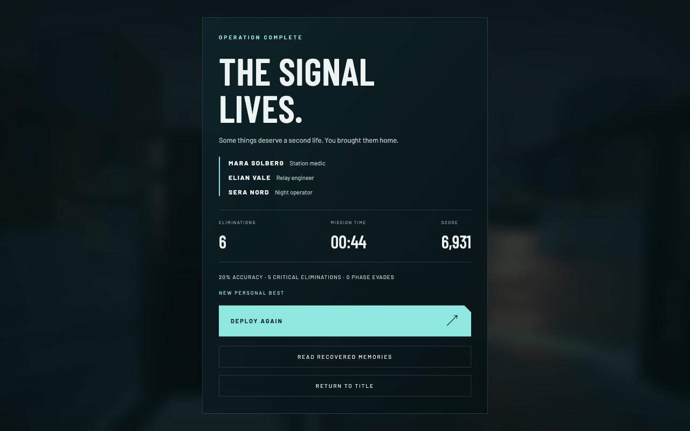
Extraction still required correction: the capture named protected-stance actually shows an exposed position in front of the plates, after backward travel was blocked. A later central-gap correction brought the plates into view but left a central firing line open. Last live capture showed health100/shield3 at86% uplink before the victory dialog; no final health is inferred. The authored patches and plates do not yet establish fluent protected-position discovery. Most incoming fire and much of the HUD clutter remained concentrated on return. All attempted actions and unsuccessful shots are retained.
Separate code inspection found that bearing quantization treated angles just below +180° and just above −180° as different sectors. They are almost the same rear direction. The parent normalizes the twelve sector indices around that seam, merging same-type rear attackers while retaining each source, total count, charge/fire state and circular mean bearing. Adjacent sectors and different types remain separate. This is one precise duplication fix, not a claim that overall combat clutter is solved. Visor checks include same-sector seam merging, adjacent-sector separation, counts, focus and optic anchors. Sixteen arranged moving browser compositions preserve source representation and actual optic anchoring across two sizes, two locations and hip/ADS. Six marker-layout captures and all fourteen production checks also passed. These fixtures are not ordinary play. Both owned parent browser PIDs closed and were absent before test browsers launched.
Geometry, damage, charge timing, recovery and extraction rules remain unchanged. The next substantive work is combat cue hierarchy, with fresh ordinary reviews that may use all documented look/aim/movement controls. Build28's reviewer who used no look input still keeps its original report and provisional score; that coverage limit is recorded rather than erased. Audio, human enjoyment and broader hardware performance remain unvalidated. Stable Tailnet play remains immutable Build23. The overall quality mission remains unfinished.
Build28 authors replacement ceramic courses, captured bolts, exposed backing channels, anchor shoes and restrained impact abrasion for the split extraction baffles. The front absorbs damage visually; rear supports explain assembly. Cream marks identify inward edges without added lamps. Two flush, non-emissive floor inlays with paired boot marks sit behind the plates, entirely inside the extraction ring. They suggest a stance facing the yard; open flanks remain dangerous. The central walking gap and every original plate/footing collision envelope remain intact.
The waist-high human memory receiver now has a pale docking deck, broad cassette socket, recessed hand surface, grasp rails, paper index, cooling slots and worn folded side protection. Its small, human-use profile distinguishes it from the tall signal pylon five metres behind. Front and rear share the hand-surface vocabulary because recovery has no line-of-sight requirement. The cassette remains docked after recovery; the existing per-instance progress display provides dormant, recovering and restored feedback. Reach, combat, extraction duration, medical doors and HUD instruction count are unchanged. Fallback receivers preserve the deck and grasp profile; fallback uplink retains plain solid plates and the shared stance paint.
Original reproducible sources: tools/build_uplink.py, tools/build_receiver.py; native Blender files and exported GLBs remain in public/assets. Blender 5.2.1 LTS built both. Measured native geometry, hashes and envelope audit uses evaluated modifier triangle counts, distinct from raw polygon counts in generator provenance. Arranged WebGL evidence covers low/balanced/high, hip/ADS, approach/inside/behind cover and all three receiver fronts/rears. These are arranged states, not independent play. The first captures exposed buried rear stiffeners; reducing backing depth exposed them while retaining a continuous solid. A bounds audit also tightened abrasion trim to the original envelope.
Build23 stays on its immutable protected tailnet snapshot; localhost development and public Pages may carry Build28. No protected server or Tailscale settings changed. This remains one arena prototype; the quality mission is open. No performance, audio enjoyment or AAA certification is inferred from automated checks.
28 core script groups passed, followed by six final geometry/guidance/production/movement/extraction checks. The exact-information controls controller asserted an actual win, three memories, extraction progress 1 and no page errors (full controller log). It reads internal positions and goals and is not ordinary play. Independent reviews use a frozen source and sequential, explicitly closed visible-driver browsers.
Exactly two fresh GPT-6.1 Sol reviewers played the frozen build in sequential visible-driver sessions, normal URL and visible briefing/handbook only. No source, coordinates, routes, prior scores or hidden state were supplied. All inputs and deaths are retained. Both explicitly closed their owned Chrome browsers, exited zero and verified exact driver/browser PIDs absent before the next browser work. No gameplay or asset edits occurred across the reviews, and there was no third reviewer or rescore.
Both noted cohesive atmosphere and useful briefing/human memory feedback. Both found combat cues crowded and recovery/return exposure demanding under paused synthetic controls. The first recovered every memory twice; this supports reachable receivers, not improved discovery versus prior builds. The second found the floor ring useful for correcting range, but did not observe the full mission. These runs do not establish reliable extraction-cover discovery, fairness across routes or human enjoyment. The source-informed arranged renders and exact-information controller win cannot fill those independent coverage gaps.
No small verified gameplay defect emerged to justify changing combat or interaction rules after these reports. The authored art remains a provisional pass. Broader HUD reduction, readable attacker prioritization, navigation friction and continuous human testing remain open. After both reports, only documentation and fixture/provenance output configuration were adjusted to prevent future runs from overwriting historical Build28 captures. For new evidence set AFFORDANCE_PREFIX/AFFORDANCE_OUTPUT, UPLINK_PROVENANCE, RECEIVER_PROVENANCE, ASSET_AUDIT_OUTPUT, GUIDANCE_PREFIX and OBJECTIVE_NOTICE_CAPTURE/OBJECTIVE_NOTICE_OUTPUT.
The parent played unchanged Build26 through normal controls before editing. Method and outcomes and all inputs, captures and failures are retained. Attempt1 died at00:28 after east and Heart recovery, no eliminations; repeated barricade corrections and delayed Heart departure exposed the player. Attempt2 killed the opening guard, recovered west/Heart/east and extracted at00:48: one critical elimination,18%accuracy, score6,325. Entering the ring through the gap and then moving behind the left blast plate let the stationary hold complete. Health100/shield7 were unchanged between the32% and67% uplink observations. This confirms a cover tactic in one source-informed run, not guaranteed safety. The plain slab faces did little to explain protected positions on approach.
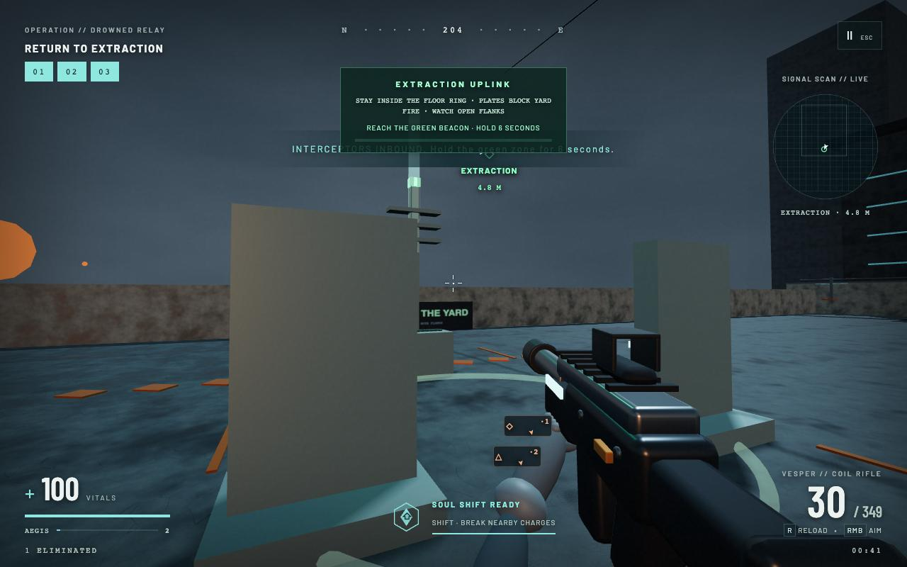
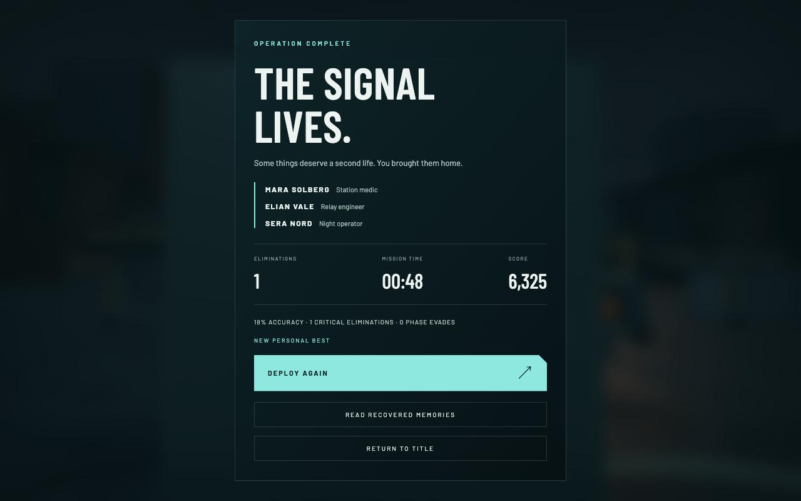
During the east approach, a west-archive SIGNAL BEHIND COVER notice persisted although the much nearer east receiver was clear. This unnecessary instruction competed with movement and threat cues. The parent now shows a blocked-objective notice only when the nearest remaining objective is occluded; other occluded markers still suppress misleading bearings. Actual browser regression reproduces a clear east receiver17.1m away with west blocked49m away, verifies the absent unrelated notice, restores guidance at the nearer west wall, then clears it on returning east and pausing. The first fixture placed the player closer to the east receiver where west was also visible through the service opening; its occlusion assumption failed. The corrected fixture reproduces the actual barricade approach rather than changing collision or weakening the expected notice. The parent inspected the final rendered view. Thirty-two additional arranged low/balanced hip/ADS compositions retained occluded-bearing removal, reachable doorway segments, stationary cues and plate positions. Production smoke passed all fourteen checks.
No damage, spawns, geometry, ring rules or objective reach changed. There is no new independent score. Prior layout/source knowledge, screenshots, paused reasoning and discrete synthetic controls materially limit this playtest; audio and hardware performance were not assessed. Both owned browser/driver processes closed and their exact PIDs were absent before regression browsers launched. The next substantial pass will make manufactured extraction cover and receiver identity legible in the environment, then repeat two fresh independent reviews. The immutable Build23 Tailnet game remains untouched; local development continues. The quality mission remains unfinished.
Build24's four ordinary attempts ended in death; both second attempts recovered three memories before dying at extraction. Raw review 1, review 2, retained action logs and west-wall / uplink screenshots informed this change. These outcomes do not establish unfair balance: attackers remained alive and pause-assisted synthetic aim was weak. The Build25 edge warning remains intact without claiming new ratings for that historical correction.
Build26 removes spatial diamonds and arrows for objectives whose receiver-height sightline crosses static collision. One fixed, non-directional notice identifies the nearest blocked signal; the radar remains a signal scan, not a path. For the west archive only, an exterior doorway approach can replace a blocked bearing when its full straight segment is clear for a 0.55 m footprint and its eye-height sightline is unobstructed. Both original doors and solid walls remain. The cue is recomputed from the current pose, discarded immediately when invalid or after recovery, and never uses cached enemy paths. Some positions have no actionable cue: this deliberately makes no promise through cabinetry or props. This is local doorway assistance, not generic navigation solved or evidence of human route discovery.
The live extraction panel now explains that the floor ring is the holding area, plates block yard fire, and open flanks remain dangerous. It does not direct recentering toward the mast beyond the ring. No geometry, assets, enemy behavior, ring radius, duration, airborne rule, outside decay or finite reinforcement rules changed. No Blender asset generation was needed. Build26 is the local development build; the protected stable Tailnet URL continues serving the immutable Build23 snapshot and its existing Python server.
Targeted renderer / traversal evidence includes balanced and low quality, hip and ADS, solid-wall, visible approach, receiver and live-enemy uplink compositions. Actual grounded movement verifies every offered doorway segment in those arranged poses. Initial test failures exposed a frozen-animation polling mistake and incorrect fixture assumptions (a blocked approach had no cue; a clear receiver correctly needed none); the fixture was corrected rather than weakening collision. The first screenshots also exposed overlap with introductory controls; the fixed notice was moved above them before the final captures. These are arranged correctness checks, not ordinary play.
Verification summary, initial sequential suite log and retests: all 27 existing scripts passed after adapting two stale marker assertions and rerunning them. The initial phase-usability failure dereferenced a removed occluded marker; mission expected three permanent spatial markers. Their replacements require absent blocked bearings and restored clear bearings while preserving combat / extraction assertions. The exact-data controls controller actually won with three memories, extraction progress 1 and errors []; 13 kills / 57% accuracy are controller observations, not ordinary player performance. The 242-start / 484-departure archive fixture still uses explicit cabinet-side connectors. Targeted checks additionally verify stationary cue stability and immediate stale-door cleanup. Two fresh sequential independent reviews follow. The source hashes matched before, between and after exactly two fresh native GPT-6.1 Sol reviewers, using sequential visible-driver sessions. Both explicit closes reported browserClosed=true, process exit 0, and absent owned Chrome PIDs (98821 then 2390). No game changes followed either review; no third reviewer or rescore occurred.
Reviewer 1 raw report / all actions: one attempt, successful extraction with three memories at 00:56, two eliminations, score 5,614, displayed 4% accuracy. Provisional ratings /10: gameplay 7; presentation 7.5; usability 7.5; readability 6.5; AAA readiness 4. Receiver approach corrections and competing overlays remained. This single success cannot establish a causal benefit from the guidance change.
Reviewer 2 raw report / all actions and deaths: attempt 1 died at 00:42 with two memories, three eliminations and score 2,540; attempt 2 recovered all three, then died at extraction at 00:51 with one elimination and score 3,180. Last live JPEG showed 37% uplink and near-edge warning. Provisional ratings /10: gameplay 6; presentation 7.5; usability 6.5; readability 6; AAA readiness 4. West entry remained difficult from one approach, pylon/receiver placement required correction, and safe baffle use was not established. No arranged inspection was used to influence these ratings.
After both reports, 32 additional 1440px arranged compositions checked normal/low hip/ADS, a view facing the actual doorway approach, and both plate positions with enemies retained. Both cover poses were inside the existing ring and blocked the central guard sightline; the west pose retained an exposed sentinel flank. These static-pose rays do not measure moving-encounter survival. Together with the original 20 captures at 1280px, these validate composition and local physical reachability, not ordinary discovery or assured protection. No post-review gameplay fix was justified as small: route discovery, receiver distinction, overlay competition and baffle learning remain substantive follow-up work for the parent. Difficulty was not adjusted to manufacture wins. Continuous human play, audio, wider content and hardware performance validation remain open. The overall quality mission remains open.
No audio enjoyment, hardware performance, perfect score or AAA certification is inferred.
Build24 reviewer1 reached 52% uplink after stepping out while dodging and returning. Its actual capture at 2.3m still said only MOVE WITHIN THE RING, leaving 0.4m before progress would decay. The parent added an amber NEAR EDGE: MOVE INWARD message within the outer 0.65m of the existing 2.7m radius. It clears on returning inward or leaving the zone. The centre retains its movement instruction. Damage, enemies, cover, uplink duration, radius and decay rules are unchanged. This is a feedback correction; it does not establish fair extraction pressure or successful natural cover use.
Arranged browser verification checks centre, inside edge, just outside and airborne at two desktop sizes; real ordinary D input still advances the uplink while moving inside the zone. Restart and zero page errors passed. The parent inspected the actual rendered warning. These controlled, threat-free fixtures are correctness evidence, not a fresh independent playthrough or rescore. Build24 raw reviews and all deaths remain unchanged. Production smoke also passed all fourteen checks. The next work targets routes around walls and readable protection at extraction, followed by two fresh ordinary-input reviews. The stable Tailnet game remains immutable Build23.
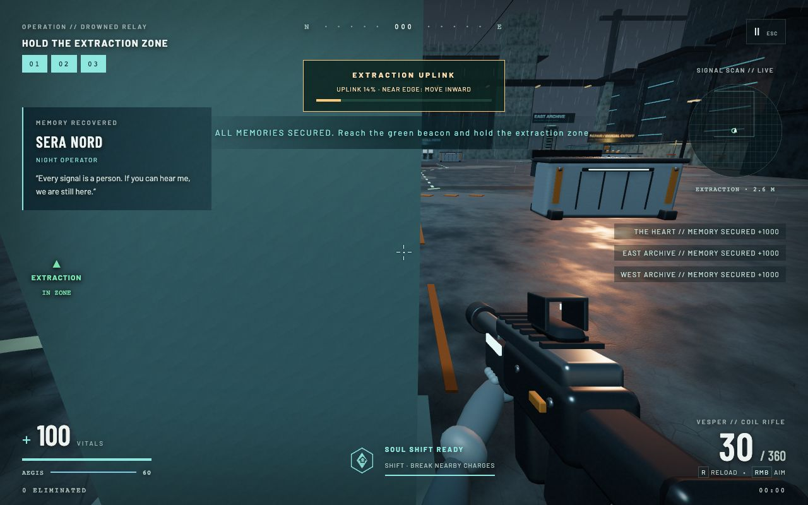
Build23’s two independent players recovered Mara, but both lost their route around the archive; one spent roughly25 mission seconds finding the service exit. Actual rendered front, rear and west receiver views showed a wide opening with an unsupported overhead sign and no floor route around the solid receiver. Build24 preserves the original receiver, furniture and both departures. Evacuation-green floor stripes run around both sides of the cabinet to the service threshold, with a south intake branch. Cyan remains the memory language. Green jamb plates, anchored sign hangers, a short EXIT panel and an eye-height return-wall sign identify the opening as manufactured station architecture. Washable liner panels, crash rails and localized sediment bands give the evacuation bay a practical flood history without adding clutter or combat blockers.
User play remains Build23: Stable Tailnet play link serves the immutable production snapshot /tmp/soulfall-play-build23-_4s5lus4 through the existing owned Python server on127.0.0.1:61467. This pass did not modify that snapshot, stop its server or change Tailscale. Local Vite development evolves as Build24 and stays bound to loopback.
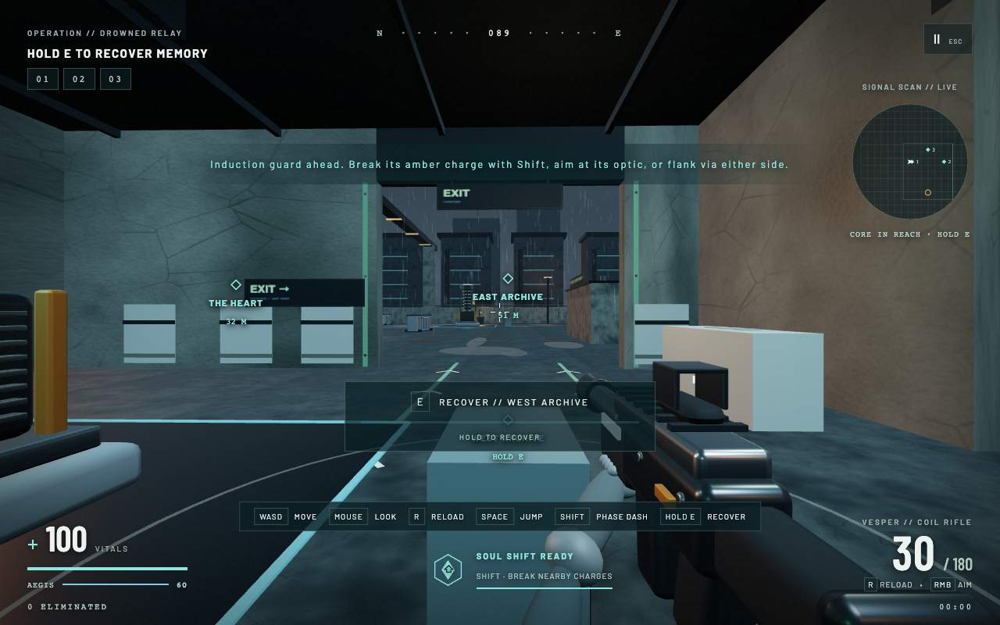
Before views and after views retain front/rear/west recovery approaches and both departures at1280×800 and1440×900, hip/ADS, low/balanced/high. These are arranged views, not route discovery. The original Blender script reads shared medical metadata for paint and sign locations; .blend and GLB are retained. Measured provenance:1296triangles,99348GLB bytes. Original solid shell/furniture envelopes remain unchanged; millimetre paint films have no collision lips. Wall liners/jamb fittings are surface details. No enemy, recovery, phase, damage, health or spawn tuning changed.
Sequential existing-suite ledger: development/production smoke, combat, phase/usability, encounters, mission/playtest, standalone/browser movement, medical/exit, Warden art/motion/steering, recovery, attackers, receiver/composition, marker/visor/motion, ending/extraction, batching/idle and visible driver all passed. Privileged controller actually ended won,3memories, extraction progress1, errors[]. This controller reads internal geometry/targets and is correctness evidence, not discovery. New route fixture samples242 valid positions on a.3m grid across the recovery disk and completes484 grounded departures via explicit side connectors and the painted aisles to both exits, without jump/dash;242eye-height rays to the service opening are clear. Existing nine departure starts and12enemy pursuits remain tested unchanged. Retained initial new-fixture failure: a generic rounded cached-navigation waypoint aimed through the cabinet from(-25.2,-15.6). The new player-route fixture now spells out cabinet-side connectors; it does not conceal that pathfinding limitation or change enemy navigation. An earlier harness timeout used rAF polling after disabling rAF; fixed to timed polling. Neither failure was a passing game result.
Matched render submissions: balanced1280 receiver views add4calls and770triangles (west133→137calls,73388→74158triangles). Isolated local archive profile on installed Chrome / Apple M1 Metal:30warmups,60 synchronous render+gl.finish samples,1.0ms median/2.1ms p95 at1280×800 balanced,137calls/74158triangles. Paused simulation, empty near-field fixture; this measures submission/render wall time in one view, not live FPS, sustained combat or broad hardware readiness. Static batching and material ownership remain intact; historical Build23 native18.5/34.8ms live-frame sample is a separate method, not a direct comparison. Source hashes froze before the two ordinary reviews; suites, Blender and benchmark browsers closed first.
Fresh reviewer1 raw report: attempt1 died at00:34, one elimination, no memory; it held E outside the recovery ring while exposed. Attempt2 recovered all3memories by00:54, then died at01:15 during extraction with uplink last observed52%, three critical eliminations and6%accuracy. It corrected around cover, the Heart pylon and west service wall; entered west through service rather than exercising a west-receiver departure. Ratings (gameplay/presentation/usability/readability/AAA readiness):6.5 /7 /7 /6.5 /4. The report does not establish a fluent archive departure or a successful ending. Driver browserClosed=true, exit0; its owned PIDs were absent before reviewer2 began.
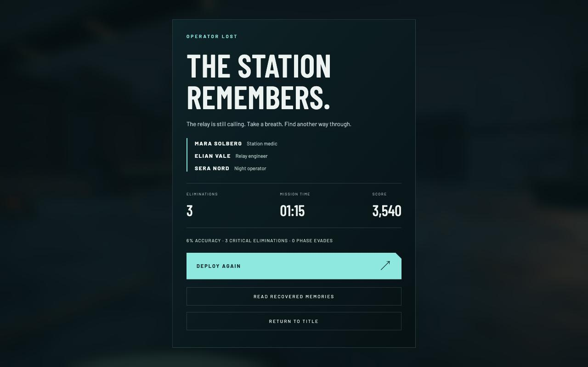
Fresh reviewer2 raw report: first attempt died at00:46 after west recovery, one elimination and one phase evade. It departed east but overshot Heart and died during a near-receiver correction. Second attempt recovered east/Heart/west by00:27 with no eliminations, chose south departure, reached64% visible uplink and died at00:47. Ratings:6.5 /7 /6.5 /6 /3. It found door signs helpful after backing out, but through-wall objective bearings still drew it into exterior walls. It did not report the earlier prolonged interior service-exit search; two routes do not prove general discovery improvement. Threat crowding, exposed receiver corrections and safe extraction movement remain unresolved. Both reviews were fresh native GPT-6.1 Sol, sequential, ordinary shared-driver play only, two attempts each. All four attempts ended in death; neither witnessed the successful ending. Reviewer2 browserClosed=true and exit0, owned PIDs absent after closure. No source changes occurred across reviews.
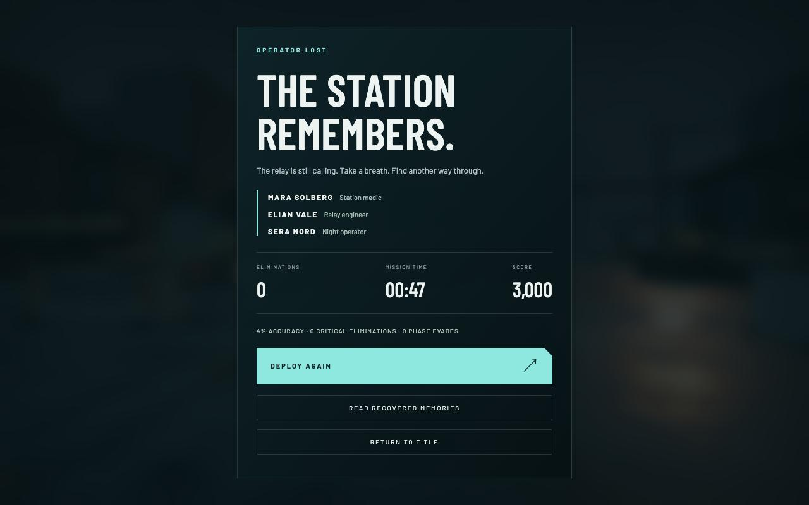
After both reviews, tooling defaults were made reusable current-* outputs to protect immutable Build24 evidence, and the same route fixture was rerun. No game/art changes or balance edits followed review; there is no third review or rescore. Historical scores stay untouched. Compact content, plain geometry, exterior route discovery, moving threat acquisition, full-mission pressure and human/audio/hardware validation remain open. Build24 Pages base after publication · Build24 dossier. Stable Tailnet remains Build23; no deployment watch is implied. Earlier Build07–23 artifacts and raw provisional ratings remain historical evidence. This remains a compact quality mission, not a perfect-score or AAA certification.
The previous charge/recent-fire text boxes could drift away from the actual target and crowd unrelated scenery. Build 23 retains the exact optic LOS gate (endpoint 0), eligibility windows and 32 m limit, but projects from the actual optic rather than an elevated 2.2 m label. Small open cues sit 24 screen pixels beside that projection. They are information cues, not precision hit areas. Sentinel◇, Interceptor△ and Warden□ distinguish type without color; !means charge, ·recent fire and +recent hit. One lower central readout identifies the eligible target nearest the view center and shows health/state. It selects text only: no autoaim, camera change or precision-radius enlargement.
Offscreen sources within the same 30 degree sector and type share an arrow at their circular mean bearing, with explicit charging/fire/hit counts. Type lanes separate those groups. This trades individual offscreen locations for bounded directional summaries; nearby sources can join/split as bearings change. Every eligible source remains counted. Actual on-screen cues remain at their true projection even in the pathological dense fixture, where small glyphs may overlap. We deliberately do not move a target cue across the scenery to satisfy rectangle separation. Objective names, ranges, receiver holds, archive, extraction, damage direction and mission rules remain. The visible handbook explains the new vocabulary in one paragraph.
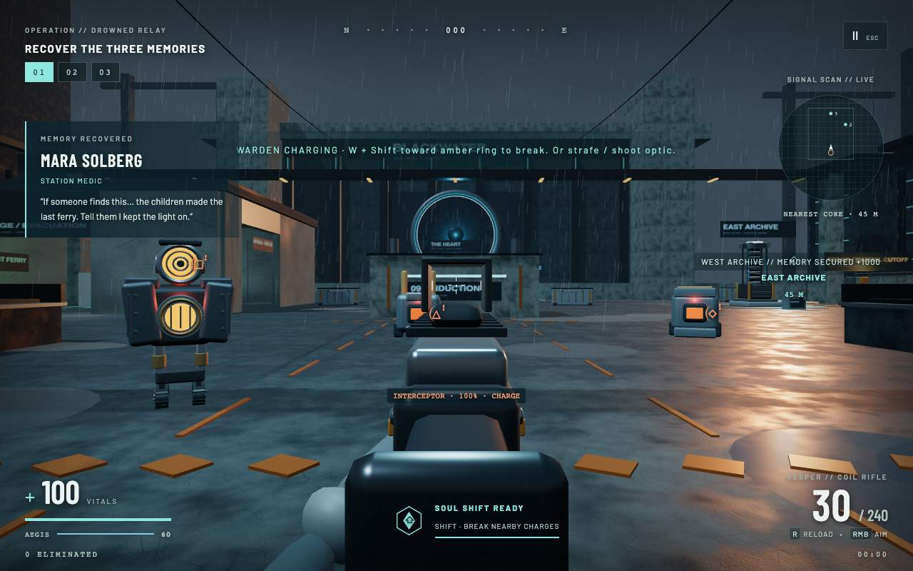
Moving evidence covers yard/bay,1280×800/1440×900, hip/ADS and reduced motion, with two live temporal captures per combination. All 3 eligible sources remain represented in each sampled update; JSON samples record three charges. The live screenshot is captured afterward, so a source may already have fired by the image frame. Representation code keeps grouping separate from game-owned eligibility. The updated 12-source regression verifies total and unique represented sources; old Build 07–22 evidence remains unchanged. Existing attacker tests retain death/cover/expiry/pause/restart checks. Moving screenshots verify projection alongside actors, not just rectangles. A short source-informed implementation ordinary-input check acquired one critical entrance elimination and advanced, then stopped at 00:03; it is not a full-mission victory or fresh review. Exact commands and closure.
The measured opportunity was static receiver and uplink housing. Those meshes now enter the existing material batches with their world transforms baked, while original hidden nodes retain authored semantics/bounds. Progress, cassette, beacon and twelve uplink cells remain separate; progress cells were not instanced because housing batching already removed 70 calls in this scene and the existing state-node semantics stay simple. Static receiver materials stay shared, mutable progress materials stay independent. Repeated unchanged receiver/uplink state no longer rewrites materials. Intermediate indexed clones are disposed after expansion. All Blender sources, GLBs, detail and collision envelopes remain unchanged.
Correspondence check matches all 2,304 retained housing vertices from 96 meshes to visible same-material batch positions, allowing adjacent 1 mm bins for float 32 rounding boundaries. Named state nodes remain visible and separate; receiver and ending suites check holds, standby, reset, collision and missing-asset fallbacks. Batching slightly increases submitted triangles because larger batches reduce frustum culling; geometry was not simplified and texture/shadow/global quality was not reduced.
| Matched warmed spawn fixture | Before | After |
|---|---|---|
| Draw submissions | 226 | 156 |
| Submitted triangles | 119,628 | 119,832 |
| Render + gl.finish median / p 95 | 1.3 /21.8 ms | 0.7 /1.0 ms |
Before · isolated after · reproducer. Both use 1280×800, balanced quality, spawn camera(0,1.7,31), yaw 0, one initial Warden, paused simulation,30 warmups and 60 synchronous timed draws in installed Chrome with identical fallback flags. Both actually reported Apple M 1 Metal, so these are not SwiftShader/software results. The baseline p 95 spike and short samples do not establish a robust speedup or FPS gain. This populated spawn is also a different view/state from Build 21's 260 call/77 ktriangle arranged scene. An early potentially overlapping after sample is retained as invalid timing evidence; only the isolated rerun is used here. The early headed counterpart is also retained and excluded.
Paused and end-state backgrounds now draw on transition and invalidation rather than continuously. Actual render instrumentation found 0 unchanged paused/lost draws,1 on resize,1 on settings change, and rendering resumed on resume/restart. The rAF loop still services UI and transitions; this is a WebGL submission reduction, not a claim of zero idle CPU.
A separate owned headed installed Chrome launch with no renderer flags reported ANGLE Metal / Apple M 1, document visible and simulation playing. 120 warmed live frame intervals measured 18.5 ms median /34.8 ms p 95 at balanced 1280×800 after 30 warmups; headed synchronous fixture is also retained. This brief spawn sample is one local configuration, not broad hardware readiness, input latency, sustained mission performance or audio certification. No capture-time inverse is used as FPS.
Sequential suite ledger: development + production-subpath smoke, combat, phase, phase-usability, encounters, mission, playtest, standalone/browser movement, medical + medical-exit, Warden art/motion/steering, recovery, attackers, receivers + receiver-composition, marker-composition, ending, extraction and visible-driver passed. One marker screenshot timed out; the isolated rerun passed. New visor/moving-render, batching and idle-render checks passed. The batching check initially hit quantization-boundary mismatches; adjacent-bin matching resolved float 32 rounding without changing game geometry. A legacy ending writer briefly rewrote Build 21 evidence: originals were restored byte-for-byte, new copies saved as Build 23, and its defaults changed to current-*.
Exact-information controller actually finished won,3 memories, extraction progress 1, errors[]. Its path/aim decisions read internal positions, colliders and state. It remains distinct from the parent 22 source-informed ordinary-input victory, internal fixtures/benchmarks and both fresh reviews below. All suite, benchmark and implementation browsers closed before independent review; no source changes or testing occur during either review. Frozen source hashes.
Reviewer 1 raw report: first attempt died 00:28 with Mara,3 eliminations,13%accuracy and score 1540. Second attempt independently extracted all 3 memories at 00:51 with 4 critical eliminations,16%accuracy, score 6803 and 0 registered phase evades; it then inspected the restored records. Ratings (gameplay / presentation / usability / readability / AAA readiness):6.5 /7 /7 /6.5 /3.5, all provisional whole-game impressions. It praised coherent presentation, obvious opening optic, recovery feedback and complete ending, but still found tiny edge boxes distracting, partly screened moving enemies hard to acquire, return routes recoverable after collision, and sustained combat depth limited. The first death remains evidence.
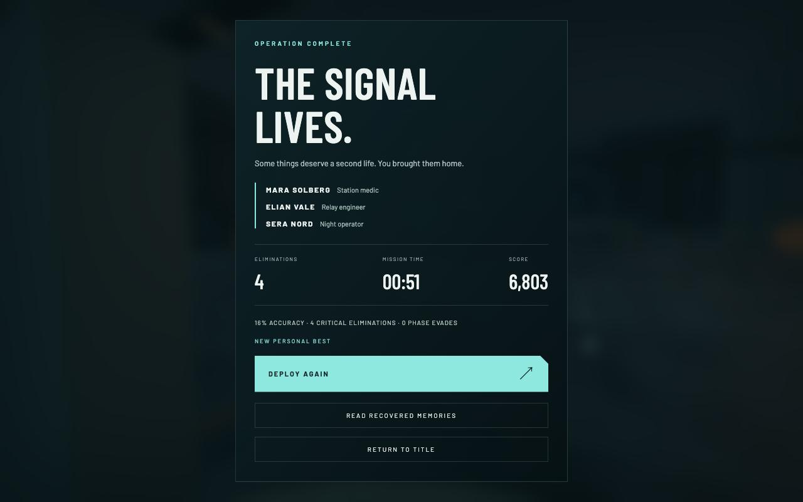
Reviewer2 raw report: first attempt died at 00:20 with Mara, one elimination, 8% accuracy and one phase evade. Second attempt independently extracted all three memories at 01:19 with five eliminations, four criticals, 17% accuracy, one phase evade and score 6691. Ratings (gameplay / presentation / usability / readability / AAA readiness): 6.5 / 7 / 6.5 / 6 / 4, all provisional whole-game impressions. It confirmed complete mission flow, readable recovery/story and ending, but spent roughly 25 mission seconds finding the archive service exit and still struggled to prioritize small offscreen cue boxes and locate severe flank damage. It did not establish broken collision. Extraction was understandable but lacked a distinct final encounter identity.
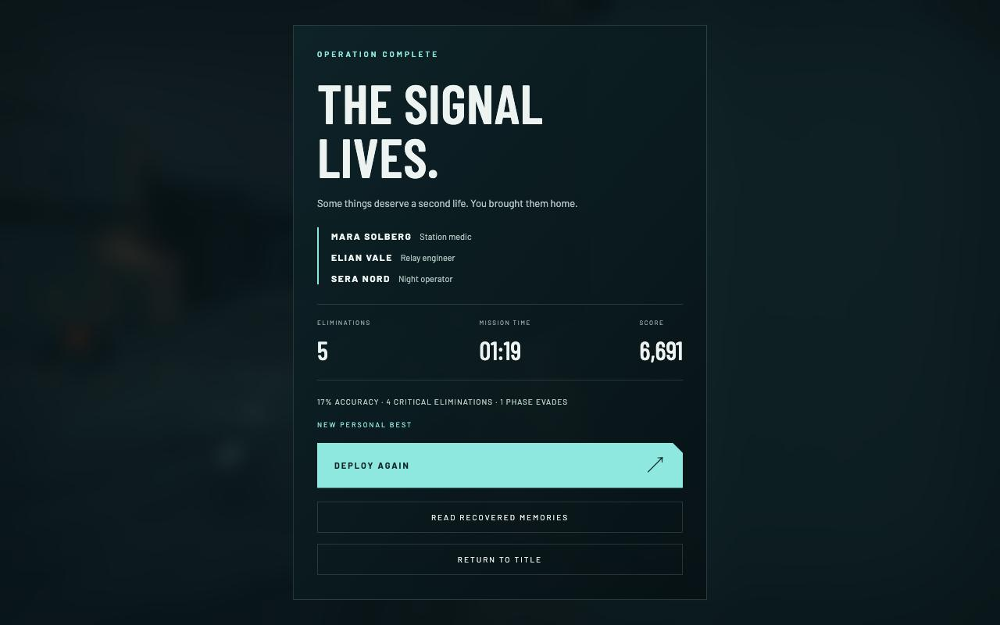
Exactly two fresh native GPT-6.1 Sol reviewers ran sequentially, with up to two attempts each. Both read visible briefing/handbook, used the shared normal-URL driver and ordinary input, and paused after live screenshots for decisions. Neither received source, hidden state, prior outcomes, coordinates or tactics. Reviewer1 closed its browser (PIDs 56885/56886) before reviewer2 launched; reviewer2 closed PIDs 59540/59541. Both reported browserClosed=true, exit0 and absent owned PIDs. Their raw scores/outcomes remain unchanged. No post-review game fixes or inferred rescoring were made. Both reviews lack audio, continuous mouse-feel, representative hardware and human enjoyment certification. Next priorities remain immediate-threat hierarchy, archive exit legibility, moving-target acquisition and deeper actor/encounter presentation; no tuning was made to force wins.
The overall quality mission remains open. Compact glyphs require learning, small moving geometric enemies remain challenging, offscreen aggregation sacrifices individual bearings within a sector, and these synthetic pause-assisted runs cannot establish human enjoyment, audio quality or AAA readiness. Pages build · Build 23 dossier (links, not deployment verification).
Build21 contains an independent low-kill extraction success and a reviewer whose abandoned menu browser temporarily overlapped its active run. That overlap is a test-method confound, not a reason to erase the failed attempts. This parent followup changes review tooling; gameplay and the menu build label remain Build21. Both independent ratings below remain unchanged.
The new npm run playtest:visible -- --out docs/media/unique-review-name accepts JSON commands for visible clicks, ordinary game keys/buttons, relative mouse look and live captures. It rejects a test URL and arbitrary evaluation. Snapshots read visible UI text, including ancestor opacity checks, without a game/debug handle. Each action releases its held inputs, captures a live JPEG and normally presses Escape; resume:true clicks the visible Resume button. The log retains requested steps, client-observed timings, capture durations, visible state and browser exceptions. These timings do not establish native input latency or exact simulation distances.
A project ownership lock rejects a second shared driver before it can launch Chrome. The helper owns the launched browser process and closes it on explicit close, stdin EOF, startup failure, SIGINT or SIGTERM, then releases ownership. It does not serialize unrelated browser scripts or replace the rule to run suites and reviews sequentially. No global browser/process cleanup is performed. Real-browser lifecycle checks passed: duplicate rejection with the first browser alive, normal deploy/fire/pause, invalid-input cleanup, explicit close, non-TTY EOF, failed navigation and interruption. The helper is tools/visible-playtest.mjs; --help documents the protocol.
{"op":"click","selector":"#deploy","capture":"deploy","pauseAfter":true}
{"op":"act","resume":true,"steps":[{"type":"down","key":"KeyW"},{"type":"wait","ms":500}],"capture":"advance"}
{"op":"close"}The parent then used the shared driver on the normal URL and completed the mission: Mara, Elian and Sera recovered; three critical eliminations;30%accuracy; one registered phase evade; successful extraction at00:53 and score6749. Parent report · exact command/result log. This run used prior source/layout knowledge, learned aiming, estimated movement durations and pauses between screenshot decisions. It did not use hidden runtime enemy/player positions, internal aiming, test hooks, arrangements, resource edits, enemy deletion or simulation stepping. It is assisted parent evidence, not another independent reviewer or human realtime play.
The first East hold stopped at3.0m and failed; the MOVE CLOSER cue led to a short correction and successful recovery. The visible Heart Warden charge was interrupted with ordinary W+Shift, confirmed by the cyan armor and PHASE BREAK text. The first followup burst did not eliminate it; a screenshot-guided correction and second burst gave a critical kill. The parent returned by the side aisle, reloaded, faced the yard and used lateral movements around the uplink cover. These misses/corrections remain in the log rather than being replaced by a perfect scripted run.
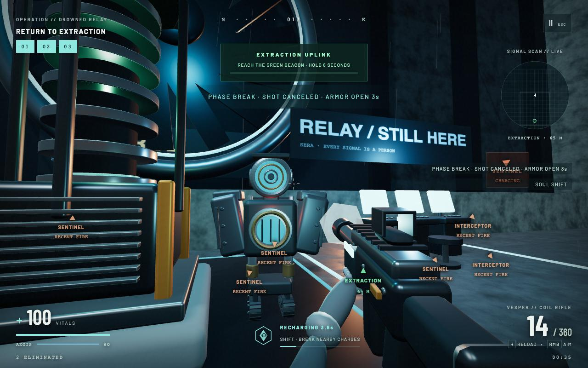
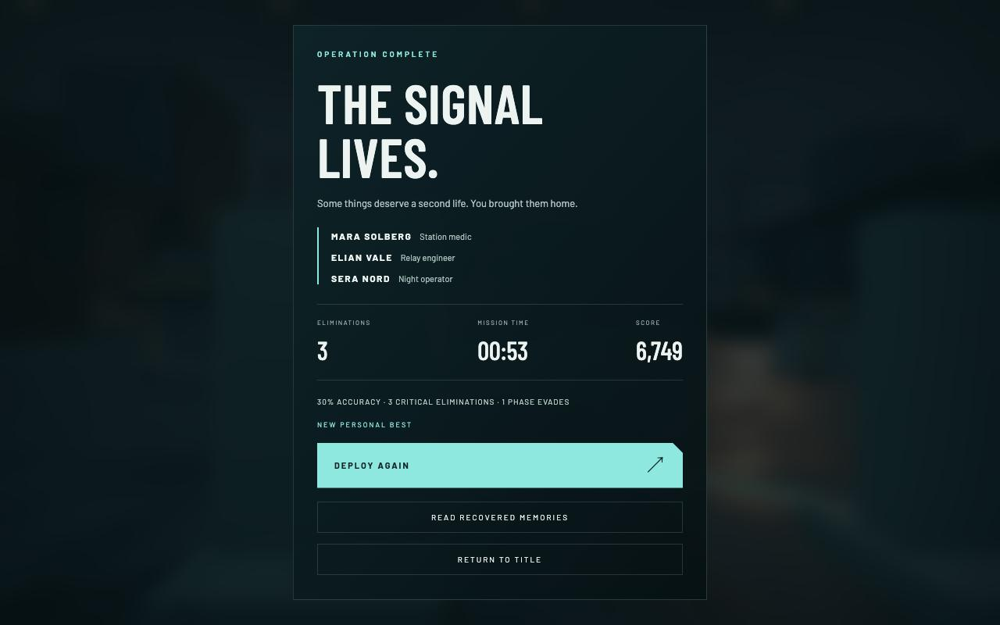
Fifteen live JPEG captures took88.8–273.7ms, median210.1ms. There were no page exceptions. Capture time is not frame rate; sampled DOM values and screenshot frames can straddle an update. The driver reported browserClosed=true and exit0; the parent verified that its owned driver/Chrome PIDs had exited. Lifecycle tests were rerun after the final visibility filtering change, with no other browser work in parallel.
Remaining: the parent views confirm that multiple charge/recent-fire words compete with the actual enemy bodies. Target acquisition, small geometric silhouettes and scene rendering cost warrant the next game pass. The next two independent reviewers will use this shared driver sequentially; game changes must be assessed without forcing scores. This tooling followup gives no new quality rating, audio assessment, representative hardware benchmark or human enjoyment certification. The overall quality mission remains open.
The return now leads toward two optional illuminated aisles around the induction splitter and through the entry gate. These are fixed station markings, powered only after the third memory, not an enemy-aware route. Players can take either aisle or choose their own path. The existing medical service opening and receiver departures remain.
Two original Blender-authored full-height blast plates frame the north edge of the unchanged2.7m uplink circle. A2.8m central gap preserves initial deployment and the ground approach. Rear positions behind either plate interrupt northern fire; the center and side/rear angles remain exposed. The fixed rear transmitter has a twelve-cell display driven by actual uplink progress and a compact mast. The former16m additive cone is restrained to a narrow3m indication behind the operator. No camera steering, mandatory action, damage/health changes, guard removal, hold-duration change, or decay/height-gate change is introduced.
Original Blender authoring · retained Blender source · asset provenance/budget. Shared layout data authors the plate/cabinet/mast collision and optional aisle positions; standby and active states retain identical solids. The load-failure fallback retains those envelopes and progress cells. Mesh/material ownership stays within the world lifecycle. New-cover enemy clearance conservatively includes the broad upper Warden assembly, with cached bounded navigation unchanged elsewhere.
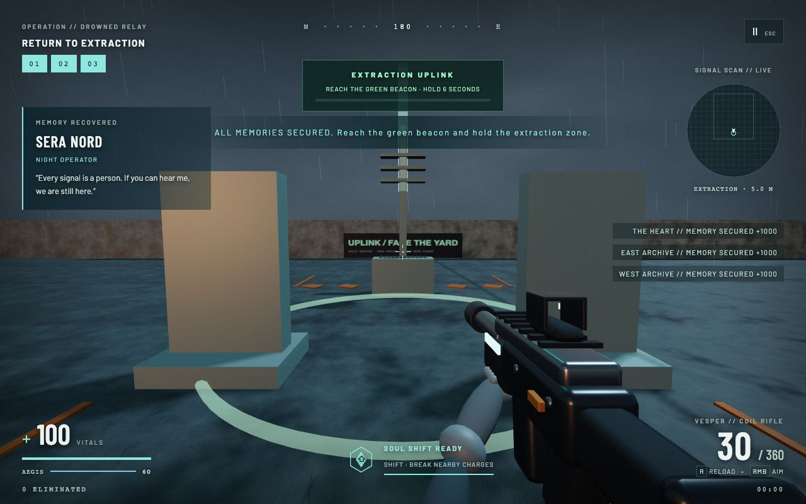
Sequential suite ledger: development and production-subpath smoke, combat, phase, phase-usability, encounters, mission, playtest, standalone/browser movement, twelve medical pursuits, medical-exit, Warden art/motion/steering, recovery, attackers, receiver, receiver-composition, marker-composition and extraction checks passed before reviews. Every suite/controller/Blender process closed before reviewer1 started; reviewer2 started only after reviewer1 completed and closed. Neither score was requested or increased. Reviewer1's own restarted driver accidentally left an idle browser open during part of its review; this overlap is retained as a rendering/latency confound, not described as clean isolated rendering.
Focused final-stage fixtures check clear spawn/central approach, sampled route footprints against actual colliders, nine bounded cached paths and six live AI pursuit samples across Sentinel, Interceptor and Warden. No sampled live position penetrated the conservative new-cover clearance. Actual authored Warden vertices are measured across closed/open/charging poses and headings rather than relying on the small tracks; the sampled open/charging envelope reaches0.879m and the new-cover clearance is1.02m. Existing optics, precision radius, damage, enemy health, stages and charge/fire/steering rules remain intact. This is a finite regression sample, not proof for every possible crowd arrangement.
Three in-zone standing locations against six northern/side/rear sources produced7blocked and11clear standing-eye rays, including exposed angles. Actual swept projectiles were blocked by a plate from the north and damaged the player from the flank. Progress, ordinary movement, pause, restart, completion, outside decay, power state and load-failure fallback are checked. The parent Build20 baseline below sampled25clear northern rays at the bare hold site; these different static arrangements are cover diagnostics, not comparative damage trials.
Advantaged arranged tactic: a six-second Standard hold with two live enemies, full player100health/60shield, small lateral peeks behind the west plate and no firing ended won,3memories, progress1,100health/28shield,0kills. Starting positions, reduced roster, omitted pressure waves and explicit simulation steps make this a local tactic validation, not ordinary full-mission extraction. Privileged normal-input controller separately recorded actual won/3memories/progress1/13kills/errors[]. It reads exact positions, targets, LOS, colliders and resources to choose normal inputs. Its earlier launch was invalidated by a development reload while the briefing was being edited; raw orchestration failure is retained. The completed rerun is correctness evidence, not independent play.
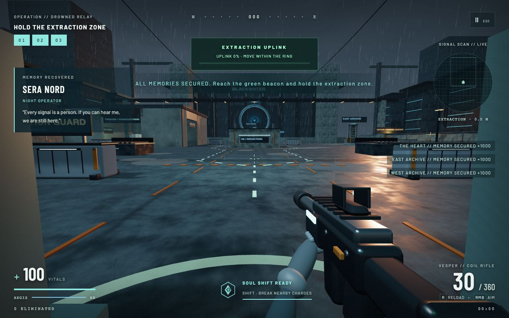
| Reviewer | Gameplay | Presentation | Usability | Readability | AAA |
|---|---|---|---|---|---|
| 1 | 6 | 8 | 7 | 7 | 5 |
| 2 | 6.5 | 7 | 7 | 6.5 | 4 |
Both are provisional whole-game impressions, not certification. Reviewer1 died at00:25 with1memory/1kill, then at00:36 with0memories/3critical kills. The finale was unobserved. It reported strong industrial mood and clear memory feedback, but difficult small-target tracking and receiver approach under fire; no finale defect can be inferred from those attempts. Live JPEG capture timings were115–270ms (mean202ms); synthetic aiming, paused reasoning, screenshot learning and its temporary stale-browser overlap limit conclusions.
Reviewer2 died at00:31 with0memories/1kill, then independently extracted all3memories at00:54 with2eliminations, score5560 and11%accuracy. It recovered West, East and Heart, used the visible return aisle, turned toward the yard and saw uplink0→33→74→success while strafing. Last pre-success health was23. This establishes that a low-kill ordinary-input extraction was possible in this attempt; it does not establish that collection guarantees survival or that every player will find the tactic. It praised the route/progress handoff but reported small geometric enemies, threat-label crowding and exposed-center damage.
Both read the visible briefing/handbook first and used the normal URL, visible screenshots/UI and ordinary controls with synthetic relative mouse look. Live browser-native JPEG capture preceded ordinary Escape pause; reasoning while paused and screenshot learning between attempts were allowed/disclosed. Reviewer2 kept one browser; its capture-plus-pause maximum was654ms and one requested1400ms recovery action took4576ms. Requested/actual timings remain raw. No test handles, hidden decisions, teleport/resource edits or external simulation freezing were used for ordinary play. No audio, human enjoyment, native mouse-feel or representative hardware performance claim is made.
Only after recording ordinary outcomes/ratings did reviewer2 inspect source and perform the separate arranged audit. It observed frontal protection and an exposed flank, readable33%live progress, explicit outside decay, and the lit return aisles. It found that overhead radiator wings and the beacon were visible but lacked matching physical collision. After both reviewers fully closed, the parent moved these exact envelopes into shared layout authoring, removed duplicate asset construction, and inset minor shoe/console trim. They remain fixed in every power state; the existing above-head navigation filter keeps them from becoming ground obstacles. No ordinary result or rating was changed, and there was no third review.
The parent reran focused overhead rays, ending/route/pursuit/state/fallback checks, combat, mission and production-subpath smoke after this correction. Post-review retest ledger · reviewed source hashes · final source hashes. The final asset has43objects/516triangles and66,272GLB bytes; its retained Blender file is approximately116KB on disk. One arranged live world sample measured260draw calls/77,076triangles, not an FPS benchmark. Historical evidence remains immutable; reusable current-* suite captures are not the frozen Build21 ordinary-review evidence.
Remaining limits: reviewer1 never reached extraction; reviewer2's ordinary success is one bounded tool-controlled run, not broad balance validation. Threat labels still crowd busy encounters, moving small targets are difficult with synthetic aim, and the simple geometric cast/content scope remains below an AAA product. The full quality mission stays open. Local build · Pages build · Pages Build21 dossier (links, not deployment verification).
Build20 below is the parent's UI correction and25-ray static baseline, distinct from this authored final-stage pass. Historical Build07–20 evidence remains unchanged. Arranged checks, the privileged controller and ordinary independent play are separate evidence classes. This remains an open quality mission, without a perfect-score or AAA certification.
Both Build19 reviewers recovered all three memories on both ordinary attempts, but neither extracted. Reviewer2 reached6%uplink while facing the sea, then died; other attempts died on the return. Most guards remained alive and stepwise input/capture latency constrained their play, so these outcomes do not prove unfair damage. Their raw reviews and ratings remain unchanged.
The parent audited the current hold location. Five valid standing positions within the zone had clear LOS from all five sampled valid northern firing points12m away:25clear sample rays. This is a static, enemy-free cover diagnostic, not a universal visibility claim or damage/balance test. Baseline geometry evidence · retained reproducer. The existing large yard barricades sit outside the small hold area; close defensive positions and clearer return/facing guidance deserve an authored final-encounter pass.
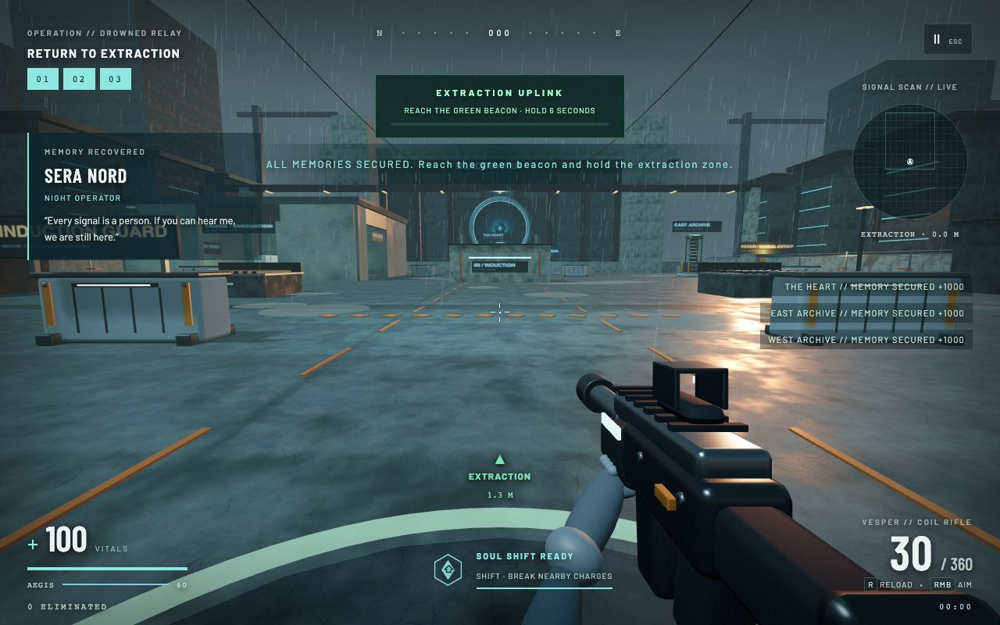
The visible ring previously had a2.5m radius while the active hold radius was2.7m. The ring now marks the unchanged2.7m rule. The world extraction label previously measured to its raised label while the radar used planar distance; both now report the same planar approach distance. A live in-zone label explicitly says IN ZONE, without implying that holding E is required.
Leaving the zone previously kept HOLD THE EXTRACTION ZONE and STAY IN THE ZONE on screen while progress was already decaying. Shared distance/inside helpers now drive the simulation and cues: outside shows RETURN TO EXTRACTION and UPLINK DECAYING · REENTER THE ZONE; inside shows real progress and MOVE WITHIN THE RING. The original height gate,2×outside decay,4/6/8second difficulty holds, waves, health, damage and recovery supplies are unchanged. This changes feedback and the drawn boundary, not invulnerability or extraction difficulty.
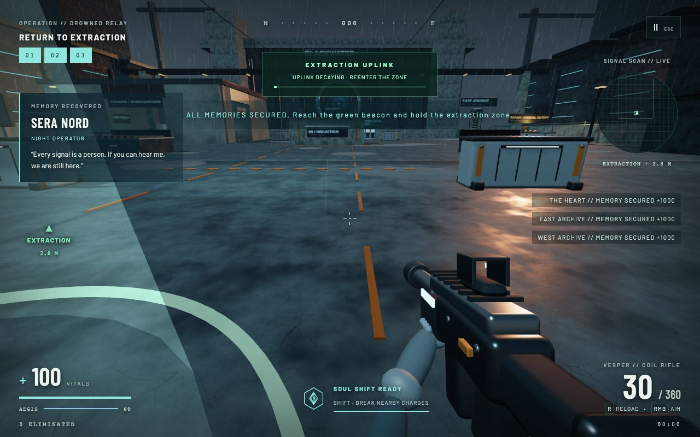
Focused checks pass at1280×800 and1440×900. At2.65m, a quarter-second adds0.25s of progress; at2.75m it removes0.5s. Airborne beyond the existing height gate does not count as inside. Marker/radar distance, ring dimensions, ordinary D movement with continued uplink, and restart removal of the extraction marker are checked. The parent inspected actual inside/outside renders. Mission/held extraction/archive, 12-threat marker composition and production-subpath smoke pass; smoke has14checks and no browser/HTTP errors. Check ledger.
Remaining: no new independent extraction or quality rescore follows from these arrangements. Next is an original Blender-authored tactical uplink position with an open arrival lane, useful in-zone cover, a clear yard-facing defense composition and return cues around central obstructions, followed by two fresh sequential full-mission reviews. Existing live guards must remain a meaningful threat. Dense cues, limited content and absent human enjoyment/audio/hardware evidence still limit the build. The overall quality mission remains open.
The former white crystal, rotating ring and roof-piercing additive beam made an intangible objective look like cover. Three original Blender-authored receivers now occupy the unchanged recovery sites. A continuous sea-grey industrial cabinet stands0.96m high, with a docked contact-lattice cassette, sealed controls, inset progress screen, cooling slots, captive fasteners and restrained exposed edge wear. A flush floor cable raceway leads5m rearward to the existing station pylon. Mara, Elian and Sera retain their named records; a close physical placard identifies the person, role and receiver. The tall pylons remain landmarks rather than the interaction target.
The cabinet stays visible and solid after recovery; its screen enters subdued green standby and the cassette remains docked. Held-E progress actuates the small display, cancellation resets it, pause freezes simulation and restart restores availability. No bobbing hologram or additional camera movement is used. Normal, low, high and reduced-motion settings use the same bounded geometry. The GLB clones share geometry and static materials; animated display materials are local to each receiver. Load failure substitutes a visible cabinet with matching bounds and a small display.
Reproducible Blender authoring script · Blender source · GLB · Measured provenance:288triangles,24mesh objects,37992GLB bytes. These are modest manufactured props, not AAA art certification.
Threat markers retain the final fixed-optic LOS gate with zero endpoint margin and bounded attack history. Charging cues receive first text-layout priority, then recent fire, then usable objectives. Nearby competing text is displaced downward; enemy text sits below its projected anchor to leave bodies clearer. Objective anchors are lowered onto the receiver. Radar, off-screen bearings and existing ADS objective suppression remain. Layout bounds are mechanical checks, not proof of perceptual readability.
The2.8m weighted recovery radius,0.9second hold/cancellation, partial supplies, optional objective order, finite encounters and extraction remain unchanged. Solid cabinet centres invalidate former centre-teleport fixtures: connectivity now targets a reachable2m front service point; debug collection uses1.5m front. The old centre departure is explicitly replaced with a front service departure. All eight original valid arc starts remain; the west centreline route uses a short grounded south sidestep around the new cabinet before heading east. No valid historical failure was deleted. Build18’s counter/opening correction below remains a parent correctness followup without an independent rescore.
Focused state, collision, fallback and ownership checks · Sequential regression ledger. Arranged simulation fixtures, exact-information normal-input controller evidence and independent ordinary play are reported separately below.
The full sequential development/production-subpath smoke, combat, phase, phase-usability, encounters, mission, playtest, standalone/browser movement, medical pursuits, medical-exit, Warden art/motion/steering, recovery and attacker suites passed. Final production smoke passed14checks after updating the briefing to identify the low receiver in front of each pylon. The initial new cable protruded above the floor and blocked two rear routes; raw failure evidence is retained. Recessing it flush corrected the obstruction; all nine departure checks then passed. These are arrangements without enemy pressure, not ordinary navigation success.
Exact-information controller: actual final state won,3memories, extractionProgress1,13kills, errors[]. It reads positions, colliders, resources and target LOS for aiming/routing, then uses normal controls. This is privileged correctness evidence, not independent success or enjoyment.
Additional front/alongside composition checks and seven-frame moving behind-terminal sequences cover yard/bay, hip/ADS and1280×800/1440×900, simultaneous charging/recent fire and objective indications. Sampled actual rendered totals were206–239calls and67858–72930triangles; software rendering does not establish target-hardware FPS. Focused low/standing ray checks respectively block at/pass above the cabinet; navigation routes around it. Near interaction and paused progress were checked across low/balanced/high with reduced motion both ways. Pause-overlay captures support pause state, not close-up art certification. Parent inspected representative actual images: bodies remain visible above/beside the low receiver, but the rifle and large surrounding signs still occupy substantial screen space.
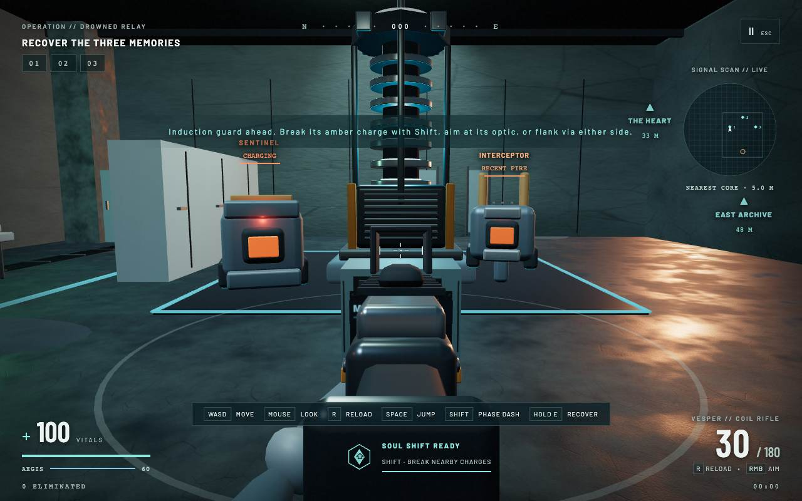
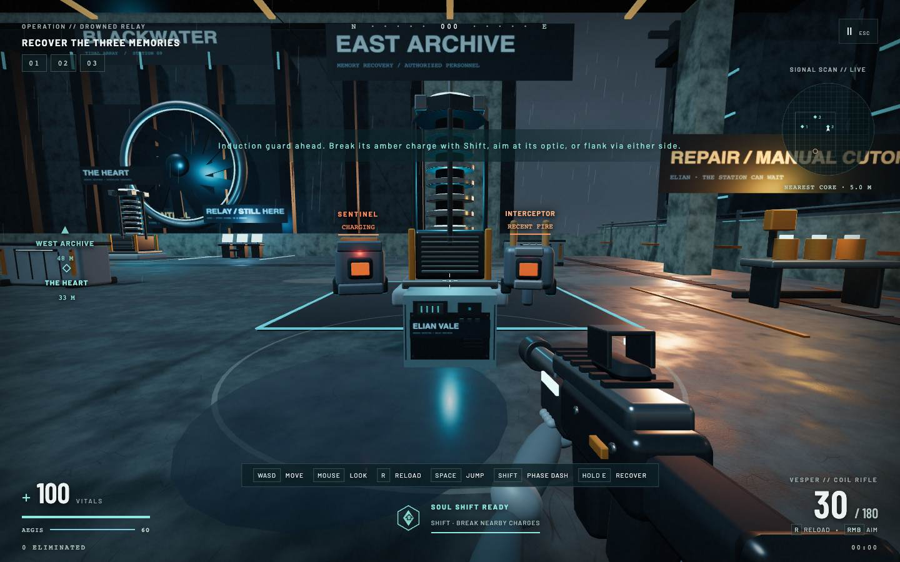
These compact clips encode seven successive actual rendered frames at10samples per simulation second. They expose charging, movement and label composition across0.7seconds of arranged simulation; they are not uninterrupted natural-play or target-hardware timing evidence. Four-clip manifest and the full JPEG sequences remain inspectable.
Exactly two fresh GPT-6.1 Sol reviewers were scheduled sequentially, with every suite/controller browser closed first and no overlapping render work. Source and combat values remained frozen during both. Each used the normal URL, visible briefing/controls and screenshots/UI; synthetic relative mouse events and ordinary Escape/resume reasoning were allowed and disclosed. Neither controller victory nor arranged captures count as their success.
Reviewer1 raw report: gameplay6.8, presentation8.1, usability7.6, readability6.8, AAA5.5 (additional overall provisional7.0). Both ordinary attempts recovered Mara, Elian and Sera, with1elimination, then died returning to extraction at00:53 and00:45. No extraction/hold-zone ending was reviewed. It praised atmosphere and memory presentation but reported overlapping off-screen charge/recent-fire labels, ambiguous routes around cover, simple geometric art and post-recovery crossfire. The reviewer explicitly notes that leaving threats alive and stepwise aiming do not prove unfair damage.
Reviewer1 live JPEG captures took98–596ms, median196ms across28captures. One requested1300ms E hold returned4621ms and increased live exposure. Escape pauses aided reasoning; simulation remained live during captures and actions. These are software-browser, nonhuman attempts, with no audio, hardware FPS or enjoyment certification.
Reviewer2 raw report: gameplay7.0, presentation8.2, usability7.4, readability6.7, AAA5.8 (additional overall provisional7.1). Both ordinary attempts recovered all three memories with1elimination each. Attempt1 reached extraction and observed6%uplink, then died during the hold at00:49; attempt2 died returning at00:36, with2phase evades. Neither extracted. It praised visual identity and objective clarity but reported overlapping threat labels, pylon/receiver approach adjustment and a limited geometric enemy roster. It explicitly does not establish that extraction damage is unfair: most guards were bypassed, and control latency/aiming constrained the attempts.
Reviewer2 live JPEG captures took64–390ms. One1800ms movement call took4349ms; requested/actual action durations are retained. Both independent reports preserve ordinary failures and disclose paused reasoning, synthetic relative mouse input and live capture exposure. The improved capture times do not turn these into human realtime play or audio/hardware validation. Build17’s historical ratings and raw reports remain untouched.
Both reviewers identified text pile-up. The former percentage-space stacking clamped multiple labels onto the same bottom row. The followup uses cached measured label dimensions, tests collisions after clamping, and tries nearby rows/columns while reserving the memory panel and radar. Every off-screen recent-fire cue now retains a bearing arrow, as charge cues already did. All critical charge cues remain; no permanent enemy radar or new threat information is introduced. A12-real-attacker arranged stress test checks all cues, no pairwise label intersections, three viewing bearings, two desktop sizes and the visible memory panel; raw parent check. Parent inspected the actual rendered captures: labels separate, but12simultaneous threats are still visually busy. Numeric separation is not readability certification.
Recovery celebration previously emitted28large bright particles for1.5seconds. It now emits6small restrained particles for0.35seconds; reduced-motion mode omits this burst. The physical receiver display still indicates real held/recovered state. Recovery, resources, combat values and finite stages remain unchanged. Post-followup arranged terminal composition and final sequential regression ledger validate the changes. The final full sequential suite passed again, as did the older standalone medical proximity/navigation followup (98direct sweeps per8simulation seconds), focused receiver/fallback and12-threat composition checks. The final privileged controller again won with3memories, extractionProgress1,13kills and errors[]. Final controller raw state · final source hashes. Neither reviewer saw this small followup; their reports and ratings above are not rescored. There was no third review.
Reviewed source freeze · exact matching reviewed snapshots: game, world, UI. Final code differs only in the documented parent followup. The overall quality goal remains unmet: no independent extraction, dense combat cues, route clarity, simple silhouettes/content breadth and absent human/audio/hardware validation remain limits.
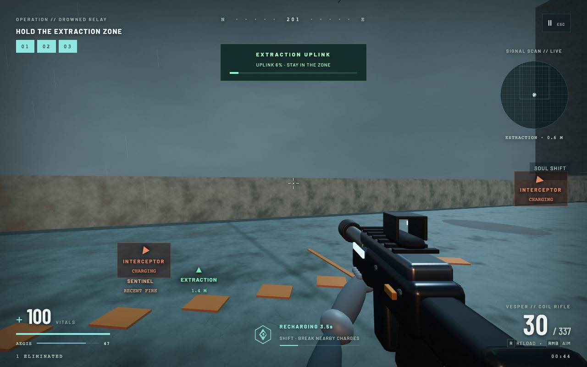
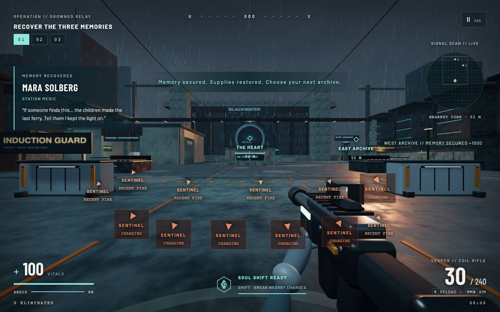
Build17 reviewer1 recovered Mara and Elian but repeatedly caught entry cover, frame and counter edges; jumping/dashing helped it leave triage. Reviewer2 also reported navigation friction. The parent reproduced a specific obstruction: travelling east from the front arc of the medical recovery area stopped at the intake counter. In nine explicitly arranged grounded movement routes, three stopped and six reached the courtyard. The original observations and screenshots are retained, without modifying either independent review.
The intake counter now sits against the front return, clear of the recovery-to-exit lane. The service opening extends toward the intake side, from6m to7.5m, with its lintel and return geometry rebuilt in Blender. Shared medical-layout.json supplies both authoring and collision; inside/outside service signs now derive from the opening centre. Ferry tags derive from the desk top, so moving the counter does not leave floating objects. The route remains open to enemies and bullets; no invisible bypass or removal of all cover was used. Health, damage, enemy timing, phase and recovery rules are unchanged.
Original diagnostic · updated route checks. Eight sampled positions around the2.6m recovery arc and its centre use ordinary D input with controlled simulation for3seconds. The new routes remain grounded at1.7m eye height with zero jumps/dashes. Enemy pressure is explicitly removed for this geometric check; it does not establish natural discovery, combat fairness or every possible corner approach. The parent inspected the actual rendered stopped and courtyard views.
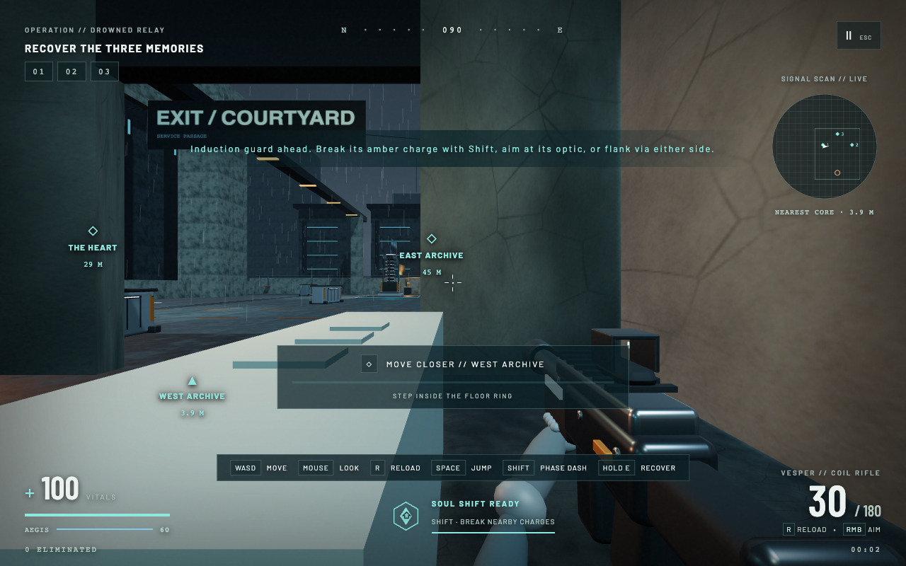
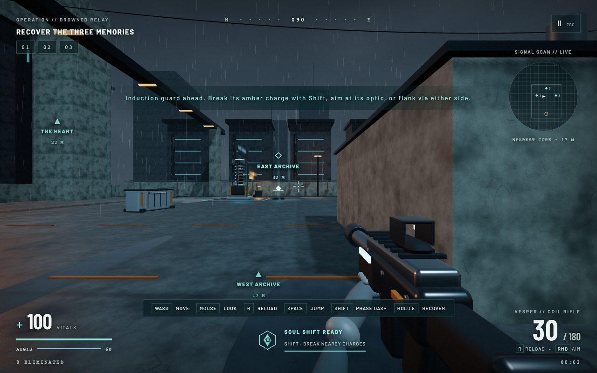
All12 medical pursuits pass with no sampled collision penetration, along with wall/opening LOS, swept wall shots and roof-aware rain. Recovery thresholds, finite encounters/alternate tactics and production-subpath smoke also pass. The rebuilt original asset measures528triangles,6material primitives and42476GLB bytes; measured budget. Sequential check ledger.
The exact-information normal-input controller completed all three memories and extraction with13kills,100health/60shield and46%accuracy at51.83simulation seconds, with no browser errors. It reads exact enemy/player/collision information to aim and route. This establishes automated completion after the layout change; it is not an independent full-mission playtest, human enjoyment or a new rating.
Review method and remaining work: Build17 reviews reported software-browser screenshot delays sometimes exceeding20seconds while other browser work shared the host. The next two independent browser playtests will run sequentially after all suites have closed, retaining ordinary pause/resume and capture-duration evidence. This addresses a testing confound; it does not dismiss navigation or presentation findings. Dominant objective geometry/bright crystals and competing labels still crowd target sightlines; the next substantive pass will address that composition and request full-mission independent attempts. Sparse content, similar machine silhouettes and absent human/audio/hardware validation remain. Both raw Build17 ratings remain unchanged; the overall quality mission is open.
Build15 reviewer1 died twice without recovering Mara and could not acquire the bay attackers. Build16 parent source-informed ordinary play recovered Mara and corrected a service-exit wall alignment miss; that remains parent evidence, not another independent rating. Build16's unchanged2.8m recovery rule, one-decimal nearby distance, held-E availability and floor boundary remain intact. All historical reviews below are retained.
The old spherical twins combined high ion/eye emission with a second runtime sphere, and normalized imported dimensions independently of the precision target. A dedicated Blender authoring script now makes meter-scale industrial Sentinel and Interceptor assets without touching the rifle, props or Warden. Original editable Sentinel .blend and Interceptor .blend, GLBs and measured provenance ship together. No downloaded geometry, textures or branding is used. Sentinel's broad armor brow contrasts with Interceptor's taller fork, keel and narrower split jaws. Identification enamel belongs on service panels; machined edge radii, heat-sink ribs and low-energy induction outlets explain the forms. This is authored PBR material separation, not scanned wear or a realism claim.
A warm rectangular optic is part of each actual model at the existing fixed precision target, local(0,1.3,.43). Emission is bounded (.65 optic, .35 cool propulsion at rest), with restrained charge lighting so manufactured surfaces retain color. Shutters open over the unchanged.65/.42s charge and recoil after the actual shot. Propulsion vanes respond to smoothed resolved translation, decay on stops/stagger, freeze with simulation pause and reset with a fresh rig. The optic never follows those parts. Fire originates from that visible optic. Interceptor retains its predictive attack and existing movement/fire timings.
Sentinel:2160triangles/112716GLB bytes; Interceptor:2376triangles/124792bytes,6materials each and no texture maps. Measured full-art horizontal radius is.44103m, including dynamic vanes, below the unchanged.45m navigation clearance. Shutters move vertically. Rendered two-enemy yard/bay fixtures ranged174–199draw calls and68272–80934triangles, including the station. These are local software-renderer budgets, not target-hardware FPS. Shared clone geometry survives kills/restarts; each enemy owns its materials and actuator state. Missing downloads retain procedural/Sentinel fallbacks.
The previous marker stopped at the end of a short windup and discarded noncharging offscreen attackers. A live attacker now remains eligible for2.4simulation seconds after firing or dealing damage. Existing marker space shows RECENT FIRE, with an edge bearing when offscreen. It is visible only with current line of sight and within32m; death, cover, expiry, restart and nonplaying phases remove it. It does not add enemy radar or through-wall silhouettes. Bearings recompute against current camera heading. The existing damage arc similarly tracks a live source for1.1simulation seconds, rather than retaining an old direction on a wall-clock timer. Objective/ADS priority and recovery cues are preserved; no repeated tutorial panel was added.
Body hits raycast actual authored drone geometry so visible panels are targets and empty silhouette corners do not inherit a broad sphere. Precision retains its.24m sphere,82damage and priority only before the nearest wall; body damage remains34, Standard health100/70. Warden150health/17closed armor/34open/82precision and its fixed optic/steering remain unchanged. Phase, melee, coordination caps, pickup economy and finite encounters retain their rules. The service room and exits were kept within scope; no new room or route was added.
Lifecycle and56actual rendered frames cover yard and shaded triage, hip and ADS at1280×800 and1440×900. Seven successive renders per setup show resolved movement, charge and firing; stills alone are not animation certification. Alignment/target/disposal fixtures verify34/82damage on both variants, wall-first ordering, distinct clone materials/shared geometry, no shared-geometry disposal on kill, fixed optic error below0.000001m, dynamic radius.44103m and zero paused simulation advance. A first corner-body fixture aimed at empty space and missed; it was corrected to an actual lower hull panel, without changing gameplay geometry.
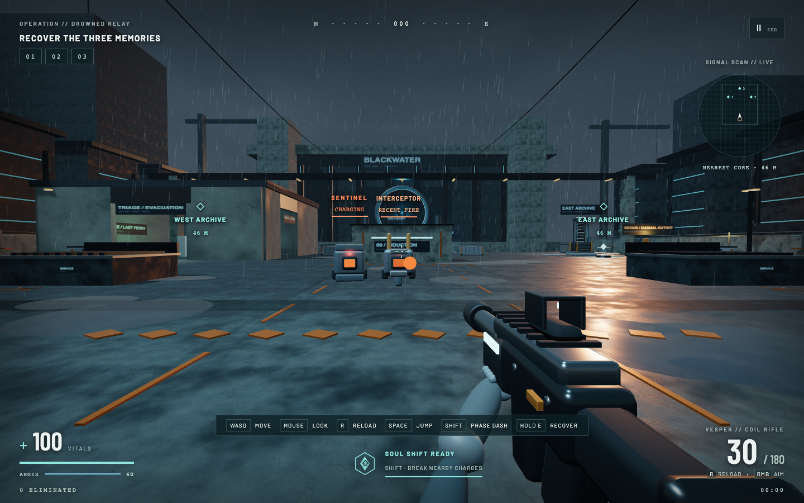
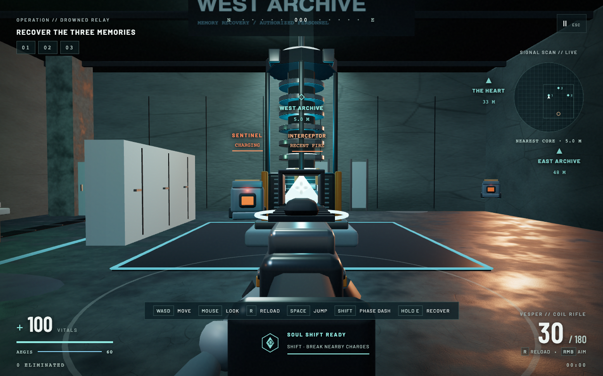
Each clip encodes seven successive actual rendered frames at10samples per simulation second (0.7seconds per sequence). These controlled fixtures demonstrate changes of state; they do not establish natural-play smoothness or target-hardware timing.
Sequential suite ledger and immutable Build17 JSON/log snapshots retain development smoke, production Pages-subpath smoke, combat, phase, phase usability, finite encounters, mission, playtest, standalone/browser movement, medical, Warden art/motion/steering and recovery checks. All ultimately passed. The mission cue fixture initially expected the removed unattached-position wall-clock indicator; it now creates a live attacker and verifies that cue. Early runs interrupted by Vite source reload and a synthetic enemy fixture without rotation were corrected before the frozen review source. No historical Build15 writer runs remain in reusable tests; new writers default to current-*.
Exact-information controller result was inspected and asserted: phase won,3memories,extractionProgress1,13kills,100health/60shield at65.17simulation seconds. Kills are optional. It reads exact player/enemy positions, colliders, LOS and goals to plan paths and aim, then sends ordinary keyboard/mouse inputs; it does not teleport or modify resources. That information advantage is substantial. This is mission correctness evidence, not independent discovery, human enjoyment or a substitute for either review. The writer now fails unless the recorded final state actually wins with all memories and completed extraction.
Both native GPT-6.1 Sol reviewers began in fresh isolated contexts and judged the same whole-game rubric provisionally. Gameplay/art hashes remained unchanged through both reviews. No third reviewer or retrospective rescore was used. Reviewer1 read only visible briefing/handbook and normal-URL play. Reviewer2 played normally first, then separately inspected source-informed moving and target fixtures. A late post-ordinary prompt asked Reviewer2 to inspect Reviewer1's perceived cover-tag issue; no scores were shared, and the prompt is disclosed in the raw report.
Both used synthetic relative mouse events and ordinary keyboard/button input, with Escape pause/resume between screenshot decisions. Captures sometimes left simulation running for many wall-clock seconds, creating an artificial exposure disadvantage; pauses and learned screenshots also confer advantages. Short uninterrupted combat evidence is labeled separately. Chrome SwiftShader and shared-host contention cannot establish hardware responsiveness, audio mix or human enjoyment.
Reviewer1:6.5 /7 /6.5 /6.5 /4. Attempt1 died at00:48 with1kill and0memories. Attempt2 recovered Mara, departed through the alternate service exit, recovered Elian, then died at the Heart at00:59:1kill,2memories,1phase evade. It did not complete extraction. The service counter required a jump/dash correction. Through-cover-looking tags, route-edge collisions and crowded information remained concrete friction.
Reviewer2:6.1 /6.4 /6.3 /5.8 /3.5. Attempt1 died with1kill at31seconds; attempt2 died with0kills at39seconds. Attempt3 reached the bay, turned to reacquire a moving Sentinel and killed it, stopping alive at27health with2kills at25seconds. Independent arranged checks verified empty-space misses,34/82damage, nearer-body priority regardless iteration order, wall-ahead blocking/wall-behind precision, fixed optics and full-art clearance. The reviewer found the dominant square orange faces still similar, actuation subtle, bay sightlines crowded and multi-attacker reacquisition difficult. The actual inspected bay tag had a shootable body; cupboard/pixel mismatch was not independently reproduced.
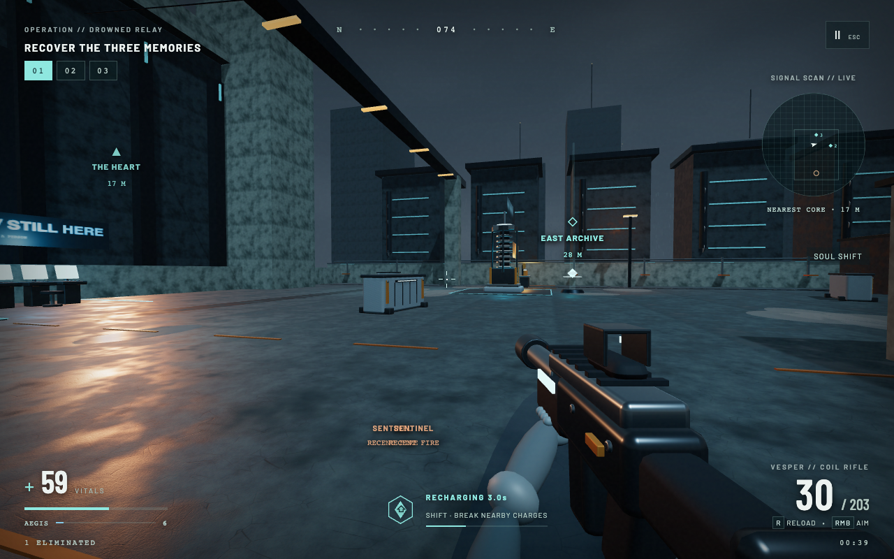
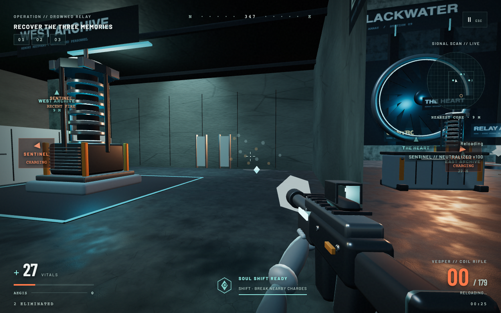
The center-point LOS gate did not describe the fixed rendered optic exactly. Final marker/damage-arc visibility now tests that rotated optic with zero endpoint wall margin. A constructed fixture deliberately leaves center LOS clear while blocking the optic and requires no marker, then restores it after removing cover. This narrows the local visibility contract; it does not prove full per-pixel occlusion, solve label overlap or invalidate the raw observation. No silhouette through walls is added.
Final edge corrections also reject malformed/missing rig downloads into existing fallbacks, clear old damage attribution when a dead attacker's projectile or unattributed damage arrives, and bound stagger emission at.8 while retaining the phase flash color. No health, damage, precision area, movement/fire timing or encounter difficulty was changed. Explicit post-review fixtures and final suite evidence distinguish these corrections from the reviewed freeze. The original motion clips and raw scores still describe the reviewed source. Final validation and repeated sequential suite passed after these fixes. The final controller again recorded won/3memories/full extraction: 13kills, 100health/60shield at51.46simulation seconds. All12medical pursuits again crossed with zero sampled penetrations.
Remaining gaps: plain broad surfaces, box-like hovering actors, subtle type distinction and actuation at combat distance, busy recovery/cover sightlines, multi-attacker attribution and service-counter navigation friction. Neither reviewer completed extraction. The advantaged controller did; it cannot stand in for human discovery or feel. Actual audio listening, target-hardware performance, accessibility coverage and AAA production readiness remain unvalidated. The autonomous quality mission remains open for the parent.
{
"schemaVersion": 1,
"build": "SOULFALL Build 17",
"reviewer": "reviewer1",
"reviewerModel": "GPT-6.1 Sol",
"createdAt": "2026-11-01T04:01:23.283471+00:00",
"status": "raw independent report; preserve without retrospective editing",
"scope": "Whole-game provisional review from two bounded normal-mode attempts. Requested deployment -> medical encounter -> Mara held recovery -> alternate exit sequence was completed on attempt 2. Full mission was not completed.",
"ratingsOutOf10": {
"gameplay": 6.5,
"presentation": 7.0,
"usability": 6.5,
"levelReadability": 6.5,
"aaaReadiness": 4.0
},
"ratingRationale": {
"gameplay": "The visible optic kill, regenerative shield, recovery supply refill, and dash afford an understandable combat/recovery loop. Attempt 2 recovered two memories and escaped triage despite poor target tracking. Multiple mobile pursuers compressed the recovery window and made exposure punishing. Combat feel and balance remain uncertain under screenshot-driven input.",
"presentation": "Coherent rain-soaked cyan/amber industrial palette, wet ground lighting, restrained typography, a distinctive relay fan, strong title/briefing/death screens and readable memory cards. Repeated plain wall panels, cupboards/counters and floating box enemies show the slice scale; the environment does not yet offer the richness or character detail implied by AAA presentation.",
"usability": "Visible handbook and pause menu clearly explain ordinary controls. Recovery feedback distinguishes move closer, hold E and memory secured; ammo refill and lit objective indices confirm success. Through-cover enemy labels and overlapping alerts can clutter decisions. I initially mistook the central pylon for the exact interaction point until the floor-ring/diamond feedback corrected me. This is partly reviewer error and partly an opportunity for stronger spatial clarity.",
"levelReadability": "Triage/evacuation, last ferry, west archive, exit/courtyard, east archive and relay signs form a legible environmental sequence. South intake and east service were both visually usable. The east service counter obstructed my direct line; I used handbook jump and dash to clear it. Covers and door frames were meaningful but screenshot navigation repeatedly caught me against their edges. The large pylon and floating memory target have spatial separation that required a closer look.",
"aaaReadiness": "A coherent playable vertical slice with good UI finish is visible, but these two attempts do not demonstrate shipping-level mission depth, combat feel, content variety, audio, stability across real hardware, accessibility coverage or full extraction. Four is a provisional readiness judgment, not a claim that the slice failed to run."
},
"knowledgeAndIntegrity": {
"firstPlayKnowledge": "Fresh context consisted only of the parent review brief, desired sequence, URL, browser fallback permission, allowed controls and artifact locations. No gameplay source, old screenshots, exact coordinates or enemy internals were supplied or read.",
"sourceRead": false,
"testHandleUsed": false,
"normalUrl": "http://127.0.0.1:5173/",
"inPlayInformation": "Visible mission brief, visible operator handbook, screenshots, and rendered visible body innerText only. Later choices used my own earlier attempt screenshots and visible HUD/compass/minimap. Mouse sensitivity was inferred from visible compass changes.",
"externalMessages": "Parent advised that other software-WebGL browser regressions were running, screenshot latency could expose the player, and later confirmed the requested sequence was covered. Parent also mentioned 12 medical pursuit checks passed; I did not use this suite result for gameplay decisions or for success claims.",
"forbiddenActions": "No teleport, no simulation/resource/enemy changes, no exact enemy state or aiming access, no gameplay source changes, no historical artifact edits.",
"gameplaySourceEdited": false,
"controlsActuallyUsed": [
"visible UI mouse clicks",
"W/A/S/D key presses/holds",
"left mouse firing",
"R reload",
"held E recovery",
"Shift dash",
"Escape pause/resume",
"Space jump as visibly documented in handbook"
],
"mouseLook": "Driver dispatched document MouseEvent mousemove with explicit movementX/movementY and bubbles=true. These were ordinary relative look deltas chosen from screenshots, not state-derived aim. Pointerlock-equivalent look was synthetic; it was not physical human mouse play.",
"pausePolicy": "Escape paused between screenshot-guided tactical decisions. Paused overlay obscures world, so action blocks captured a live screenshot first and queued Escape afterward. Capture latency therefore sometimes continued exposure; no UI hiding or simulation pausing outside ordinary Escape was used.",
"uninterruptedCombat": "Action log retains short uninterrupted live fire/action segments, notably first optic kill and attempted close sentinel exchanges. These are not human real-time combat performance samples."
},
"environment": {
"browser": "Installed Google Chrome 156.0.8078.76 via Playwright",
"executable": "/Applications/Google Chrome.app/Contents/MacOS/Google Chrome",
"headless": true,
"viewport": {
"width": 1280,
"height": 800
},
"args": [
"--enable-unsafe-swiftshader",
"--ignore-gpu-blocklist"
],
"graphics": "Software WebGL fallback; other browser workloads shared host",
"audioAssessed": false,
"pageErrors": [],
"browserClosed": true
},
"attempts": [
{
"attempt": 1,
"outcome": "OPERATOR LOST",
"visibleMissionTime": "00:48",
"eliminations": 1,
"score": 180,
"accuracyPercent": 10,
"criticalEliminations": 1,
"phaseEvades": 0,
"memoriesRecovered": [],
"sequence": [
"Read mission brief and operator handbook",
"Deployed; shot entry warden optic and saw 1 elimination",
"Followed TRIAGE / EVACUATION toward west archive",
"Reached WEST TRIAGE south intake and HOLD E prompt",
"Tried firing and held recovery while pursued; died before recovery"
],
"failure": "Rushed the archive while sentinels pursued; poor screenshot-driven tracking and long live capture exposure consumed shield/health. Capture12 visibly showed HP78 while immediately following rendered text had HP21. This is a substantial harness confound, not proof of a normal-human difficulty defect.",
"evidence": [
"docs/media/build17-review1-06-warden-combat.png",
"docs/media/build17-review1-12-triage-interior.png",
"docs/media/build17-review1-14-attempt1-outcome.png"
]
},
{
"attempt": 2,
"outcome": "OPERATOR LOST",
"visibleMissionTime": "00:59",
"eliminations": 1,
"score": 2255,
"accuracyPercent": 5,
"criticalEliminations": 1,
"phaseEvades": 1,
"memoriesRecovered": [
"MARA SOLBERG / STATION MEDIC",
"ELIAN VALE / RELAY ENGINEER"
],
"sequence": [
"Deploy Again; eliminated frontal warden with optic fire",
"Reapproached triage; tried a close sentinel fire/dash exchange without a confirmed extra kill",
"Used visible floor-ring proximity feedback to enter recovery radius",
"Held E and visibly secured Mara; index01 lit and ammo replenished",
"Followed EXIT / COURTYARD service sign; jump and dash cleared counter near passage",
"Emerged through alternate east service exit into courtyard with HP59",
"Followed East Archive marker, held E, visibly secured Elian; index02 lit and ammo replenished",
"Approached Heart and attempted final recovery; died before Heart recovery"
],
"requestedSequenceCompleted": true,
"fullMissionCompleted": false,
"evidence": [
"docs/media/build17-review1-21-attempt2-mara-start.png",
"docs/media/build17-review1-22-attempt2-east-service.png",
"docs/media/build17-review1-23-attempt2-alternate-exit.png",
"docs/media/build17-review1-25-east-recovery.png",
"docs/media/build17-review1-28-attempt2-final-outcome.png"
]
}
],
"concreteFindings": [
{
"type": "positive",
"finding": "The normal-mode requested medical route was discoverable from visible signage, and both held memory recovery and alternate service exit worked in attempt2."
},
{
"type": "positive",
"finding": "Recovery visibly restored supplies and showed a named human memory, giving mechanical and narrative reward in the same moment."
},
{
"type": "friction",
"finding": "Enemy tags remain visible through cupboards/walls and sometimes overlap recovery/mission markers; recent fire/charging labels did not always correspond to a visible body that I could shoot."
},
{
"type": "friction",
"finding": "My direct path repeatedly collided with entry cover, door frame and service counter. I could recover and exit after correcting route, but close geometry needs readable navigation silhouettes."
},
{
"type": "limit",
"finding": "I did not achieve a clean sentinel combat clear; both runs recorded one critical elimination only. The 5%/10% reported accuracy mostly reflects obsolete screenshot aiming and cannot establish weapon feel for humans."
},
{
"type": "limit",
"finding": "I did not observe third memory completion, extraction hold, victory, full enemy roster behavior, audio quality or hardware performance."
}
],
"harnessIssues": [
"First driver launch omitted tty; stdin closed and could not accept interactive commands. No game attempt occurred there. Relaunched with tty before first deployment; the initial idle browser was subsequently terminated by its identified process IDs.",
"An early command had duplicate JSON click keys, causing only the last click to apply. Visible screenshots clarified the still-open modal. This was driver usage error, not a game bug.",
"Screenshots often took several to 20+ wall-clock seconds amid shared software graphics contention. Captured frame, post-capture text, and later Escape can refer to different simulation moments. The final stable defeat screenshots/text agree.",
"Driver executes click, key, down, move and wait in its documented code order; key presses in a single command occur before down holds. No failed action was counted as a successful mechanical effect unless confirmed visibly.",
"Playwright browser.close completed with no page errors. The first idle browser and remaining own driver processes were explicitly terminated; other reviewers browsers were not touched."
],
"limits": "Provisional whole-game scores are subjective impressions of the visible slice, not certification of human enjoyment, audio quality, hardware readiness, balance, accessibility or full mission quality. Software graphics, pauses, synthetic look input, low temporal sampling and host contention materially limit combat conclusions.",
"artifacts": {
"driver": "docs/quality-reviews/build17-reviewer1-driver.mjs",
"actions": "docs/quality-reviews/build17-reviewer1-actions.json",
"screenshots": [
"docs/media/build17-review1-00-briefing.png",
"docs/media/build17-review1-01-mission-brief.png",
"docs/media/build17-review1-02-handbook.png",
"docs/media/build17-review1-03-deployed-paused.png",
"docs/media/build17-review1-04-deployed.png",
"docs/media/build17-review1-05-deployment-view.png",
"docs/media/build17-review1-06-warden-combat.png",
"docs/media/build17-review1-07-west-approach.png",
"docs/media/build17-review1-08-triage-door.png",
"docs/media/build17-review1-09-sentinel-exchange.png",
"docs/media/build17-review1-10-medical-threshold.png",
"docs/media/build17-review1-11-medical-entry.png",
"docs/media/build17-review1-12-triage-interior.png",
"docs/media/build17-review1-13-mara-recovery-attempt.png",
"docs/media/build17-review1-14-attempt1-outcome.png",
"docs/media/build17-review1-15-attempt2-approach.png",
"docs/media/build17-review1-16-attempt2-triage-approach.png",
"docs/media/build17-review1-17-attempt2-close-sentinel.png",
"docs/media/build17-review1-18-attempt2-recover.png",
"docs/media/build17-review1-19-attempt2-medical-fire.png",
"docs/media/build17-review1-20-attempt2-held-recovery.png",
"docs/media/build17-review1-21-attempt2-mara-start.png",
"docs/media/build17-review1-22-attempt2-east-service.png",
"docs/media/build17-review1-23-attempt2-alternate-exit.png",
"docs/media/build17-review1-24-east-archive-push.png",
"docs/media/build17-review1-25-east-recovery.png",
"docs/media/build17-review1-26-heart-approach.png",
"docs/media/build17-review1-27-heart-recovery.png",
"docs/media/build17-review1-28-attempt2-final-outcome.png"
]
}
}
{
"reviewer": "reviewer2",
"model": "GPT-6.1 Sol",
"build": 17,
"createdAt": "2026-11-01T04:04:16.333612+00:00",
"status": "Immutable independent raw provisional whole-game review; no gameplay/art source edits",
"scope": "Ordinary combat/attacker reacquisition in yard and medical bay, then separately arranged moving art/LOS/target correctness. Not a completed whole-mission playthrough.",
"ratings": {
"scale": "out of 10; same whole-game rubric as reviewer1, not art-only",
"provisional": true,
"gameplay": 6.1,
"presentation": 6.4,
"usability": 6.3,
"levelReadability": 5.8,
"aaaReadiness": 3.5
},
"ratingReasons": {
"gameplay": "Usable fire/reload/ADS/strafe and real kills. Yard reacquisition failed under multi-attacker pressure; medical pursuit and reacquisition eventually succeeded. No personal full extraction result; timing judgments heavily limited by software capture.",
"presentation": "Coherent rain/industrial palette and clean type. Authored hovering housings have coherent square optics, shields/skids and type-specific fins, but both share a dominant box silhouette and orange face; motion is small in actual framing.",
"usability": "Visible handbook and briefing explain the main loop and controls. Clear ammo/reload, shield, core markers and enemy labels. Pause clears ADS/input, making resumed screenshot-driven aiming awkward; attacker text competes with core/signage in bay.",
"levelReadability": "South intake/east service, bay signage and core marker eventually guided entry. West approach repeatedly cost navigation time; central cover and storage hide small attackers while several labels compete. Distinct combat spaces exist but do not yet read instantly.",
"aaaReadiness": "A convincing functional vertical slice, with limited encounter/art breadth and incomplete validation of performance, audio and normal human play. This review does not support AAA certification."
},
"ordinaryMethod": {
"url": "http://127.0.0.1:5173/",
"viewport": [
1280,
800
],
"readBeforePlay": [
"Visible OPERATOR HANDBOOK",
"Visible EYES ONLY / MISSION BRIEF"
],
"inputs": "Menu clicks, WASD, R, Space/Shift attempted, left/right mouse, document MouseEvent movementX/Y ordinary look events. Aim corrections were estimated from visible pixels; no exact world/camera positions or internal aim helper.",
"notUsedForDecisions": [
"Source or tests",
"test=1",
"Enemy state/windup",
"Exact positions",
"Teleports",
"Resource/enemy edits",
"Prior build media"
],
"pause": "Escape pause and menu resume used between screenshot decisions. Advantage: unlimited reasoning time and no combat progression while reasoning. Disadvantages: screenshot capture remained unpaused and added exposure; pause clears ADS/input; resumed controls were sometimes misjudged. This is assisted screenshot-driven play, not human real-time play.",
"rendering": "Installed Chrome headless with --enable-unsafe-swiftshader --ignore-gpu-blocklist; no hardware FPS/audio certification. Other browsers/suites overlapped early and increased latency. Playwright video ffmpeg was initially absent and installed. First browser screenshot/close stalled; own browser was SIGTERM terminated; video remains readable. CDP screenshots used for later attempts.",
"attempts": [
{
"id": 1,
"outcome": "Died",
"missionTime": "00:31",
"eliminations": 1,
"accuracy": "10%",
"criticalEliminations": 1,
"phaseEvades": 0,
"detail": "Centered fire killed opening induction Warden. Advanced to west/medical approach. Three Sentinel cues became visible; rotated toward bearings, over-rotated and failed to reacquire shootable actors around cover. Lost remaining health during capture/resume cycle. This was a real failure, not a pass."
},
{
"id": 2,
"outcome": "Died",
"missionTime": "00:39",
"eliminations": 0,
"detail": "Tried to reach medical bay via left diagonal, overshot to west exterior wall/corner and struggled to navigate inward. Repeated held movement appeared minimal while taking fire. Retained as navigation/capture failure; cause not isolated. No ordinary bay combat success on this attempt."
},
{
"id": 3,
"outcome": "Voluntarily stopped paused, alive",
"missionTimeAtLastCapture": "00:25",
"eliminations": 2,
"health": 27,
"cores": 0,
"detail": "Killed opening Warden. Used visible opening/signage/core beacon to enter shaded medical bay through south intake. Saw and fired at moving Sentinel, strafed through east service opening and lost target behind wall. Turned left, reacquired actual body and label, fired more bursts and neutralized Sentinel. Poor aim and multi-attacker pressure still caused heavy damage. Ordinary bay engagement and kill are directly captured."
}
],
"uninterruptedSegments": [
{
"path": "docs/media/build17-review2-normal-yard-uninterrupted.mp4",
"type": "Actual continuous video excerpt, source video 63\u201369 seconds",
"label": "Ordinary yard sustained firing/advance, no Escape during this segment"
},
{
"paths": [
"docs/media/build17-review2-normal3-medical-ads-target.png",
"docs/media/build17-review2-normal3-medical-burst.png"
],
"type": "Two actual temporal screenshots from one uninterrupted resumed combat interval; not continuous video",
"label": "Ordinary medical ADS reacquisition to burst/neutralization; no Escape between the two captures. Capture latency increases exposure."
}
],
"evidence": [
"docs/media/build17-review2-normal-entry.png",
"docs/media/build17-review2-normal-west-advance-long.png",
"docs/media/build17-review2-normal-west-approach.png",
"docs/media/build17-review2-normal-yard-advance.png",
"docs/media/build17-review2-normal-yard-death.png",
"docs/media/build17-review2-normal-yard-reacquire-rear.png",
"docs/media/build17-review2-normal-yard-reacquire.png",
"docs/media/build17-review2-normal-yard-start.png",
"docs/media/build17-review2-normal2-corner-look.png",
"docs/media/build17-review2-normal2-entry.png",
"docs/media/build17-review2-normal2-intake-front.png",
"docs/media/build17-review2-normal2-medical-door.png",
"docs/media/build17-review2-normal2-north-return.png",
"docs/media/build17-review2-normal2-recaptured.png",
"docs/media/build17-review2-normal2-return-inward.png",
"docs/media/build17-review2-normal2-south-intake.png",
"docs/media/build17-review2-normal2-west-wall.png",
"docs/media/build17-review2-normal3-bay-alignment.png",
"docs/media/build17-review2-normal3-bay-approach.png",
"docs/media/build17-review2-normal3-medical-ads-target.png",
"docs/media/build17-review2-normal3-medical-burst.png",
"docs/media/build17-review2-normal3-medical-fight.png",
"docs/media/build17-review2-normal3-medical-inside.png",
"docs/media/build17-review2-normal3-medical-reacquire.png",
"docs/media/build17-review2-normal3-medical-return-fire.png",
"docs/media/build17-review2-normal3-yard-clear.png"
],
"rawVideo": "docs/media/build17-review2-video/page@f9e2af678757ac6f9514c92f44c33c81.webm",
"driver": "docs/media/build17-review2-driver.mjs",
"actions": "docs/media/build17-review2-actions.jsonl",
"actionsLimitation": "Actions logging begins with second browser; first attempt commands are described here and retained in thread/video. Final driver uses CDP/no video after initial video path stalled."
},
"arrangedMethod": {
"separation": "Started only after all three ordinary attempts ended. Source, internal state, exact positioning, synthetic colliders and deterministic zero spread used only for arranged fixtures.",
"temporalRenderedEvidence": "Inspected all 56 existing actual WebGL rendered frames (seven per setup) generated by tests/attacker-readability-regressions.mjs for yard+shaded bay, hip+ADS, 1280x800+1440x900. Saved eight chronological crop filmstrips. These are actual temporal render sequences, not still-only art certification; cropping/thumbnailing does hide fine detail, so full frames were also inspected at representative starts.",
"filmstrips": [
"docs/media/build17-review2-arranged-1280-bay-ads-filmstrip.jpg",
"docs/media/build17-review2-arranged-1280-bay-hip-filmstrip.jpg",
"docs/media/build17-review2-arranged-1280-yard-ads-filmstrip.jpg",
"docs/media/build17-review2-arranged-1280-yard-hip-filmstrip.jpg",
"docs/media/build17-review2-arranged-1440-bay-ads-filmstrip.jpg",
"docs/media/build17-review2-arranged-1440-bay-hip-filmstrip.jpg",
"docs/media/build17-review2-arranged-1440-yard-ads-filmstrip.jpg",
"docs/media/build17-review2-arranged-1440-yard-hip-filmstrip.jpg"
],
"sourceInspected": [
"tests/attacker-readability-regressions.mjs",
"tests/drone-alignment-regressions.mjs",
"tests/drone-lifecycle-edges.mjs",
"src/game.js spawnEnemy/shoot/updateEnemies/animateDrone/captureMarkers/hasLineOfSight/bindInput",
"src/world.js triage asset load"
],
"independentTests": [
"DRONE_OBSERVATIONS=docs/quality-reviews/build17-review2-drone-alignment.json node tests/drone-alignment-regressions.mjs",
"node docs/media/build17-review2-target-checks.mjs"
],
"testReports": [
"docs/quality-reviews/build17-review2-drone-alignment.json",
"docs/quality-reviews/build17-review2-target-checks.json"
],
"testHarnessFailure": "First custom fixture timed out because waitForFunction used RAF polling after RAF was intentionally suppressed. Changed fixture to polling:50 and reran successfully. No game source change.",
"results": {
"silhouettes": "Sentinel has squat housing/skids; Interceptor has taller asymmetric fin profile. Both retain similar box housing and square orange optic, so at distance the label provides much of type identification.",
"chargeAndFire": "Chronological actual frames show charging text, small shutter separation, brighter top optic light and projectiles during fire. The charge-to-fire transition exists, but housing motion and vane angle are subtle at normal yard scale; bay core crystal/rifle overlap partly hides Interceptor.",
"motion": "Independent 240-step source fixture for each type records shutter travel about .069m, vane rotation from0 to~.189rad Sentinel /~.288rad Interceptor, one projectile each. These numerical checks support observed rendered movement and do not replace temporal visual inspection.",
"fixedOptic": "Both types optic remains rigid; maximum measured expected-vs-world error about4.93e-8m while translating/turning/charging. Precision sphere remains fixed .24m.",
"geometryAndPrecision": "Independent authored-geometry body shots34 and centered precision82 pass for both types; empty-air ray offset .55m misses both. Centered precision intentionally wins within an authored body intersection.",
"ordering": "Nearer off-axis body receives34; farther centered optic remains undamaged, with either enemy iteration order. Synthetic wall before enemy blocks damage; wall behind permits82.",
"coverProtrusions": "Every authored vertex of both moving types stays within measured horizontal radius .441026m during fixture, below .45m occupancy radius. No horizontal collision/visual protrusion found in sampled charge/turn/motion; does not certify all map arrangements.",
"materialsAndPause": "Cloned materials distinct, geometry shared, killing one does not dispose surviving shared geometry; paused runtime delta0."
}
},
"findings": [
{
"severity": "medium",
"finding": "Multi-attacker reacquisition remains difficult in ordinary west approach. Labels communicate type and charging/recent fire, but actual actors are small and cover interrupts visual tracking. First attempt died while turning between cues."
},
{
"severity": "medium",
"finding": "Sentinel/Interceptor dominant silhouettes remain similar. Interceptor fin and skids provide distinction in arranged close framing, but square orange face and same housing dominate at combat distance."
},
{
"severity": "medium",
"finding": "Medical beacon crystal/ring, hanging sign, rifle ADS and simultaneous enemy labels can overlap one another. Arranged bay sequences visibly obscure portions of Interceptor; ordinary bay target tracking required leaving/re-entering opening."
},
{
"severity": "unresolved",
"finding": "Center-LOS marker gate is not full pixel/body/optic coverage. Markers test center y1.3 with .2 endpoint margin and label is projected y2.2. I did not concretely reproduce a tag with completely unshootable optic/body. Actual ordinary medical captures show tag plus shootable body; source/fixture success cannot certify all cabinet/corner pixels."
}
],
"knowledgeDisclosure": {
"priorKnowledge": "Parent brief supplied build identity, target concern categories, known Chrome fallback, fixture/media paths, two-reviewer scope. No prior review report or game source read before ordinary play. A file listing exposed older review filenames but their content was not opened.",
"parentDuringOrdinary": [
"Software browser/suite contention warning",
"Fixture suite near completion and suggestion to pause before captures (not used for control aiming)",
"Status that required suite finished"
],
"postOrdinary": [
"Read arranged test source and existing build17-drone-alignment.json / freeze manifest",
"Parent reported reviewer1 perception of cover tags after my normal pass, requested bounded follow-up; no other reviewer scores were supplied/read",
"Parent reported exact-information controller completed mission, treated only as external evidence, not my ordinary result"
],
"freeze": {
"matches": true,
"actual": {
"src/game.js": "ccd59e04d541d6838379621236f356f915f5351ead4c726e55e1f1594bde2709",
"src/main.js": "75b2bf2607b1f0c8f3fee5e3f71ad88b7f88b23eb87d8a06c5d2724b1c194884",
"public/assets/sentinel.glb": "9accd52c32a57e6bac5caa426ec8d09b3ba7a386b0b5f198a60fbe7faadcf37b",
"public/assets/interceptor.glb": "2519b173aeb9e1a079ed54c35b3ed8d2e59c692a8d92923e892d470ceec34c6b"
}
},
"unsupportedClaims": [
"Normal hardware FPS/performance",
"Audio quality (headless muted)",
"Human enjoyment",
"AAA readiness certification",
"Personal completed full mission",
"Universal visibility/cover correctness"
]
},
"browsersClosed": true
}The Build15 normal-input reviewer reached the bay but died twice without recovering Mara. The parent kept those failures and their provisional judgments unchanged. A new parent ordinary-input attempt on the same final Build15 build recovered Mara and departed through the service door. It used screenshots, keyboard/mouse listeners and ordinary pause/resume; the normal URL exposed no test handle. Known source/layout, learned aiming and pauses between decisions strongly advantage this attempt. It is not blind discovery, continuous play, another independent review or a new rating.
The run eliminated the opening Warden and one bay sentinel, took shield damage, and recovered Mara with held E. The first attempt to align with the service exit ran into a wall; a short correction then reached the open courtyard. The final visible HUD showed two eliminations,100 health/60 shield and00:27. The parent stopped after this medical-route exercise; it did not complete the whole mission. Retained interactive driver and transcribed commands retain the distinction from the separate exact-information controller.
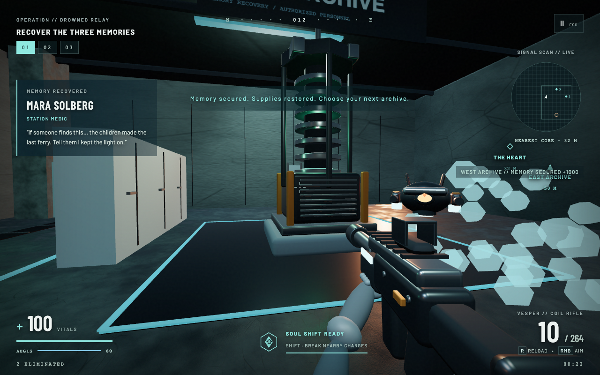
The prominent pylon sits behind the smaller interactive memory crystal. The old marker measured distance to its raised label while recovery checked the player's grounded distance to the pickup. Rounded metres also hid the difference between just inside and outside reach. The parent centralized the unchanged2.8m radius and weighted vertical-distance rule, and now uses that same measurement for interaction, held recovery, objective, radar and world marker. Nearby out-of-range labels show a tenth of a metre. Once within reach, marker and radar explicitly say HOLD E; the nearby interaction prompt only shows the E key when it is usable.
A thin, depth-tested floor ring appears within7.5m of each uncollected pickup. Its centreline marks the grounded recovery boundary; it becomes slightly clearer in range and disappears with the recovered memory. This is static procedural world-space UI, not new physical art, a safe zone or an expanded recovery radius. The projected circle describes grounded reach; jumping still uses the existing vertical-distance rule. No extra camera motion or pulse was added.
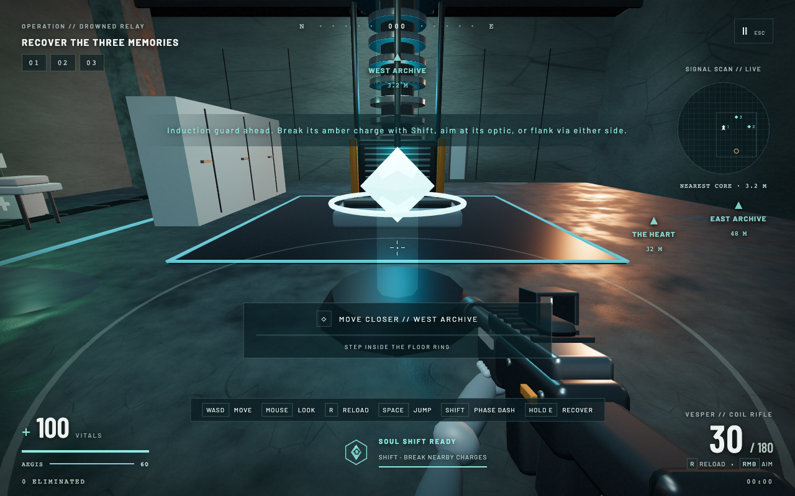
Focused boundary checks passed at1280×800 and1440×900: outside3.16m consistently reads3.2m and cannot recover after held E; inside2.75m shows HOLD E and successfully recovers. Ground boundary dimensions, collection visibility, far-distance hiding on restart and an airborne out-of-range case are checked. Existing held recovery/cancellation, named memories, partial supplies, contested extraction, archive, directional damage, aim-marker suppression and phase-followup checks passed. Production-subpath smoke passed14 checks with no browser/HTTP errors. These are parent correctness checks; no independent rescore is implied.
Remaining: attackers can still be difficult to acquire between short charge cues, regular drones have overly bright emitters and simple forms, the medical exit needs better route composition, and overall content/art scope is limited. The next pass will address attacker acquisition and get two fresh independent playtests of recovery and departure. Human enjoyment, audio and hardware performance remain unvalidated. The overall quality mission remains open.
West medical now occupies a high-canopied evacuation bay. Its broad south intake gives an immediate view of the archive; the east service passage offers an alternate entry and retreat. A tall storage spine conceals the medic side of the room, while the intake desk provides low cover. Empty cot, folded stretchers, evacuation lockers and ferry tags give Mara's last-ferry memory a physical setting. East engineering and the Heart retain open sky for contrast. The finite two-sentinel stage remains independent of recovery order; there is no mandatory kill, phase, jump or parkour gate.
The original Blender shell and major furniture are generated from src/medical-layout.json by retained tools/build_medical.py, with .blend, GLB and provenance. Runtime shell collision, encounter spawns, recovery/story placement and weather shelter share that layout. Original station concrete PBR materials are reused. The 7.3m clear ceiling accommodates the pylon and its 6.8m sign top; neither recovery route requires a jump. Story signage is mounted on the west wall, and the east threshold has an interior exit cue.
A static half-metre walkability cache supports bounded A* (maximum 2,400 expanded nodes/query, at most one query per enemy per .8s), with swept waypoint shortcuts and the existing local steering/separation. Direct combat, Interceptor prediction, bounded Warden steering, health, damage, precision and phase/attack timings are preserved. This is grounded navigation with an approximate axis collision solver, not a general navigation mesh or full visual-body physics.
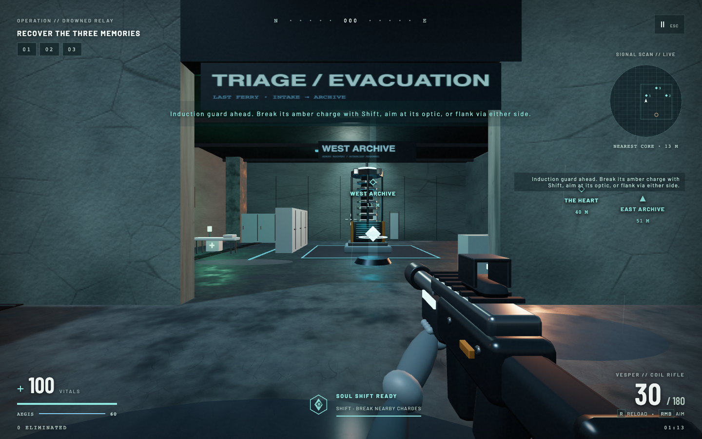
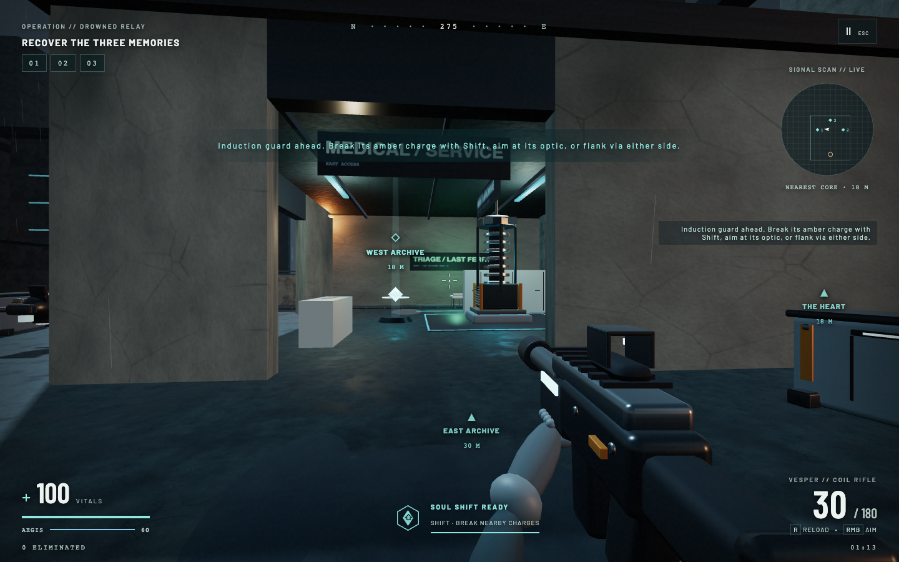
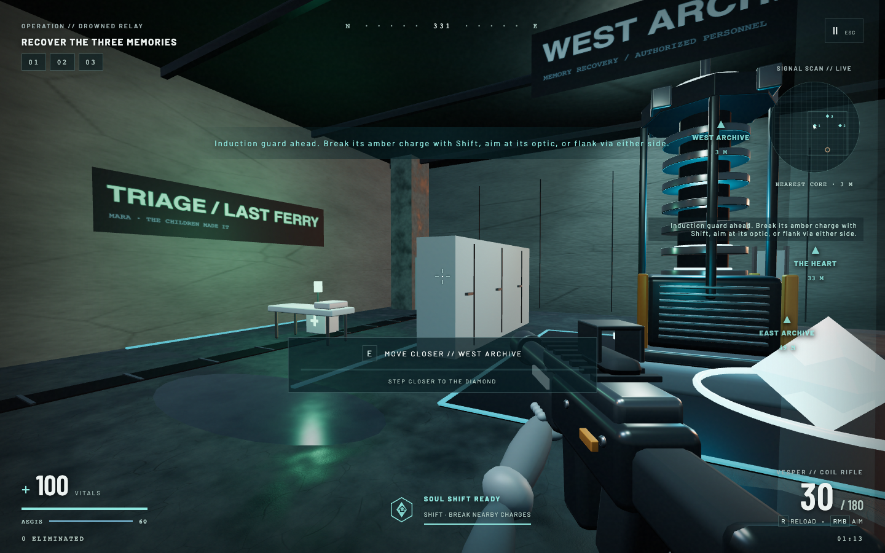
The reviews exposed a medical announcement obscured by the radar at1280, redundant notices, an unclear near-range recovery affordance and expensive repeated navigation sweeps. Parent corrections shorten the medical notice, keep coaching out of the duplicate right feed, update the title to Build15, and show MOVE CLOSER / STEP CLOSER TO THE DIAMOND within4.5m before the original2.8m held recovery range. Attack, recovery and phase timings are unchanged. Direct clearance and waypoint shortcuts now refresh every.15s; A* retains its.8s cadence and2400-node bound. An arranged eight-second pursuit measured52clear calls/6932actual occupancy samples, with a valid doorway crossing. This is a local cost check, not hardware profiling.
Parent fixtures at1280x800 and1440x900 verify the new nearby prompt, no recovery at3.2m, held recovery at2.5m, the notice/radar separation, duplicate-feed removal and reduced sweep cadence. Parent inspected actual frames and the reviewers' Warden motion0/5/9 plus interior captures. These fixes are not a third review and do not imply a rescore. Reviewer1's ordinary recovery failure and missed bay attackers remain evidence of unresolved onboarding/threat-acquisition problems.
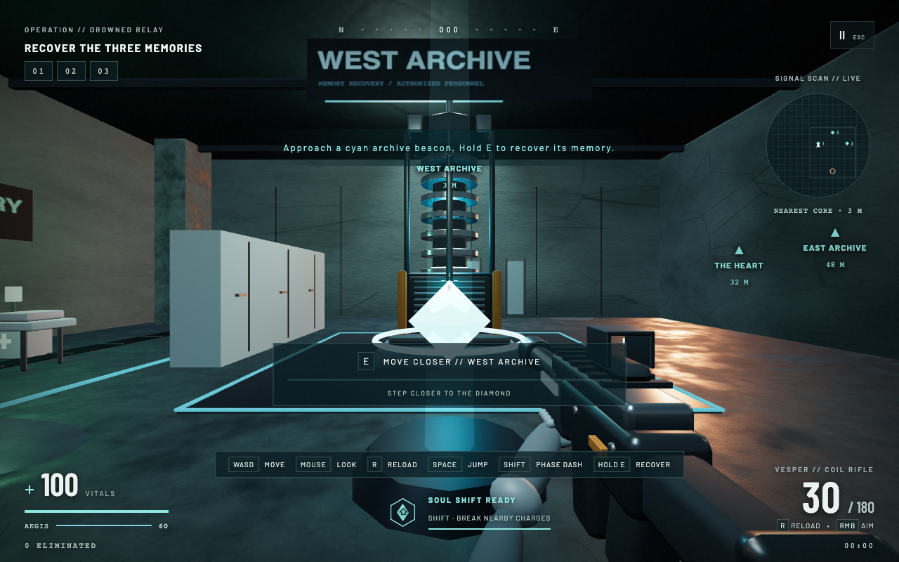
Both are native GPT-6.1 Sol agent judgments, provisional whole-game ratings out of ten. Raw reviews are preserved unchanged below. Reviewer1 used screenshot-guided normal controls; Reviewer2 used explicitly arranged renderer fixtures and ordinary controls. Neither is a blind human participant or a hardware/audio validation.
Whole-game scores (gameplay / presentation / usability / readability / AAA): Reviewer1 5.5 / 7 / 6 / 6 / 3; Reviewer2 6.5 / 6.5 / 6 / 7 / 3.5. Reviewer1 died in both ordinary attempts, reaching the medical bay but recovering no memory; alternate departure was untested. Reviewer2 confirmed local shots/LOS/shelter and moving Warden behavior using arrangements, while noting sparse surfaces and narrow crawler proportions.
{
"reviewer": "reviewer1",
"build": "Build15",
"scope": "Whole-game provisional ratings from two bounded ordinary-input attempts, deployment to west triage bay.",
"ratings": {
"gameplay": 5.5,
"presentation": 7,
"usability": 6,
"levelReadability": 6,
"aaaReadiness": 3
},
"method": {
"browser": "Installed Chrome headless via Playwright, SwiftShader software rendering, 1280x800, ?test=1",
"decisions": "Visible screenshots, UI text, briefing and handbook only. No gameplay coordinates or internal enemy/player data used for decisions.",
"inputs": "Timed ordinary WASD/R/E/Shift keys, mouse click/movement; second attempt used DOM mouse listener events to supply relative look and held fire. No teleport, resource edits or enemy edits.",
"priorKnowledge": "Task identified west medical bay and Mara memory, alternate-route goal. No prior gameplay source knowledge.",
"sourceDisclosure": "Read package.json for Playwright dependency before play. After initial mouse/nav trouble inspected src/game.js lines 145\u2013170 input listeners. After both attempts searched captureState hook in main.js; captured state only after all actions ended.",
"advantagesAndLimits": "Deterministic timed input durations and event injection; screenshots leave elapsed simulation time while inspecting, imposing combat disadvantage. Software renderer cannot certify audio, enjoyment or hardware FPS."
},
"attempts": [
{
"attempt": 1,
"outcome": "Lost at 00:46, 0 eliminations, 0 cores. Reached triage doorway; mouse movement initially turned/pitched unexpectedly and cover blocked forward progress. No shots fired."
},
{
"attempt": 2,
"outcome": "Lost at 00:36, 1 elimination, 1 critical elimination, score 180, 18% accuracy, 0 cores. Fired at visible initial guard, reloaded, navigated around service cover into medical bay. Core visibly read 3m; held E but no memory recovered. Two bay sentinels were announced by UI but not successfully located/engaged on screen. Alternate departure not attempted after death."
}
],
"findings": [
{
"type": "positive",
"detail": "Atmospheric rainy yard, reflections, cyan/amber palette, coherent typography and responsive outcome screens create a strong authored identity."
},
{
"type": "positive",
"detail": "Visible triage signage, west objective marker and a bay entrance made the destination discoverable without source lookup. Briefing and handbook explain recovery, extraction and dash timing."
},
{
"type": "blocker",
"detail": "Core marker and recovery radius were hard to reconcile: visibly at 3m and holding E produced no recovery before death. This session cannot establish whether the player was outside range, obstructed or killed before initiation; needs clearer nearby interaction affordance."
},
{
"type": "blocker",
"detail": "Bay incoming damage was difficult to attribute visually: health fell while camera faced core and UI announced two sentinels, but I did not acquire the attackers. A clearer readable approach/cover-to-threat composition would help."
},
{
"type": "blocker",
"detail": "Initial service cover stopped forward navigation; screenshot inspection and an unintended look adjustment consumed dangerous exposure. This limits fairness conclusions, but demonstrates limited tolerance for a new operator pausing to understand the space."
},
{
"type": "polish",
"detail": "Title screen visibly still says BUILD 09 while this review targets Build15; duplicated tutorial/event text competes with objective labels on right."
}
],
"evidence": [
"docs/media/build15-review1-bay.png",
"docs/media/build15-review1-deploy.png",
"docs/media/build15-review1-encounter.png",
"docs/media/build15-review1-first-outcome.png",
"docs/media/build15-review1-medical-entry.png",
"docs/media/build15-review1-navigation.png",
"docs/media/build15-review1-retry.png",
"docs/media/build15-review1-title.png",
"docs/media/build15-review1-triage.png",
"docs/media/build15-review1-west-approach.png",
"docs/media/build15-review1-west-path.png"
],
"rawFinalCapture": {
"phase": "lost",
"health": 0,
"maxHealth": 100,
"shield": 0,
"maxShield": 60,
"ammo": 30,
"reserve": 158,
"reloading": false,
"reloadProgress": 0,
"kills": 1,
"cores": 0,
"totalCores": 3,
"time": 36.757033333332174,
"dashCooldown": 0,
"objective": "RECOVER THE THREE MEMORIES",
"coreProgress": 0,
"extractionProgress": 0,
"extractionSeconds": 6,
"phaseDodges": 0,
"dashCount": 0,
"phaseInterrupts": 0,
"score": 180,
"enemiesAlive": 4,
"headshots": 1,
"accuracy": 18,
"difficulty": "standard",
"player": {
"x": -23.374450000000017,
"y": 1.7,
"z": -18.09740000000012,
"yaw": 0,
"grounded": true
},
"coreMarkers": [
{
"x": -24,
"z": -15,
"id": 0,
"collected": false,
"distance": 3.159936639000967
},
{
"x": 24,
"z": -15,
"id": 1,
"collected": false,
"distance": 47.47559793791441
},
{
"x": 0,
"z": -33,
"id": 2,
"collected": false,
"distance": 27.720974000970763
}
],
"nearestCoreDistance": 3.159936639000967,
"interaction": "",
"heading": 0,
"exitDistance": 54.377565222824316,
"exit": {
"x": 0,
"z": 31
},
"bounds": {
"minX": -37,
"maxX": 37,
"minZ": -42,
"maxZ": 42
},
"pointerFallback": false
},
"completionClaims": {
"medicalBayEntered": true,
"bayEncounterWon": false,
"maraRecovered": false,
"alternateExitUsed": false,
"wholeMissionCompleted": false
},
"browserClosed": true
}{
"method": "Independent reviewer2. Source informed, explicitly arranged test=1 fixtures and separately labeled ordinary-control attempt. Actual WebGL screenshots on Chrome SwiftShader. No hardware FPS, audio, blind discovery or enjoyment certification.",
"errors": [],
"captures": [
"docs/media/build15-review2-ordinary-control-retry.png",
"docs/media/build15-review2-south-1280.png",
"docs/media/build15-review2-east-1280.png",
"docs/media/build15-review2-interior-1280.png",
"docs/media/build15-review2-south-1440.png",
"docs/media/build15-review2-east-1440.png",
"docs/media/build15-review2-interior-1440.png",
"docs/media/build15-review2-motion-0.png",
"docs/media/build15-review2-motion-1.png",
"docs/media/build15-review2-motion-2.png",
"docs/media/build15-review2-motion-3.png",
"docs/media/build15-review2-motion-4.png",
"docs/media/build15-review2-motion-5.png",
"docs/media/build15-review2-motion-6.png",
"docs/media/build15-review2-motion-7.png",
"docs/media/build15-review2-motion-8.png",
"docs/media/build15-review2-motion-9.png",
"docs/media/build15-review2-corner-0.png",
"docs/media/build15-review2-corner-1.png",
"docs/media/build15-review2-corner-2.png",
"docs/media/build15-review2-corner-3.png",
"docs/media/build15-review2-corner-4.png",
"docs/media/build15-review2-corner-5.png",
"docs/media/build15-review2-corner-6.png",
"docs/media/build15-review2-corner-7.png",
"docs/media/build15-review2-medical-notice-1280.png"
],
"motion": [
{
"position": [
0.037147524616356356,
0,
22.09269627046553
],
"heading": 0.5599999999999998,
"upper": 0.7999999999999999,
"travel": [
0.22959959133564456,
1.4459818281971955
]
},
{
"position": [
0.2707053370551919,
0,
22.285653052103093
],
"heading": 1.1199999999999999,
"upper": 1.5945172414359796,
"travel": [
0.6651393588880206,
0.14993935888802046
]
},
{
"position": [
0.673229386275908,
0,
22.379520798222963
],
"heading": 1.408116576875972,
"upper": 1.6039898012825133,
"travel": [
1.1463160065656708,
0.4985823812027246
]
},
{
"position": [
1.0876840449086642,
0,
22.447545322753463
],
"heading": 1.408116576875967,
"upper": 1.611462628214139,
"travel": [
0.09233376970411289,
0.9185823812027181
]
},
{
"position": [
1.5021387035414224,
0,
22.515569847283963
],
"heading": 1.408116576875961,
"upper": 1.619519422154801,
"travel": [
0.5123337697041088,
1.3385823812027198
]
},
{
"position": [
1.916593362174178,
0,
22.583594371814463
],
"heading": 1.4081165768759543,
"upper": 1.6282302376233224,
"travel": [
0.9323337697040999,
0.284600144341165
]
},
{
"position": [
2.331048020806931,
0,
22.651618896344992
],
"heading": 1.4081165768759512,
"upper": 1.6376765814140342,
"travel": [
1.3523337697040945,
0.7046001443411622
]
},
{
"position": [
2.7455026794396837,
0,
22.719643420875535
],
"heading": 1.4081165768759512,
"upper": 1.6479537988929576,
"travel": [
0.29835153284254057,
1.124600144341164
]
},
{
"position": [
3.1599573380724366,
0,
22.787667945406074
],
"heading": 1.4081165768759514,
"upper": 1.6591740663777106,
"travel": [
0.7183515328425365,
0.07061790747961316
]
},
{
"position": [
3.5744119967051895,
0,
22.855692469936617
],
"heading": 1.4081165768759514,
"upper": 1.6714701708456452,
"travel": [
1.1383515328425329,
0.49061790747960954
]
}
],
"ordinary": {
"phase": "playing",
"health": 100,
"maxHealth": 100,
"shield": 30,
"maxShield": 60,
"ammo": 23,
"reserve": 180,
"reloading": true,
"reloadProgress": 0.31315151515151407,
"kills": 0,
"cores": 0,
"totalCores": 3,
"time": 3.533299999999991,
"dashCooldown": 0,
"objective": "RECOVER THE THREE MEMORIES",
"coreProgress": 0,
"extractionProgress": 0,
"extractionSeconds": 6,
"phaseDodges": 0,
"dashCount": 0,
"phaseInterrupts": 0,
"score": 0,
"enemiesAlive": 1,
"headshots": 0,
"accuracy": 0,
"difficulty": "standard",
"player": {
"x": 0,
"y": 1.7,
"z": 19.817399999999807,
"yaw": 0,
"grounded": true
},
"coreMarkers": [
{
"x": -24,
"z": -15,
"id": 0,
"collected": false,
"distance": 42.28772094544688
},
{
"x": 24,
"z": -15,
"id": 1,
"collected": false,
"distance": 42.28772094544688
},
{
"x": 0,
"z": -33,
"id": 2,
"collected": false,
"distance": 52.81739999999981
}
],
"nearestCoreDistance": 42.28772094544688,
"interaction": "",
"heading": 0,
"exitDistance": 11.182600000000193,
"exit": {
"x": 0,
"z": 31
},
"bounds": {
"minX": -37,
"maxX": 37,
"minZ": -42,
"maxZ": 42
},
"pointerFallback": false
},
"cover": {
"wall": false,
"south": true,
"east": true,
"shotThroughWall": {
"before": 100,
"after": 100
},
"rainLeaks": 0
},
"corner": [
{
"position": [
-8.428317264829587,
0,
-15.760021673771577
],
"heading": -1.5801805853188224,
"queries": 1,
"maxExpanded": 139,
"cost": {
"calls": 120,
"samples": 16072
}
},
{
"position": [
-10.528224797984748,
0,
-15.779728327426627
],
"heading": -1.580180585318826,
"queries": 1,
"maxExpanded": 139,
"cost": {
"calls": 240,
"samples": 30970
}
},
{
"position": [
-12.62813233113991,
0,
-15.799434981081676
],
"heading": -1.5801805853188304,
"queries": 1,
"maxExpanded": 139,
"cost": {
"calls": 360,
"samples": 44611
}
},
{
"position": [
-14.72803986429507,
0,
-15.819141634736804
],
"heading": -1.5801805853188318,
"queries": 1,
"maxExpanded": 139,
"cost": {
"calls": 480,
"samples": 56989
}
},
{
"position": [
-16.827947397450146,
0,
-15.83884828839196
],
"heading": -1.580180585318832,
"queries": 1,
"maxExpanded": 139,
"cost": {
"calls": 600,
"samples": 68110
}
},
{
"position": [
-18.927854930605093,
0,
-15.858554942047114
],
"heading": -1.580180585318832,
"queries": 1,
"maxExpanded": 139,
"cost": {
"calls": 720,
"samples": 77968
}
},
{
"position": [
-21.02776246376004,
0,
-15.878261595702268
],
"heading": -1.580180585318832,
"queries": 1,
"maxExpanded": 139,
"cost": {
"calls": 840,
"samples": 86569
}
},
{
"position": [
-23.12766999691499,
0,
-15.897968249357422
],
"heading": -1.580180585318832,
"queries": 1,
"maxExpanded": 139,
"cost": {
"calls": 960,
"samples": 93907
}
}
],
"reviewer": "independent reviewer2",
"build": "SOULFALL Build15 frozen",
"scoresProvisionalOutOf10": {
"gameplay": 6.5,
"presentation": 6.5,
"usability": 6,
"levelReadability": 7,
"aaaReadiness": 3.5
},
"observations": [
"Actual eye-height rendered south intake and east service entrances inspected at1280x800 and1440x900. Both entrances identify the medical space clearly and frame the cyan archive. Interior has identifiable medical table, partitions/cabinet storage and a roof; no visible interior rain in inspected frames, with zero sampled rain segments beneath shelter ceiling.",
"Arranged wall shot left sentinel health100/100; wall LOSfalse, south/east opening LOStrue. This supports local cover behavior but is not a complete combat or collider certification.",
"Ten sequential actual AI movement renders over2simulationseconds show bounded chassis turn and translation rather than a stationary animation pose. Upper assembly tracks separately; track elements visibly change. Tall heavy torso on very narrow small tracks remains toy-like and weakens mechanical weight.",
"Eight-second straight east-entry Warden sequence crosses doorway without observed wall clipping. This is not a tight-corner test; circular .55m navigation clearance cannot certify all protruding art at corners.",
"One-Warden navigation instrumentation counted960clear calls and93907 theoretical full-ray samples over8simseconds (early returns can reduce real samples). Query count1 includes prior run history; max139expansions. Static occupancy and bounded2400-node heap searches are positive; repeated per-substep swept checks remain scaling cost requiring hardware profiling.",
"Ordinary3s forward/fire/reload attempt demonstrates controls and readable ammo feedback only; no extraction or sustained gameplay completion claim. Source and fixtures supplied strong spatial/encounter advantages. Brief attempt took shield damage before any kill.",
"At1280 medical-notice capture, long top notice extends underneath radar and ends clipped/obscured there; right event feed also occupies a large mid-right area. Ordinary capture contains duplicated Warden coaching in top banner, event feed and bottom charge panel. This competes with scenery/targets and objective markers.",
"Concrete AAA blockers: sparse broad interior planes with few authored props, repetitive wall finish, simplified weapon/glove and enemy material/form language, narrow crawler proportions, and simultaneous overlapping/coaching UI. Attractive cyan/amber wet-night lighting and clear objectives support a polished small prototype rather than AAA readiness."
],
"limitations": [
"Chrome SwiftShader software rendering cannot certify hardware FPS, audio mix, human enjoyment or blind discovery.",
"Most evidence uses frozen requestAnimationFrame plus explicit simulation/camera fixtures. HUD distance/compass may reflect original player where only camera was arranged; do not read fixture HUD distances as navigation defects.",
"First harness stalled because its frozen RAF readiness poll used default RAF; corrected to50ms polling and reran. Both ordinary captures retained unchanged. No gameplay/source edits.",
"No third reviewer or subagent was used."
]
}Focused medical fixture tests all three enemy types entering and leaving through both openings: 12 successful crossings with no grounded collision penetration. It also checks both opening sightlines, sealed-wall LOS and swept projectile blocking, three recovery/extraction routes, spawn clearance and zero rain streaks beneath the canopy. These arrangements are narrow correctness checks, not proof against every corner or multi-enemy deadlock. Warden visual overhangs still exceed its simplified grounded footprint.
Measured medical GLB: 42,476 bytes. Sampled whole-scene calls/triangles: 117/67,500, 91/55,844, 80/50,850. Software WebGL render counters depend on view/quality and are not hardware FPS measurements.
Sequential regression ledger records development/production subpath smoke, combat, phase/usability, encounters, mission, playtest, standalone/browser movement, Warden art/locomotion/steering and normal-input controller. Controller final phase: won, 3 memories, 13 kills, health 100, shield 60. Exact enemy/collider information and routing/aim calculations are advantages; actions use normal listeners. Script exit status alone was not used as victory evidence. A final one-line cleanup also removed the duplicated opening phase briefing from the right feed; focused UI fixtures plus development smoke, production-subpath smoke and mission checks passed afterward (build15-final-ui-checks.json). Full controller result.
Initial verification overlapped final asset/source refinement; Vite hot reload destroyed the steering/controller browser contexts. Those interrupted attempts are retained in the initial ledger. The final pass ran against frozen implementation. No audio work or listening was performed; software screenshots cannot certify hardware performance, enjoyment, accessibility coverage or blind discovery. Two routes add meaningful spatial contrast, but the small roster, compact mission, simplified manufactured surfaces and limited encounter variety still keep this far from AAA readiness. The quality mission remains open.
The two Build13 reviewers found that the new tracks still snapped to each requested travel direction. The parent corrected this concrete finding: the undercarriage now turns at up to 2.8 radians per second, slows translation during sharp pivots, and reverses its drive for retreats instead of instantly swivelling through 180 degrees. The upper assembly tracks the player at up to 4 radians per second while the base can remain planted. These are grounded machine motions; no camera shake or extra view motion was added.
Steering changes the travel vector before the existing collision solver runs. Track links and rollers still advance from resolved displacement and differential pivot travel, so a blocked straight drive does not run a cosmetic treadmill. Fixed optic anchor, shot volumes, original authored shutter cant, material ownership, fallback, health, damage and combat timings are preserved. This is a bounded kinematic mechanism, with the existing axis-based collision response and no suspension/load simulation; it is not a production robotics model.
Eight arranged actual WebGL frames and 96 AI samples test a sharp side request over 0.8 simulated seconds. Maximum sampled base turn was 0.02334 radians per 1/120-second update, upper turn 0.03334, with negligible sideways travel in this unobstructed arrangement. The base reached 1.592 radians and travelled approximately one metre. A separate stationary arrangement turns the upper assembly through 45 degrees with unchanged base position and zero belt advance. Pure checks cover reversing and the angular wrap; existing locomotion checks still cover blocking, stagger, recovery, stopping, restart, time subdivision, ground contact and shared geometry. The parent inspected frames 0, 3 and 7; these fixed-frame samples do not establish human perception of motion quality.
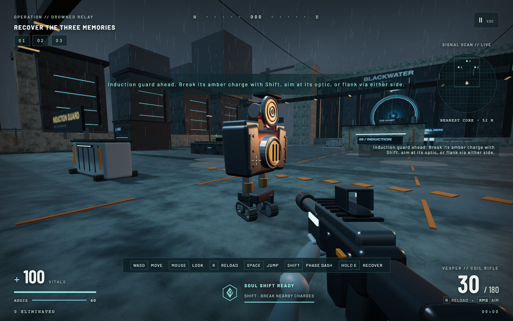
Check ledger: steering, locomotion, Warden art/alignment/fallback, combat, phase, phase usability, finite encounters and playtest regressions passed. Development and production-subpath smoke each passed 14 checks. The advantaged normal-input mission controller recovered all three memories and extracted with 12 kills, one enemy remaining, 100 health/60 shield, 62% accuracy and no browser exceptions at 50.42 simulated seconds. Elimination is optional; extraction still works without clearing every enemy. Exact enemy/collision observations and automated aiming/navigation/timing advantage this controller. It is not a human enjoyment, balance or natural discovery study.
No new independent ratings: this small parent followup addresses the existing reviews; the retained Build13 judgments precede it. Human enjoyment, audio listening and hardware performance remain unvalidated. Clean simplified surfaces, the small roster and repeated courtyard encounters remain significant quality limits. The next substantive pass will give the west medical archive a distinct space and tactical route, followed by two fresh independent reviews. The overall quality mission remains open.
The previous Warden slid on rigid skids. This pass replaces them with an original Blender-authored twin-track carriage: 64 circulating shoes, four rotating rollers, suspension columns and bearing rails. A swivel beneath the fixed induction chassis lets the crawler follow the resolved travel direction while the guarded optic faces the player. This is mechanical ground locomotion, not a decorative chassis bob. No downloaded or branded assets were used. The reproducible source remains tools/build_warden.py, with the authored .blend, GLB and provenance in public/assets.
Animation now runs after collision-resolved enemy movement and on the stagger return path. Actual horizontal displacement advances the belt; actual angular change contributes opposite left/right travel. The belt phase wraps by belt perimeter, while wheel phase wraps independently by wheel circumference. Stopped, blocked and staggered travel produces no treadmill motion; restart creates fresh phases. Charge slows travel through the existing movement logic, without adding unmotivated recoil. Functional treads, shutters and fan remain with reduced motion; no new camera motion or body bob was added. Pause freezes simulation. Equal straight travel at different simulation steps produces the same phase; abrupt AI steering still changes carriage heading immediately and remains a prototype limitation, especially on reversal. It is not a physically simulated tracked drivetrain.
The fixed optic stays at local (0,2,.3), with .24m precision radius. Standard health150, damage82 precision/17 armored/34 open, cooldowns, charge, phase protection, stagger and opening windows remain unchanged. The authored shutter cant and attached insets are preserved. Body shots still raycast authored surfaces including instanced links; fallback loads if the GLB fails. Upper geometry is unchanged, both bypass lanes and finite encounters remain. Track envelope measures .44516m radius inside the existing .45m navigation radius; low contact is .00069m above ground in the sampled pose. Existing upper shoulders still overhang the navigation footprint, as before; this is not an exhaustive cover-seam certification.
Measured cost: final source asset19,440 triangles/13 mesh primitives and6 materials; runtime14 draws/primitives and43,128 triangles per Warden after the single authored shoe becomes64 instances in two belt draws. Mesh geometries remain shared across enemy clones; materials and instance buffers belong to each enemy. Kill, restart and disposal now release instance buffers without deleting shared geometry. The new budget ceiling checks rendered instance triangle cost, not just unique geometry. This is a deliberate increase over seven primitives; no hardware frame-rate claim follows from software WebGL.
Exactly two native GPT-6.1 Sol agents reviewed frozen source. Combat review: visible CHARGING cue, normal W+Shift break and paused screenshot-guided ADS followup gave one critical kill,4rounds,50%accuracy and full health/shield. The correct WARDEN feed remained. An attempted orbit had a camera-sign error; only its first two oblique motion views were useful. Prior phase knowledge, automated visible-cue reaction and paused aiming advantage the result. No teleport, placement or resource edits were used for that control review.
Motion review: independently inspected actual changing close side renders, turning, blocked movement, stagger and recovery, with explicit arranged test=1 fixtures. Treads and rollers visibly advance and stop. This reviewer found a floating support gap, a roller phase jump at belt wrap, and missing instance-buffer disposal. Both reviewers retained their provisional whole-game scores: combat gameplay7.5/presentation8/usability8/readability7.5/AAA readiness2.5; motion7.5/7.5/8/7.5/2.5, each out of10. No rescore was requested or inferred.
Parent fixes after raw review: added authored bearing rails joining the bridge to roller supports; separated wheel phase from wrapped belt phase; disposed per-instance buffers on cleanup. Also fixed the pre-existing shutter animation overwriting its authored ±.12rad cant: motion now adds to the authored rotation, retaining silhouette and the original .7m shoulder shot fixture. The initial .6m diagnostic fixture was restored to .7m. Focused final checks verify the wheel seam, two instance-dispose events with zero shared geometry disposal, all movement-state anchors and the original17/34/82/0 shot outcomes plus17 armored damage on the visible crawler. These fixes are parent validation, not a third review or an implied new rating.
The parent reran the close side sequence after fixes: final arranged motion observations. Advancing move0/3/5, turning and stagger captures were inspected. Bearing rails now bridge the former gap and spokes advance continuously across the belt seam. The sampled high-quality close view reports93 renderer calls/93,432 triangles for the entire scene, not a hardware performance benchmark.
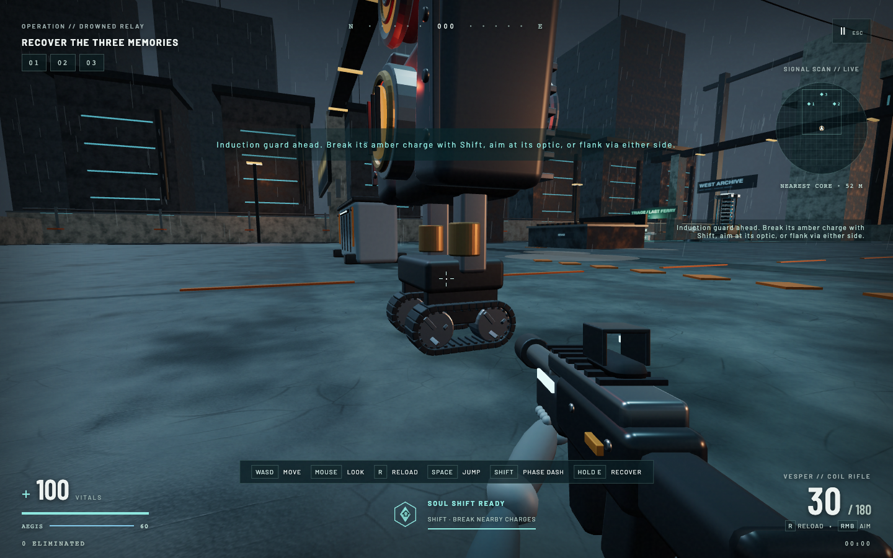
Sequential check ledger covers development and production-subpath smoke, combat, phase, phase-usability, encounters, mission, playtest, standalone/browser movement, art and locomotion checks, followed by the exact-information normal-input controller. Final art checks include14 poses at two sizes, fallback, clone ownership and visible damage. Final locomotion checks cover move/blocked/stagger/recovery/turn/stop/restart, dt subdivision, fixed target, ground clearance and geometry sharing. Reusable checks write current-* artifacts; retained Build12 and raw Build13 reviews are unchanged.
The parent initial arranged sequence reached the6m stop distance after two advancing frames; it was insufficient as a sustained motion sample. The final rerun uses a farther fixture, captures eight advancing frames and retains the first sequence separately. Reviewers also supplied independent normal and arranged moving renders. Installed Chrome/Playwright actual Three/WebGL is the established fallback after earlier shared-preview snapshot failures. Arranged captures and exact-information automation are correctness evidence, not natural human play or enjoyment.
The advantaged exact-information controller finished in phase won with 3 memories, 13 kills, 100 health/60 shield and 70% accuracy at 52.03 simulated seconds. It observes exact enemy/collider information but acts through normal input listeners. This demonstrates automated completion, not natural play or enjoyment. Controller evidence.
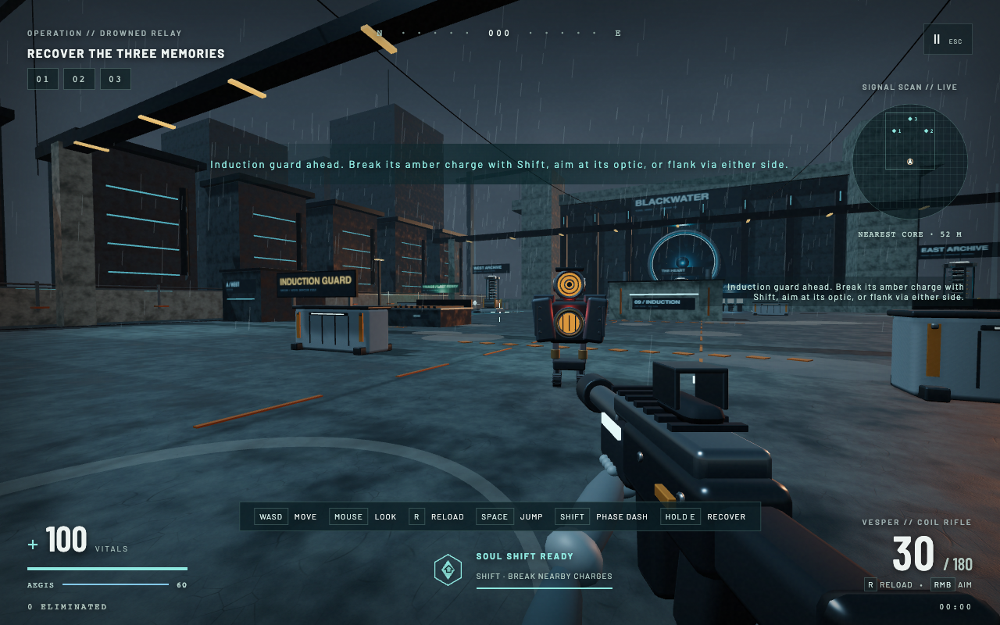
Quality limits: instantaneous steering, clean simple manufactured surfaces, simplified remaining enemies, one shared courtyard and limited content still bound presentation and depth. Normal human discovery, sustained enjoyment, audio listening, accessibility coverage and target-hardware performance remain unvalidated. This advances the ongoing mission; it does not establish perfect,10/10 or AAA-ready quality.
{
"reviewer": "Independent native GPT-6.1 Sol visible-cue combat reviewer; agent assessment, not a human participant",
"build": "Build13 source frozen during review: original twin-track Warden",
"ratings": {
"prototypeGameplayOverall": 7.5,
"presentation": 8,
"usability": 8,
"levelReadability": 7.5,
"aaaProductionReadiness": 2.5,
"scaleMaximum": 10,
"provisional": true,
"reason": "The mechanism fixes a concrete sliding-skid defect without changing the established readable induction identity. This is a credible local improvement, but the normal-control sequence offers no new evidence of broader mission enjoyment, richer content, human discovery or production readiness. Same whole-game scores as prior combat review remain appropriate."
},
"methods": [
"Installed Chrome/Playwright actual Three/WebGL at1280x800, software rendering; established fallback after earlier shared-preview failures. Gameplay source remained frozen. No code changes by reviewer.",
"Used ?test=1 solely to sample captureState after actions for reporting. No teleport, placement, enemy deletion, resource edits, internal aim, exact positions or windup reads for decisions; keyboard/mouse listeners and deploy/resume clicks only.",
"Opening attempt waited for exact visible CHARGING DOM text; automated reaction and previous Build12 mechanic knowledge are advantages. W+Shift, release W after250ms, screenshot then pause. Inspected cyan opened armor/optic image and reused learned50pixel upward mouse correction, resumed, RMB180ms then LMB450ms, captured and paused.",
"Separate fresh normal deployment held W350ms then three D250ms strafes with90pixel horizontal mouse movements. Four live-render screenshots were captured and inspected. The mouse sign moved the camera away from the Warden: useful first two oblique ground-motion views, partial third and off-screen fourth. This is a failed full orbit, not evidence of a completed walk-around or side/rear validation.",
"Screenshot capture delays advance simulation; screenshots and later state sample time may differ. Browser closed after evidence collection. No hardware frame-rate, audio listening, human comfort or enjoyment assessment."
],
"observations": [
{
"label": "attempt1-break",
"state": {
"phase": "paused",
"health": 100,
"maxHealth": 100,
"shield": 60,
"maxShield": 60,
"ammo": 30,
"reserve": 180,
"reloading": false,
"reloadProgress": 0,
"kills": 0,
"cores": 0,
"totalCores": 3,
"time": 3.3499999999999908,
"dashCooldown": 3.6999999999999784,
"objective": "RECOVER THE THREE MEMORIES",
"coreProgress": 0,
"extractionProgress": 0,
"extractionSeconds": 6,
"phaseDodges": 0,
"dashCount": 1,
"phaseInterrupts": 1,
"score": 0,
"enemiesAlive": 1,
"headshots": 0,
"accuracy": 0,
"difficulty": "standard",
"player": {
"x": 0,
"y": 1.7,
"z": 28.463399999999996,
"yaw": 0,
"grounded": true
},
"coreMarkers": [
{
"x": -24,
"z": -15,
"id": 0,
"collected": false,
"distance": 49.64944248992127
},
{
"x": 24,
"z": -15,
"id": 1,
"collected": false,
"distance": 49.64944248992127
},
{
"x": 0,
"z": -33,
"id": 2,
"collected": false,
"distance": 61.46339999999999
}
],
"nearestCoreDistance": 49.64944248992127,
"interaction": "",
"heading": 0,
"exitDistance": 2.5366000000000035,
"exit": {
"x": 0,
"z": 31
},
"bounds": {
"minX": -37,
"maxX": 37,
"minZ": -42,
"maxZ": 42
},
"pointerFallback": false
}
},
{
"label": "attempt1-followup",
"state": {
"phase": "paused",
"health": 100,
"maxHealth": 100,
"shield": 60,
"maxShield": 60,
"ammo": 26,
"reserve": 180,
"reloading": false,
"reloadProgress": 0,
"kills": 1,
"cores": 0,
"totalCores": 3,
"time": 4.649800000000016,
"dashCooldown": 2.4001999999999835,
"objective": "RECOVER THE THREE MEMORIES",
"coreProgress": 0,
"extractionProgress": 0,
"extractionSeconds": 6,
"phaseDodges": 0,
"dashCount": 1,
"phaseInterrupts": 1,
"score": 180,
"enemiesAlive": 0,
"headshots": 1,
"accuracy": 50,
"difficulty": "standard",
"player": {
"x": 0,
"y": 1.7,
"z": 28.463399999999996,
"yaw": 0,
"grounded": true
},
"coreMarkers": [
{
"x": -24,
"z": -15,
"id": 0,
"collected": false,
"distance": 49.64944248992127
},
{
"x": 24,
"z": -15,
"id": 1,
"collected": false,
"distance": 49.64944248992127
},
{
"x": 0,
"z": -33,
"id": 2,
"collected": false,
"distance": 61.46339999999999
}
],
"nearestCoreDistance": 49.64944248992127,
"interaction": "",
"heading": 0,
"exitDistance": 2.5366000000000035,
"exit": {
"x": 0,
"z": 31
},
"bounds": {
"minX": -37,
"maxX": 37,
"minZ": -42,
"maxZ": 42
},
"pointerFallback": false
}
},
{
"label": "motion-turn3",
"state": {
"phase": "paused",
"health": 100,
"maxHealth": 100,
"shield": 60,
"maxShield": 60,
"ammo": 30,
"reserve": 180,
"reloading": false,
"reloadProgress": 0,
"kills": 0,
"cores": 0,
"totalCores": 3,
"time": 3.6831999999999896,
"dashCooldown": 0,
"objective": "RECOVER THE THREE MEMORIES",
"coreProgress": 0,
"extractionProgress": 0,
"extractionSeconds": 6,
"phaseDodges": 0,
"dashCount": 0,
"phaseInterrupts": 0,
"score": 0,
"enemiesAlive": 1,
"headshots": 0,
"accuracy": 0,
"difficulty": "standard",
"player": {
"x": 4.253777584917883,
"y": 1.7,
"z": 30.457398883760217,
"yaw": -0.54,
"grounded": true
},
"coreMarkers": [
{
"x": -24,
"z": -15,
"id": 0,
"collected": false,
"distance": 53.522435119259036
},
{
"x": 24,
"z": -15,
"id": 1,
"collected": false,
"distance": 49.56095653781488
},
{
"x": 0,
"z": -33,
"id": 2,
"collected": false,
"distance": 63.59981208175542
}
],
"nearestCoreDistance": 49.56095653781488,
"interaction": "",
"heading": 30.939720937064465,
"exitDistance": 4.288244362591115,
"exit": {
"x": 0,
"z": 31
},
"bounds": {
"minX": -37,
"maxX": 37,
"minZ": -42,
"maxZ": 42
},
"pointerFallback": false
}
}
],
"verifiedImprovements": [
"Visible-cue opening produced1dash/1phaseInterrupt, cyan open state and fixed guarded optic in front of the rifle. Followup ADS fire yielded1critical elimination,4rounds consumed,50%accuracy,100health/60shield. It used a paused screenshot-guided aim correction and cannot establish blind learnability.",
"Kill feed correctly says WARDEN // CRITICAL +180, preserving the Build12 identity repair.",
"Normal movement images show two compact segmented crawlers replacing long rigid skids; the first oblique turn view reveals changed track aspect while the torso/optic face the player. Target remained readable until my camera error lost it. No visible detached shutter or drifting optic in inspected images.",
"Source inspection confirms belt phase derives from final displacement/turn and updateEnemies calls animation after resolved movement and also on stagger early-return. No elapsed-time belt treadmill or decorative chassis bob was added."
],
"findings": [
{
"severity": "remaining presentation limitation",
"area": "Crawler turn actuation",
"finding": "Carriage heading is assigned immediately from atan2 of resolved displacement; upper AI heading is immediate as well. The design still lacks steering acceleration, loaded suspension or an authored pivot transition, so abrupt obstacle turns can mechanically snap. The normal strafe views do not prove severe snapping, but source establishes the missing inertia.",
"recommendation": "Treat smooth motivated steering/pivot transitions as a future quality improvement, with side-view hard-turn evidence; do not claim production locomotion fidelity."
},
{
"severity": "evidence limit",
"area": "Normal-motion review coverage",
"finding": "My attempted normal orbit used the wrong mouse sign and lost the Warden. First two frames show motion/turn readability; this run does not independently certify close side/rear contact or roller motion.",
"recommendation": "Use the second arranged motion reviewer for close side ground-contact and roller inspection, explicitly preserving the distinction."
},
{
"severity": "remaining whole-game blocker",
"area": "Scope and validation",
"finding": "One arena, clean simplified surfaces, small enemy roster and existing HUD density remain. No independent human full mission, audio or hardware performance validation occurred.",
"recommendation": "Collect target-player and hardware evidence before claiming broader gameplay or AAA readiness gains."
}
],
"limitations": [
"Opening used visible DOM cue timing, prior knowledge and paused screenshot-guided aim.",
"No full mission or alternate-tactic balance pass in this independent review.",
"Four motion captures are temporal sparse samples of real running simulation, not a frame-rate/video quality assessment.",
"No forced10/10 or perfect/AAA claim."
],
"errors": [],
"screenshots": [
"docs/media/build13-combat-attempt1-break.png",
"docs/media/build13-combat-attempt1-followup.png",
"docs/media/build13-combat-motion-front.png",
"docs/media/build13-combat-motion-turn1.png",
"docs/media/build13-combat-motion-turn2.png",
"docs/media/build13-combat-motion-turn3.png"
],
"rawObservations": "docs/quality-reviews/build13-combat-observations.json",
"driver": "docs/quality-reviews/build13-combat-driver.mjs"
}
{
"reviewer": "Second independent native GPT-6.1 Sol reviewer; arranged moving WebGL inspection and source ownership audit, not human feedback",
"build": "Build13 source-frozen crawler before parent followup fixes; no gameplay/source changes by reviewer",
"ratings": {
"prototypeGameplayOverall": 7.5,
"presentation": 7.5,
"usability": 8,
"levelReadability": 7.5,
"aaaProductionReadiness": 2.5,
"scaleMaximum": 10,
"provisional": true,
"reason": "The crawler replaces rigid sliding skids with visibly circulating tread links and turning rollers. This is a concrete motion improvement. Floating support gap, roller phase discontinuity and instantaneous heading changes still limit mechanical credibility, while whole-game depth/content/readability and human validation remain bounded by the same prototype. Keeping the whole-game ratings is appropriate; a motion improvement alone does not establish a stronger whole-game enjoyment or production readiness claim."
},
"methods": [
"Read src/warden.js, game update/shot/material/disposal code, tools/build_warden.py and immutable Build12 visual review. Source held fixed; reviewer wrote only new review driver/evidence.",
"Used installed Chrome headless/Playwright with actual Three/WebGL SwiftShader, the established fallback after earlier shared-preview snapshot failures. Waited until separate normal-control reviewer closed its browser; browser closed after this sequence.",
"All own captures use explicit test=1 arrangements, controlled RAF, direct simulation of six 1/60s AI steps between frames, player placement, high-quality setting and a close following camera. This is assisted correctness/art inspection, not normal controls or player skill.",
"Inspected rendered move0, move1, move3, move5, turn, blocked, stagger and recovery images. Moving frames include changing ground landmarks and roller spokes/treads, rather than one static pose. Captured ten screenshots total.",
"Blocked fixture deliberately replaces moveEntity with a no-op for six steps; stagger fixture sets .8s stagger/3s armor-open and recovery clears stagger. These distinguish actual displacement from requested motion but are not exhaustive real-cover navigation tests.",
"Additional arranged pure-transform .01m advances cross a belt loop seam and record roller angular discontinuity. Source ownership finding checked against installed Three WebGLObjects.js/InstancedMesh.js disposal implementation.",
"Precision anchor measured in all ten own poses; game combat numbers and fallback path audited in source. No independent full mission or new damage/fallback suite performed by this reviewer."
],
"verifiedImprovements": [
"Six advancing close-side frames move enemy z from22.21 to23.26m while belt phase rises .21m per frame. Tread links and roller spokes visibly change; prior rigid skid sliding is materially improved.",
"At turn, the carriage follows resolved travel direction and left/right track phases diverge. Blocked and stagger snapshots preserve both position and phases; recovery resumes travel. This agrees with postcollision animation placement and explicit stagger-path update.",
"All ten measured local precision anchors remain (0,2,0.300000012). Upper optic stays outside the crawler swivel; source keeps .24m precision radius,150 Standard health and82/17/34 precision/closed/open damage.",
"Ground-aligned first measured tread AABB minimum is approximately .000506m; no deep ground penetration was visible in these arranged flat-floor frames. This does not exhaust all phases, rotations or cover seams.",
"Instanced shoes share authored geometry across both belts and template clones; per-enemy materials remain distinct. Motion adds two belt draw primitives plus four rollers rather than64 individual shoe draw calls.",
"Own whole-scene close captures recorded92 render calls and93056 triangles; these are scene-specific renderer counters under software graphics, not a hardware-performance benchmark or an isolated asset triangle budget.",
"No uncaught page exceptions in this reviewer run. Amber/cyan state remains readable; stagger opening retains target position. Main pause path does not advance simulation; reduced-motion setting receives no new decorative chassis bob."
],
"findings": [
{
"severity": "medium mechanical attachment",
"finding": "Close side and front turn renders show the upper TrackBridge floating above the crawler belts with no visible axle/load support. Authored bridge bottom is .34m and tread envelope top approximately .2775m, leaving roughly .0625m open air. The two columns end in the bridge and do not support roller axles.",
"recommendation": "Author a compact shared bogie/axle/load carrier joining the swivel track mechanism to the bridge; retain .45m ground footprint and shared clone geometry.",
"evidence": [
"docs/media/build13-visual-move1.png",
"docs/media/build13-visual-turn.png"
],
"status": "reported to parent; raw review precedes followup"
},
{
"severity": "medium motion continuity",
"finding": "Roller angle derives from belt phase modulo the1.473982m belt perimeter. Crossing the seam with .01m advance changes recorded roller angle12.25 to .050148rad; modulo2pi this is about .3665rad forward instead of .08333rad, a ~.2832rad (16.2degree) discontinuity. Belt position itself loops correctly.",
"recommendation": "Integrate roller angle independently by distance/radius and wrap it modulo2pi; add a seam-crossing angular-continuity check.",
"evidence": "docs/quality-reviews/build13-visual-observations.json:wrap",
"status": "reported to parent; raw review precedes followup"
},
{
"severity": "medium resource ownership",
"finding": "New InstancedMesh belts allocate per-instance GPU attribute buffers. kill/restart cleanup traverses geometry/material only and skips shared geometry, but does not dispatch InstancedMesh.dispose(). Installed Three WebGLObjects releases instanceMatrix/instanceColor attributes specifically on that event, so repeated encounters/restarts can retain instance buffers.",
"recommendation": "Dispose each enemy-owned InstancedMesh on kill/restart and game disposal while preserving shared shoe geometry. Add a meaningful lifecycle-dispatch/shared-geometry check.",
"status": "reported to parent; source audit, not measured GPU-memory growth"
},
{
"severity": "remaining motion limitation",
"finding": "Carriage heading is assigned directly from final displacement atan2, with no steering angular-speed bound. The arranged turn changes base heading about1.128rad in one update when the travel direction changes. This avoids persistent sideways crawling but still produces abrupt mechanical yaw rather than an eased maneuver; retreat can request a180degree carriage reversal.",
"recommendation": "Retain as an explicit prototype limitation or implement bounded steering with movement that respects heading. Do not hide the discontinuity with unrelated bobbing.",
"status": "remaining quality gap"
},
{
"severity": "parent-discovered authored pose issue",
"finding": "Parent independently identified that animateWarden overwrites authored shutter cant with rotation.z=0 at closed pose. Reviewer source confirms assignment lacks a stored home rotation; this was not independently diagnosed from own frames. Parent plans restoring base rotation plus actuation and restoring the .7m shoulder hit regression.",
"recommendation": "Preserve authored home orientation when adding shutter actuation; rerun visible armor shots after correction.",
"status": "parent finding disclosed, not claimed as independent discovery"
},
{
"severity": "remaining whole-game limits",
"finding": "Large clean armor slabs, small chassis beneath broad upper mass, two bright circular facial/chest motifs and a single shared courtyard retain a stylized prototype character. Physical charge compression remains modest and relies on color/HUD cues. Human perception, sustained enjoyment, audio and hardware performance remain unvalidated.",
"recommendation": "Prioritize human-visible cue/handling feedback and broader authored content before any AAA-readiness or perfect-game claim.",
"status": "remaining quality gap"
}
],
"rawObservations": "docs/quality-reviews/build13-visual-observations.json",
"driver": "docs/quality-reviews/build13-visual-driver.mjs",
"screenshots": [
"docs/media/build13-visual-move0.png",
"docs/media/build13-visual-move1.png",
"docs/media/build13-visual-move2.png",
"docs/media/build13-visual-move3.png",
"docs/media/build13-visual-move4.png",
"docs/media/build13-visual-move5.png",
"docs/media/build13-visual-turn.png",
"docs/media/build13-visual-blocked.png",
"docs/media/build13-visual-stagger.png",
"docs/media/build13-visual-recovery.png"
],
"errors": [],
"limitations": [
"All own new evidence is explicitly arranged; separate reviewer covers normal-control visible-cue opening. No human/blind-discovery, enjoyment, full-mission balance or accessibility validation.",
"Sequence samples actual rendered motion in .1s increments. It is not a frame-rate video or hardware performance measurement; intervening exact temporal perception is not human-tested.",
"Mesh AABB ground observation is the initial computed bounding box; not a sweep of every shoe phase. Parent locomotion audit covers its distinct focused fixtures.",
"Own close camera crops the upper optic in several side frames; invariance is measured numerically there, and prior/full-body captures provide the broader silhouette.",
"Raw review describes frozen implementation before fixes. Parent postreview fixes/retests must be identified separately, with no implied independent rescore."
]
}
The ingress and relay Warden now load an original Blender machine instead of a sentinel sphere with added slabs, torus and floating upper sphere. A chamfered gunmetal chassis, guided armor shutters, steel gimbal/bezel, recessed iris, lower actuators, grounded skids and rear heat-sink/fan form one industrial assembly. Brass is reserved for winding, actuator and small mechanical details. This is procedural original art, not photogrammetry or AAA production art. First close inspections caught a flat optic and unsupported floating skids; iris depth and full lower struts corrected those before review.
Reproduce with /Applications/Blender.app/Contents/MacOS/Blender --background --python tools/build_warden.py from the repository root. Blender source · GLB · measured provenance. All geometry is authored in the retained script; no downloaded models, borrowed branded designs, textures or sound samples. Previous Blender sources are preserved; no backup .blend1 ships. Export: 15,484 triangles, seven mesh/material primitives, six materials, about 912 KiB GLB. No surface maps were required for this bounded PBR pass. Geometry is shared between runtime clones; materials are independently owned for state and disposal.
Coordinates remain meters: Blender Z-up and -Y forward export to Three Y-up and +Z forward. Group origin stays at feet/ground zero, main body around y1.3 and named WeakpointAnchor at (0,2,+0.3). The optic is fixed while shutters compress slightly during charge, slide outward/back and relax during the three-second armor opening, then ease closed. A small rear fan accelerates under charge. Authored emitter material receives existing bounded amber/cyan and hit flash; the duplicate shoulders/ring/upper sphere are never added on the authored path. Loading failure retains the earlier combat fallback.
No health, damage, precision radius or movement/phase rule was changed: Standard health150, armored/open body17/34, optic82, precision radius0.24m, stagger0.8s, opening3s, dash protection0.4s and cooldown4.5s. The named anchor is verified against the existing logical target through every state; no hit volume was enlarged. The measured sampled local width is about1.50m, within the old1.74m shoulder envelope; its y extent is0.015–2.3225m and depth about1.064m. The sampled near-cover arrangement showed no overlap. Rotated visual parts can still extend beyond the small ground-navigation footprint. Grounded enemy navigation remains separate from player height-aware movement; finite encounter route connectivity and ordinary mission completion still pass. Environment collision/navigation still use their existing conservative ground footprints rather than full moving enemy meshes, so cover interactions remain a limitation.
Installed Chrome/Playwright rendered explicit ?test=1 arrangements at1280×800 and1440×900: hip, ADS, close, charge, stagger, open and recovered. The retained art/runtime checks verify actual GLB triangle/primitive budget, no duplicate visible fallback, unchanged fixed precision anchor in14 poses, opening/recovery interpolation, bounded emission, shared clone geometry and independent materials. npm run test:warden reproduces the checks and writes current captures. These fixtures expose instrumentation and controlled frames; they do not certify human enjoyment, audio quality or hardware performance.
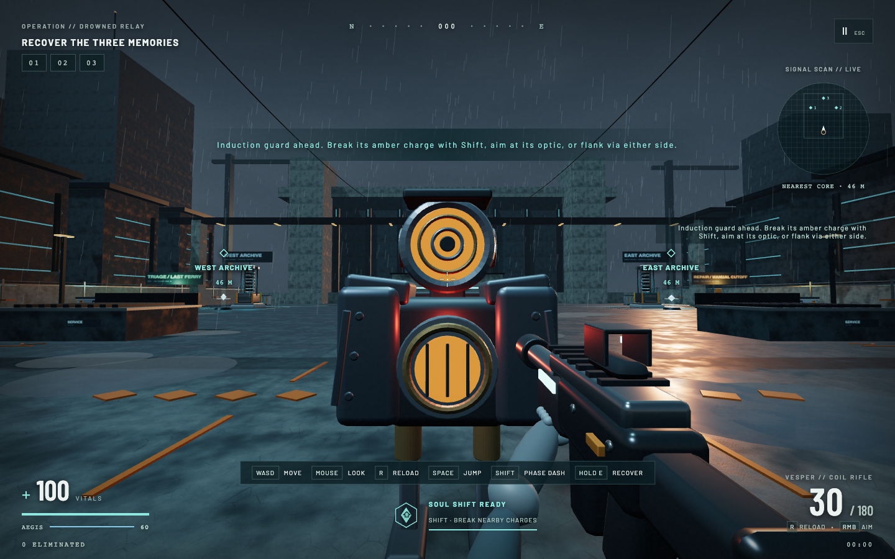
Exactly two fresh native GPT-6.1 Sol reviewers played/inspected source-stable Build12. The visible-cue combat reviewer rates OVERALL gameplay7.5, presentation8, usability8, readability7.5 and AAA readiness2.5/10. The visual/state/layout reviewer rates7.5/7.5/8/7.5 and2.5 respectively. These provisional judgments disagree modestly on presentation; neither is an asset-only score presented as overall perfection. No10/10 is claimed. Raw reports and captures remain unchanged.
The combat reviewer completed two normal-input visible-cue break-to-critical-kill approaches at100health/60shield: first a paused screenshot-guided ADS followup,5rounds and40%accuracy; second a continuous learned hip-fire followup,4rounds and50%accuracy. It reacted automatically to visible CHARGING text, used prior mechanic knowledge and a learned mouse correction; no enemy arrangement, exact-position/windup reads or resource edits. This establishes an available followup, not blind human discovery. The visual reviewer inspected14 parent poses and10 independent low/high, side, rear and near-cover arrangements at both sizes. The sampled adjacent-cover fixture had no overlap; this is not exhaustive navigation or hardware certification.
After both reviews finished, the parent fixed three bounded findings without commissioning new scores: edge trim now belongs to each moving shutter instead of remaining suspended on the static brass mesh; the kill feed names WARDEN/INTERCEPTOR correctly; and authored Warden BODY hits use actual model triangle intersections. The visual reviewer traced visible shoulder edges outside the old0.68m body sphere. The mesh correction removes those visible misses and also removes empty-space sphere-only hits between the lower struts. This is a demonstrated target-alignment correction, not a larger precision target or health/damage reduction. The fixed0.24m precision sphere still takes82 and body still takes17/34. All other enemy body logic and world occlusion remain unchanged. New exact-aim/zero-spread fixtures verify shoulder17, open shoulder34, optic82 and empty gap0; these are explicitly advantaged correctness arrangements, not normal combat performance. Missing-asset request-abort checks verify the fallback still deploys a150health Warden.
Development and production smoke each passed14 checks. Combat, phase/handling/audio, phase usability, finite encounters, mission/archive, playtest, standalone movement and nine browser movement checks passed. The movement browser writer now uses current filenames rather than overwriting Build10 historical screenshots/reports. The normal-input mission controller completed all three memories and extraction with13 kills,65.66 simulated seconds,100health/60shield and37%accuracy, no dashes/breaks or browser exceptions. It reads exact enemy/collision positions and uses automated aiming/navigation/timing: a substantial advantage, not human enjoyment/balance evidence. The final post-correction controller rerun also won all three memories with13 kills,53.55 simulated seconds,100health/60shield,59%accuracy and no dashes/breaks or exceptions. These controller outcomes are advantaged automation. Independent visible-cue phase evidence is separate.
The overall quality mission remains unfinished. A stronger single enemy asset does not resolve shared-courtyard repetition, encounter depth, full authored locomotion (the grounded skids currently translate rigidly), broader surface variation, human learning/enjoyment, audio listening or hardware validation. Technical passes are not overall perfection or AAA readiness.
The Build10 normal-control reviewer mounted a service grate on the second attempt; the first jump started too early. Physics tests passed, but that did not establish a readable approach. This small followup adds a close-edge contextual Space prompt, restrained ground chevrons and a small physical service placard on each low vent. The prompt replaces the general controls ribbon while relevant; it is not placed over the target sightline.
The two optional rear approaches share configuration with their world placement. The cue appears only on the ground, close to the rear edge and facing toward the grate. It does not advertise distant approaches, the wrong-facing view or the taller barricades; it hides when airborne. Jump strength, body collision and landing rules are unchanged. Six manual browser arrangements checked those conditions with no page exceptions; observations and limits. These fixtures verify display behavior, not blind human learning or enjoyment. No new quality rating is assigned to this small change.
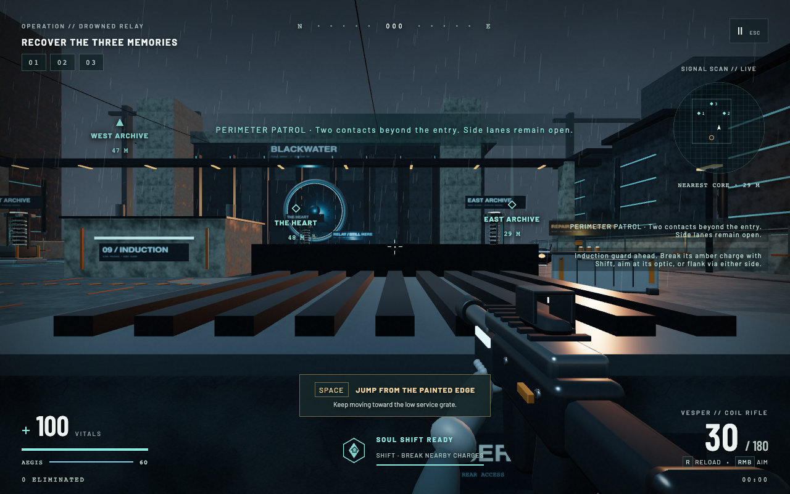
The last independent scores remain those of Build10. The next presentation pass targets the simple Warden model and its mechanical animation, rather than treating more passing tests as a higher quality score. The overall10/10 mission remains unfinished.
The old jump moved the camera while horizontal collision still assumed grounded feet, and could only land at floor height. The new player cylinder uses a 0.4 m radius, 1.9 m body and unchanged 1.7 m eye offset. Horizontal tests use the actual vertical interval. Motion is subdivided to at most 1/120 second and 0.08 m horizontal travel, with swept vertical floor/top and ceiling crossings. Standing support is rechecked after movement; walking off immediately releases support into gravity. Landing only catches a crossed top from above, never snaps a side entry upward. Jump requires existing support and a fresh keydown; repeated midair presses do not add impulse. Pause freezes movement, restart resets height and velocity.
Geometry audit: the two service vents at x ±14, z 9 have 1.1 m concrete, a 1.2 m rim, visible grate bars topping at 1.315 m, and a front lip topping at 1.75 m. All now collide at their visible heights. A continuous support envelope spans the grate bars rather than allowing feet between narrow teeth. Jump speed increases from 7 to 8 m/s with unchanged gravity 21 m/s² (1.524 m ideal rise, about 0.762 s floor-to-floor). Rear/side jumps onto the grate become deliberate optional routes; the front lip blocks a floor jump. Ground approaches to every memory and extraction remain available. Barricade collision now derives from each rotated original GLB mesh (unrotated cap top 1.52 m), replacing the oversized 1.6 m box. Separate cap/body/feet bounds prevent the wider floor feet from supplying floating top support. Its tiny jump clearance is not advertised as a reliable route. Four-metre capacitor roofs, five-metre pylons and perimeter remain inaccessible from the intended low platforms; no new assets or mandatory parkour.
Grounded enemy navigation keeps its existing separate footprint. Static Box3 cover continues to block weapon rays, enemy LOS and swept projectiles; player height already affects aim and projectile hit volumes. Phase keeps its distance/LOS check, damage, 4.5 s cooldown, 0.4 s protection and approach braking. Recovery uses a 3D range measured relative to floor eye height; extraction requires being within 0.5 m of ground eye height as well as inside the zone, preventing an elevated hold. Melee now requires reachable torso distance and clear LOS; supplies use 3D torso distance and LOS so neither hits nor pickups pass through raised cover. Ground melee and collection remain verified. Space is included in the field control ribbon. No enemy damage or health was raised.
Exactly two fresh native GPT-6.1 Sol reviewers inspected actual browser screenshots. Both retained provisional gameplay 7.5/10, presentation 7.5, usability 8, readability 7.5 and AAA readiness 2.5. The normal reviewer used visible views and ordinary controls, without teleporting, resource edits, enemy arrangements or exact-position decisions. Its first early jump failed; the second close W+Space approach mounted the grate, stayed at eye height 3.015 m during combat and walked off to 1.7 m. It fired 14 rounds with no hits/kills and took 19 shield damage while raised. This demonstrates an available route and continued vulnerability, not combat advantage or blind human learnability. The other reviewer used explicitly arranged controlled-frame fixtures and found the melee/supply/ribbon issues fixed above. Normal review with observations · normal control transcript driver · Physics review · nine browser fixtures.

Final validation: development and production smoke each passed 14 checks; combat, phase/audio, phase usability, finite encounters, playtest and mission/archive suites passed. Standalone movement checks cover landing/rest/walkoff at 20/30/60/144 Hz, low obstacle clearance, side rejection, ceiling, high wall/perimeter air dash and unsupported/repeated jump rejection. Nine arranged browser fixtures verify actual geometry, raised projectiles/phase, pause/restart, vertical recovery, melee and supplies. The encounter writer now uses a latest filename and phase screenshots use current filenames, preserving Build08/09 historical evidence.
The first integration normal-input mission won all three memories with 13 kills, 54.18 simulated seconds, 100 health/60 shield and 49% accuracy; the final post-followup run also won with all three memories, 13 kills, 50.57 simulated seconds, 100 health/60 shield and 59% accuracy. This controller uses exact enemy/collision observations and automated timing, so mission completion cannot establish human enjoyment or balance. Initial integration run · final integration run.
Remaining limits: first-jump timing and optional-route affordances need human validation; the barricade cap has only about 3.8 mm ideal jump clearance and is not a promised route. Static mesh AABBs remain conservative, especially at rotations; no exhaustive geometry-seam or hardware performance certification is claimed. Shared-courtyard scope, limited encounter variety, simple character/handling animation, audio listening and human enjoyment remain unresolved. Technical checks do not measure enjoyment, blind discovery, audio quality or AAA readiness. Original assets, Blender sources and historical reviews remain intact. The overall quality mission remains ongoing.
The Build08 visible-cue reviewer found that a successful dash passed the guard, leaving its opened armor behind the camera. Root reproduced this in a controlled opening: after the dash the guard was behind the view. A successful dash toward a charging threat now stops its remaining burst travel at the break. This does not turn the camera, deal damage, extend protection or reset cooldown; sideways/escape dodges retain their travel. Ordinary continued movement remains under the player's control.
Two fresh GPT-6.1 Sol reviewers then replayed the opening from visible cues. Both achieved a break and kept the guard in view for a normal weapon follow-up. One reviewer completed two opening attempts, including a continuous cue-to-break-to-critical-kill sequence without a pause between cue and kill. It used prior screenshot knowledge and automated cue reaction, so this remains agent-assisted evidence, not blind human learning or enjoyment.
The original Heart label covered the warden's optic at both desktop sizes. The first fix shifted it upward; the reviewers confirmed clear targeting but found a small overlap with the announcement and giant physical warning board. Final behavior instead fades central objective labels while ADS or a nearer visible threat occupies that aiming region. Radar and off-axis goals remain, and the label returns when focus moves away. This prioritizes the target without moving another label onto the announcement.
The oversized floating ten-metre instruction board was replaced by a smaller placard mounted on the entry barricade beside the lane; contextual HUD coaching still offers phase, precision and flank tactics. Warden emitter materials now use matching darker base colors and bounded amber/cyan emission through charge, stagger and armor-open states. Actual post-fix renders were inspected. These small visual followups have not been independently rescored.
The targeted browser regression checks target-focus label opacity in hip/ADS at1280×800 and1440×900, marker return, forward-break followup position, unchanged health/protection/cooldown, and full lateral travel. Existing phase/handling, finite encounter and production smoke suites passed. Original reproductions · post-fix checks · visible-cue review · second review · control observations · layout observations.

The overall10/10 goal remains unmet. The same courtyard, simple enemy forms, limited content and absence of human enjoyment/audio validation still limit the build. A further movement audit also confirmed that horizontal collision assumes grounded feet even when the player is airborne; the current jump cannot support standing on cover. The controlled observation compares camera/feet height to the collision box, not the higher rendered grate; any movement upgrade must audit both geometry and colliders rather than simply ignoring obstacles while jumping.
This implementation replaces immediate seven-enemy crossfire with one induction warden and finite location-triggered escalation. The quality mission remains ongoing: neither reviewer awarded 10/10. These are automated agent prototype judgments, not human feedback or AAA certification.
Two fresh GPT-6.1 Sol reviews: combat gameplay 7.5/10, presentation 7.5, usability/readability 8, AAA readiness 2.5; visible-cue reviewer gameplay 7, opening pacing 7.5, presentation 7.5, usability 8, readability 7.5, AAA readiness 2.5. Ratings predate the small sign-fitting and furniture-support corrections below; they have not been rescored.
blender -b --python tools/build_memory_props.py. Earlier sources remain. Perimeter placement keeps flat generous routes; simple solid bounds prevent walking through props. Props use static material batches; animated/restored core materials retain their dynamic exclusions.The visible-cue reviewer’s first ordinary W+Shift response missed: one dash, zero breaks, two evades. A fresh ordinary ingress then produced one dash and one break, full health/shield and no shots fired. Decisions used rendered cues without reading enemy positions or rearranging the encounter; the successful run used automated reaction to the visible CHARGING label, prior mechanic knowledge and pauses. It establishes that the interaction is available in ordinary ingress, not blind human discovery or enjoyment. The dash carried the guard behind the camera, making follow-up use of opened armor less obvious. A west bypass continued to 9.98 seconds at 100 health/56 shield with no kills.
The integration exact-position normal-controls controller won with all three memories, 13 kills, 52.63 simulated seconds, 100 health/60 shield, 49% accuracy and zero dashes/breaks. The independent combat controller also won: 57.49 seconds, 13 kills, 45% accuracy, zero dashes/breaks. Both observe exact enemy/collision information and are substantially advantaged. A separate ordinary opening using exact-windup timing achieved one break; arranged art captures are labeled separately. Phase is optional and its sustained value for human players remains unproven.
Development and production smoke checks passed 14 each. Combat 6, playtest 3, mission/archive 5 and phase/handling/audio 3 checks passed, plus four new encounter contracts: finite once-only stages, armored/open damage, independent optic damage and both bypasses/all-core route connectivity with solid prop bounds. The regeneration fixture now clears threats after crossing stage triggers so it continues testing a safe interval. Initial spawn assertions explicitly change from seven to one. No test removes cover collision, aim/substep, restart, ADS/input, archive or audio protections. The normal-controls exercise above ran through actual input with no teleport, resource edits or simulation advance.
Both reviewers found clipped long sign headings and floating console/cutoff details. Final integration fits text to the canvas and adds authored pedestals, display/cutoff supports and stool base, then recaptures all three bays. Also aligned hit-event damage reporting with actual armor damage. Raw review reports/captures remain unchanged. Build07 raw reports and screenshots are preserved; prior changing regression JSON snapshots are under quality-reviews/build07-baseline/.
Visible-cue review and control transcript · visible raw · combat review · combat raw mission · labeled arranged observations · integration control run · encounter contracts.

Final engineering render · final relay render · ordinary visible-cue break · integration victory.
Remaining limits: one shared courtyard, related drone silhouettes, simple procedural character/furniture forms, overshooting phase follow-up, bright optic/objective-marker overlap, limited replay variation, and no blind human play, perceptual audio review, broad accessibility audit or target-hardware certification. Installed Chrome/Playwright remained the established fallback after shared preview timeouts. These passing checks and bounded improvements do not establish AAA perfection; parent continues the quality mission.
This bounded pass adds a deliberate close-range answer to a charged shot, original Blender gloves/sleeves and an articulated reload cell, plus a restrained synthesized wind/turbine bed and directional charge cues. The 10/10 target is still unmet. Two fresh independent GPT-6.1 Sol agents inspected actual Chrome gameplay and screenshots. Their ratings are provisional agent judgments, not human feedback or AAA certification.
Fresh ratings: gameplay 7/10; presentation 7.5/10; usability 8/10; level readability 8/10; AAA readiness 2.5/10 from both reviewers. The new counter is concrete optional counterplay and the support-hand contact improves presentation. One arena, limited enemy/content variety, primitive glove anatomy and limited animation remain substantial gaps.
blender -b --python tools/build_viewmodel.py. Original rifle/assets/material sources are preserved.Development and production smoke suites passed all 14 checks each. Combat (6), playtest (3), mission (5), and new phase/handling checks passed in installed Chrome with real WebGL. The new suite verifies canceled windup, unchanged enemy health, 0.8s stagger, retained cooldown, cover/range exclusions, paused audio staying suspended even after wake, one bed across restarts and mute. The combat suite's controlled animation loop originally stalled Playwright's default animation-frame polling; timer polling fixed that test synchronization, and all six gameplay checks then passed. The final production rerun also exposed the dossier test’s obsolete exact two-image assertion after adding a third evidence image; it now checks a minimum gallery and validates every image loads.
The normal-controls controller completed all three recoveries and extraction: 18 kills, 100 health, 49 shield, 42% accuracy, 60.07 simulated seconds, zero dashes and zero breaks. It uses exact enemy positions and collision-map routing; this is not a blind human win and does not justify higher damage. The combat reviewer separately exercised real Shift/W during an arranged visible charge: the shot canceled, enemy health remained100, no projectile spawned, repeated Shift was blocked and the enemy resumed later. Natural encounter frequency and player desire to use this close counter remain unproven. The experience review's simple active movement/ADS segment died before its planned firing/reload inputs; its report explicitly records that limitation.
Both reviewers found the reload exchange mostly below frame. The final integration reduces support reach/pull and cell travel and slightly raises the weapon during reload; a new render was inspected after this correction. Also corrected BUILD07 title text and replaced unsupported “blue sparks” wording with emitter-flash wording. Review ratings predate those small final fixes and have not been independently rescored.
Independent combat review · independent experience review · combat raw run · arranged phase raw run · experience raw observations · phase/handling graph checks · integration normal-controls run. Prior baseline JSON reports are retained under quality-reviews/build06-baseline/; prior independent reviews remain intact.

Final ADS aperture · normal-controls result. Shared preview reported unavailable; installed Chrome/Playwright was the established fallback. Graph checks do not validate the perceived sound mix. No human auditory session, enjoyment study, target-hardware performance certification or broad accessibility audit occurred. Next work should address more legible authored hand/cell manipulation, richer encounter staging/content and human use of phase timing; no perfection claim follows from passing tests.
Two separate GPT-6.1 Sol reviewers performed browser runs and candid assessments across three rounds. The developer continued after both the initial review and the first re-review. Scores below are their actual provisional judgments. They are not human audience data or certification.
AAA production readiness was rated 2/10 by the combat reviewer and 2.5/10 by the latest experience reviewer. The stronger interface and loop do not remove the limits of one arena, simplified art and animation, and limited encounter content. Build 06's Blender-baked material changes are newer than those ratings and have not been independently rescored.
tools/build_materials.py. Maps were baked in Blender Cycles, not downloaded.The last normal-control combat reviewer completed all recoveries and six-second extraction with19 eliminations and no browser exceptions. Its exact-position aim and route planner are substantial advantages; its full-health win does not justify raising damage for human players. The same review's movement-only test took meaningful damage. Remaining opportunities include phase-specific encounter depth, authored weapon/hands animation, more environmental storytelling and variety, and professional sound/content work.
Reports: 03 combat · 03 experience · 04 combat · 04 experience · 05 combat · 05 experience. Targeted rules: recovery, extraction and archive checks. Technical test success is tracked separately from quality ratings.
Work remains. No reviewer has awarded10/10. Subsequent passes must preserve these reports, implement verifiable improvements and obtain fresh honest reviews. A high score must not be manufactured by changing the rubric or treating technical checks as subjective approval.
A separate GPT-6.1 Sol subagent reviewed the game with browser controls and targeted reproductions. It found two reproducible defects: enemy projectiles could cross concrete depending on their frame alignment, and restarting retained zoom/recoil presentation. This was an automated agent review, not independent human feedback.
Independent pre-fix report · Root post-fix evidence. Reproduce with the dev server running: npm run test:combat. Six targeted checks pass, covering timing, aim, blocked and unobstructed projectiles, restart state, and a visible muzzle flash on slow frames. A follow-up render check caught and corrected flashes expiring before their first display on a 100 ms frame. The updated normal-control automated run also recovered all three cores, eliminated 17 enemies and extracted, with no browser exceptions; the run is recorded here. It retains the same exact-position and route-planning advantages described below. These are bounded correctness checks; they do not establish perfection or subjective enjoyment.
Status: independent human feedback is pending. This is a prototype. No numerical quality score is assigned. Functional tests and an automated controller do not establish fun, visual realism, commercial appeal, or AAA production readiness.
A normal-control automated combat run of the initial build recovered all three cores, eliminated 17 enemies, and extracted with full health. It used mouse movement events, firing, WASD, reload, and E; it did not teleport, clear enemies, alter resources, or accelerate simulation. The controller had exact enemy positions and a collision-map route planner. Its success is evidence of completion through controls, not evidence of human difficulty or balance. The software renderer and screenshots also affected wall-clock timings.
Records: initial normal-control run and limitations · fix verification. Reproduce with a running dev server: npm run test:playtest and npm run playtest:controls.
Can a new player find the objectives without coaching? Does aiming feel responsive? Are enemy charge cues understandable? Is Soul Shift useful rather than unnecessary? Does the return trip feel different? Is a second attempt appealing? These remain questions for actual players. The next changes should follow their specific observations, not a self-awarded rating.
At a coastal station built to preserve human memory, the dead have begun transmitting a distress call. You are the operator sent to bring them home.
SOULFALL is a first-person recovery shooter about pushing into danger for something worth saving. You breach the Drowned Relay, reclaim three soul cores under escalating resistance, and fight your way back to extraction. Your rifle rewards precision; your Soul Shift dash rewards timing. The setting is cold, physical, and industrial. Its supernatural element is a small, legible rule with a strong emotional frame.
The studio pitch: a premium, atmospheric campaign FPS whose central combat verb is a short phase dash through telegraphed incoming fire. The full production would build human stories around the memories being recovered. This prototype demonstrates one arena, the complete recovery loop, and the visual/combat direction.
I think the strongest element is the relationship between theme and action: you are literally carrying lost lives out of a hostile machine. The mission is readable without a lore lecture. A player can understand the objective, feel the stakes, and discover the dash's tactical uses in the first encounter.
Deploy at the southern insertion point. Read the courtyard, identify cover, and locate the cyan signal sites. Initial sentinels establish the rules.
Approach a core and hold E to recover its memory. Each recovery restores shields, offers health and ammunition, and introduces reinforcements. The order is yours.
Use cover, aim for critical hits, collect enemy supply drops, reload between threats, and dash when a sentinel charges. Surviving creates momentum.
Return all three cores to the green extraction ring at insertion. A scored result closes the mission. Failure offers an immediate clean restart.
The game includes title, briefing, controls, difficulty selection, sensitivity and volume settings, reduced camera motion, pause/resume, success/failure screens, score, and local personal bests. It is one self-contained single-player operation, with no account requirement.

Decision: use a roughly 74 × 84 metre playable footprint with a central splitter, lateral routes and cover islands. Why: sightlines, navigation, and flanking matter immediately. A compact environment lets the same space become more dangerous on the return trip and keeps the whole mission finishable.
Decision: recover three spatially separated cores, then return to insertion. Why: the player owns route selection, but the mission has a clear endpoint. Extraction transforms familiar ground into a final commitment. The last pickup is the beginning of the last act.
Decision: a 4.5-second cooldown dash, with collision respected. Why: the player can counter a telegraphed attack and cross a short exposed gap. It is a timing tool rather than a permanent escape. Solidity still matters; the dash cannot pass through concrete.
Decision: an automatic coil rifle with 30-round magazine, 1.65-second reload, ADS, recoil, critical hits, and ammunition economy. Why: a coherent primary weapon supports a polished loop better than several incomplete guns. Body hits deal 34 damage; head hits deal 82. Precision materially reduces exposure.
Decision: orange/red sentinels charge before shooting, aim at a previously sampled position, and fire visible projectiles. Faster stalkers press closer; standard sentinels maintain distance. Why: movement and dash can answer danger. Local steering, separation, cover occlusion and strafing create a fight with changing angles.
Decision: 100 health, 60 regenerating shield, guaranteed enemy supplies, and recovery rewards at objectives. Why: cautious play offers shield recovery, while successful aggression offers ammunition and modest healing. The player has reasons to leave cover. Shield regeneration begins after five seconds without damage.
Decision: finite reinforcements on recoveries, rather than an endless spawner. Why: the defense response is consequential, but completion is achievable. A player can stabilize a dangerous situation and see progress.
Decision: Recon, Operator, and Veteran tune enemy health, damage, movement, and firing cadence. Why: the prototype should be explorable by a studio reviewer and demanding for an experienced player. Settings disclose that difficulty changes apply on next deployment.
Decision: cyan signals life/recovery/player technology; orange marks industrial hazards and hostile fire; green signals active extraction. Why: quick combat reading and a coherent brand. Text, shapes, HUD progress, and beams supplement color.
Decision: restrained typography, small operation labels, a clear health/shield pair, ammunition, core count, compass, objective tracking and cooldown. Why: information belongs at the edges; the target belongs in the center. The front end feels like an operational briefing rather than an unrelated launcher.
Decision: synthesize gun reports, impact confirmation, charge warnings, reloads, footsteps and recovery stingers using Web Audio. Why: immediate action feedback without licensing ambiguity or a heavy audio download. This is an authored prototype soundscape; a production needs dedicated sound design and spatial mix.
Decision: prioritize mouse and keyboard, pause on focus loss, retain sensitivity/volume/motion preferences locally, and offer a drag-to-look fallback when pointer lock is unavailable. Why: precision aiming needs dependable input. Reduced camera motion removes bob and recoil motion; keyboard focus remains visible in menus.
The mood is a North Atlantic industrial dusk: slate concrete, brushed titanium, graphite machinery, wet ground, cold cloud light, and small warm service lamps. Brutalist masses, overhead gantries, suspended cable runs, harbor cranes, and the turbine silhouette establish scale beyond the combat floor.
Four original assets were actually built in Blender: the induction signal pylon, reinforced barricade, machine sentinel, and first-person coil rifle. Their meshes use beveled edges and material separation for metal, rubber, safety enamel, concrete and emissive conductors. The source is retained in public/assets/soulfall-assets.blend; the reproducible authoring/export script is tools/build_assets.py. Exported GLBs live beside the source.
Large modular architecture is authored in Three.js. Concrete maps and a reflection environment are generated locally. Puddles use glossy physical materials; rain uses batched line geometry. This is real-time PBR rasterization with shadows and tone mapping. It is not ray-traced photorealism, and the prototype does not claim production-level scanned surfaces or character fidelity.
Why I like the art: the large turbine, cyan core sites, and compressed skyline give the courtyard an identity. The assets support the encounter's logic: a pylon announces an objective, a barricade supplies protection, a red optic announces an opponent. Beauty and navigation share the same geometry.
Blender exports were checked for valid glTF headers and nonempty geometry. Asset meshes are joined by material; static architecture is merged to reduce draw calls. The game loads the actual GLBs, with weapon/enemy fallback geometry for resilience. No commercial game models or third-party sound recordings were imported. Barlow and Barlow Condensed fonts are bundled locally under their included SIL Open Font Licenses.
world.js owns environment creation; game.js owns simulation and rendering; audio.js owns synthesis; main.js owns menus and HUD. Two additional GPT-6.1 Sol agents contributed environment/assets and gameplay, with root integration and verification.?test=1 URL enables the deterministic debug interface used by the browser tests. Normal play does not expose that interface.npm ci
npm run dev
# production
npm run build
npm run preview
# browser verification
npm testUse the project's Play SOULFALL T3 Code script, or open Vite's printed local URL. The shipped dist/ includes this dossier. A desktop WebGL 2 browser and hardware acceleration are the intended environment.
The verification record below is maintained against this build. Automated tests use a real Chromium browser and the actual WebGL game, not a mocked engine. Deterministic hooks make state transitions and edge cases repeatable; screenshots document the actual rendered result. These are engineering checks and visual inspection, not independent human fun validation.
Recorded run: 2026-11-01T00:07:10.400Z · 156.0.8078.76. The same 14 scenarios passed against development and the built production bundle hosted beneath the repository subpath. Production build completed successfully. No browser errors or failed HTTP responses were observed.
Additional gameplay-agent checks: concrete blocked rifle damage; an unobstructed critical hit dealt 82 damage; active enemy AI reduced shield from 60 to 3 over eight simulated seconds. Collision-respecting movement reached all cores and extraction without teleporting. Enemies were cleared during that route check to isolate traversal; it is not a human combat playthrough.
Machine-readable evidence: development suite, production suite, targeted gameplay suite. Initial failures uncovered and corrected keyboard focus, oversized weapon framing, asset cleanup ownership, retained dash invulnerability on restart, a malformed stylesheet import, and a missing document favicon. Production-subpath checks verified asset and dossier links.
How good has been verified: functional correctness can be checked with assertions; visual coherence can be inspected; subjective fun and commercial appeal require people. No external playtest panel, studio approval, target-hardware performance certification, or accessibility audit has occurred. This document does not turn a passing smoke test into a claim of AAA readiness.
The case is the combination: a clear emotional premise, a cinematic place, precision gunplay, a signature movement ability, recoveries that change encounter pressure, and an extraction finale. Those elements can support a trailer, a hands-on demo and a campaign pitch in the same vocabulary. The browser makes the initial hands-on demo easy to distribute.
What I like most is the pace change when the third core is recovered. The space stops being a collection of objectives and becomes the route home. Soul Shift has a natural place in that reversal: it is both a way to commit and a way to escape.
A major production might retain the browser prototype as a pitch and move to an engine with mature high-end content tooling. That decision should follow target hardware, team expertise, fidelity budget, and distribution strategy. The gameplay thesis is portable; this codebase is not a substitute for a AAA studio pipeline.
The delivered scope is one complete playable mission. It is not “the perfect FPS,” a full campaign, or a commercial AAA release. Perfection is not a testable completion criterion. This project instead supplies a reviewable game, original source assets, reproducible builds, browser tests, and the rationale behind the decisions.
What would change my mind: if independent players do not enjoy the gunplay, understand the dash, or feel a satisfying shift during extraction, the core pitch needs revision before expanding content. The next investment should be player evidence, not more untested features.
My assessment: SOULFALL has a coherent hook and a complete encounter arc worth putting in front of players and a studio. The prototype earns a conversation through something playable. Its commercial potential remains a hypothesis to validate.